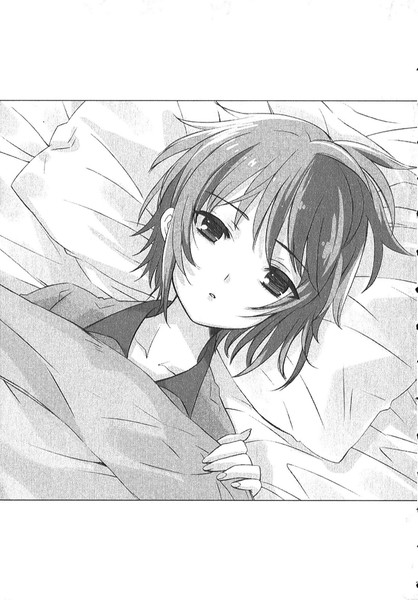
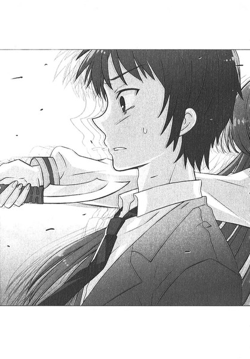
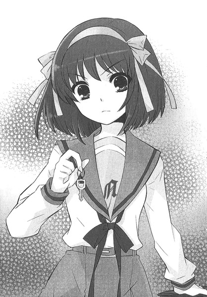
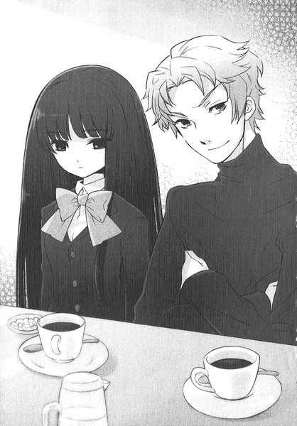
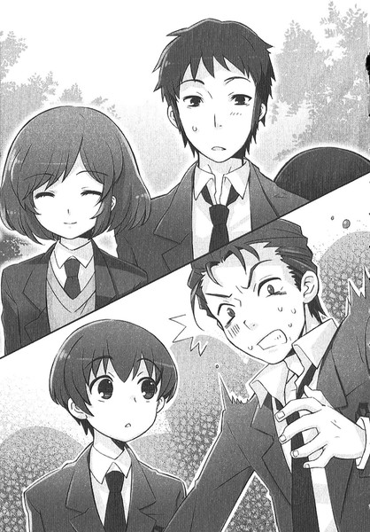
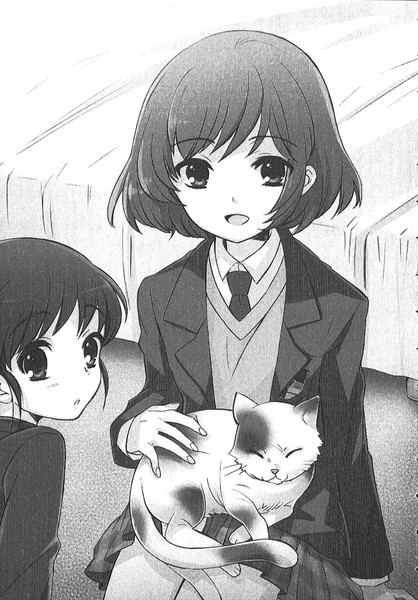

| [谷川流] 涼宮ハルヒ10 | |
| 谷川流 | |
| (2015) | |
|
涼宮ハルヒの驚愕（前）
谷川流
|
底本データ
一頁16行 一行42文字 段組１段
α─ ３字上げ
β─ ３字下げ
「〈」「〉」置換え
●谷川流
兵庫県在住。２００３年、第８回スニーカー大賞く〈大賞〉を『涼宮ハルヒの憂鬱』で受賞し、デビューを果たす。また、電撃文庫より『学校を出よう！』『電撃!!イージス５』『絶望系閉じられた世界』『ボクのセカイをまもるヒト』の著作がある。趣味はバイクと麻雀。人生七転八寝中。今一番欲しいものは宇宙シミュレータと夏への扉。
ＳＯＳ団の最終防衛ラインにして、その信頼性の高さは俺の精神安定に欠かさざる存在であるところの長門が伏せっているだと？原因はあの宇宙人別バージョン女らしいんだが、そいつが堂々と目の前に現れやがったのには開いた口も塞がらない心持ちだ。どうやら、こいつを始めとしたＳＯＳ団もどきな連中は俺に敵認定されたいらしいな。上等だ、俺の怒髪は天どころか、とっくに月軌道を超えちまってるんだぜ？待望のシリース第10巻！
涼宮ハルヒの驚愕（前）
ＣＯＮＴＥＮＴＳ
第四章...
第五章...
第六章...
第四章
α─７
月曜日という平日の第一日目に節目も何もあったものではなく、怠惰な休日を過ごしていた日曜の弛緩した状態が身体に残っているためか、学校から自宅へと至る道がやけに長く、歩行時間もまた永いように感じる。
ハルヒたちと歩いていた下校の途中まではまだ気が紛れてよかったが、別れて一人になると途端にうら寂しいような心持ちになるのは、どうやらＳＯＳ団の面々と一緒にいるのが俺にとってオーソドックスモードになってしまっているからのようだ。とりたてて気を付けていたわけではないものの、すっかり朱に交わってしまった現在の自分を何と表現すべきだろう。藪をつついていたつもりが自分が棒だったとでも言うべきか。
「まあ」
俺は足を止め、意味もなく振り返ってみた。春の登下校路がいつもより明るく見える。それは放課後にやってきた入団希望者の一年生たちがやけに初々しく目に映えていたからかもしれないし、単に日照的な気象条件のせいであったからかもしれない。
「どうだっていいことさ」
この独り言もまったく無意味だ。たまに思うのだが、独り言ってのは誰かに聞かせてなんぼのものじゃないのかね。誰にも伝わらなかった言葉は発声練習以上のものではないだろうからな。そして俺には独り言を呟くクセなどないつもりだ。だから、今のセリフは自分に言い聞かせているものなのである。
実際、ハルヒが朱色なんだとしたら俺はとっくの昔に赤く染まっちまっているわけで、今さら別の色のペンキを頭からかぶろうとは、たとえそんなことが可能だったとしてもゴルジ体の直径ほども思わんね。
てなことを考えつつ、俺は帰巣本能のおもむくまま自宅へ戻る作業を再開し、佐々木やら九曜やらという新年度に割り込んできたＳＯＳ団的イレギュラー因子たちのことも頭の隅に追いやって、自室にて夜を迎え一日を終えることになるのは俺のごくナチュラルなタイムテーブルであり、当たり前だが普通にその通りになった。
そんなわけで────。
特筆すべき事は、今日のところはもうない。
そのはずだ。
β─７
崖から転がり落ちる石ころのような勢いで、というとさすがに誇張だが、ハルヒが坂道を進む速度は競歩の世界選手権代表といい勝負だったと言える。
ハルヒの後ろ姿から伸びる見えない綱に引っ張られるがごとく、俺と古泉、朝比奈さんも下校路を下り続け、ようやくの平地である光陽園駅前にたどり着いた時点ですっかり息が上がっていた。常にデオドラント状態の古泉でさえ、額の汗を拭っているくらいだから程度が知れるだろう。朝比奈さんなんか膝に手を当ててふうふう言ってる。
しかし、この女だけは放射性物質を体内で飼っているかのような疲れ知らずで、
「なに休んでんのよ！ ここまで来たんだから、後は走るわよ！」
長門のマンションめがけて徒競走を始めた。
これまた五輪級のスピードで、ハルヒについていけるのは現役生活全盛期の実業団アスリートくらいだ。古泉を先行させ、俺は遅れがちな朝比奈さんの鞄を持って可能な限り全力の早足で後を追う。
「ひぃ。はふ」
脚をもつれさせる朝比奈さんを気遣いつつ、遅れて到着した俺を、ハルヒはマンションのエントランスで待っていたが、全員が揃ったのを確認した瞬間にインターホンのボタンを押した。７・０・８、呼び出し。
応答は即だった。待っていたようなタイミングで、
『............』
「有希、あたし。みんなでお見舞いに来たわ」
『............』
ふつっとインターホン通話が切れ、オートロックのマンションドアがゆっくりと開く。
一階で停止していたエレベータに乗り込み、ハルヒは７Ｆを示すボタンを連打した。あまり広いとは言えないエレベータは四人も乗ればかなり手狭であり、朝比奈さんの息づかいがすぐ耳元で聞こえるほどだ。あとはかすかな機械の音。
まるで人力かと思うほどノロノロと上昇する箱の中で、ハルヒはずっと口元をひん曲げていた。機嫌を損ねているわけではない。どんな表情をしていいのか迷ったとき、とりあえずこいつは怒ったような顔を作るのだ。
エレベータの扉が七階で開くのを待ちかねたように、ハルヒは肩で風切り音を発生させつつ通路を進軍し、７０８号室のドアホンを連続プッシュした。
室内の人物が内側で待機していたような速やかさで施錠が外され、ゆるゆると鉄の扉が開かれていく。暖色系の室内灯を逆光にして、人影が玄関先に伸びている。
「............」
ドアの隙間が形作った矩形の中に、ぽつねん、という感じで立っていたのはパジャマ姿の長門有希だった。
「起きてていいの？」
ハルヒの問いに、長門は茫洋とした瞳でうなずき、戸棚から人数分のスリッパを取り出そうとして、
「そんなのいいから」
足だけで靴を脱いだハルヒに止められ、肩を押されて速やかに寝室へと運ばれた。長門の部屋には俺や朝比奈さんだけでなく、全員が何度も来ているのでハルヒの頭にも間取りは当然入っている。俺は寝室に足を入れたことはなく、せいぜいリビングと客間の和室くらいだが、そんなこともどうでもよかった。
本当にベッドしか置いてない寝室にお邪魔した俺は未踏の地に足を踏み入れた感動を味わう前に、ハルヒに寝かしつけられている長門の様子をひたすらうかがった。
「............」
天井を凝視する白い顔は揺るぎなく無表情で、熱を帯びているようには見えない。いつもと違うところを探せば、髪が寝癖にまみれているくらいだ。常態より二ミリほど目蓋が閉じていると俺の観察眼が告げていたが、少なくとも苦しげではなさそうである。しかし色気のないパジャマだな。
俺は少しばかり平静を取り戻し、そうして初めて冷静さを欠いていたことに気づいた。
ハルヒは長門の額に手を置いて、
「有希、ご飯食べた？ 頭痛い？」
長門の頭が枕の上で微細に左右に動く。
「食べなきゃダメよ。一人暮らしなんだし、そんなことだと思ったわ。んー」
余っている手を自分の額にも当て、
「ちょっと熱あるわね。氷枕、あったっけ？」
長門の回答は否定の仕草だった。
「まあいいわ。後で冷却シ－ト買ってきてあげる。それよりご飯ね。有希、冷蔵庫の中身と台所借りるわよ」
ハルヒは長門の許可を待たず、立ち上がるのと歩き出すのと朝比奈さんの腕をつかむ行為を同時におこない、
「あたし特製おかゆを作ってあげるわ。それともスペシャル鍋焼きうどんがいい？どっちを食べても風邪なんか一発よ。みくるちゃん、手伝って」
「はい......はいっ」
心配そうに長門を見ていた朝比奈さんは何を動転したのか大量のスリッパを抱きしめていたが、何度もうなずきながらハルヒに伴われ、しかしハルヒは部屋を出る寸前で立ち止まってバカみたいに立ちつくしている俺と古泉に、
「二人とも寝室から出てなさい。女の子が寝てるところを眺めてていいもんじゃないわ」
「それでしたら」と古泉が、「僕が買い物を担当しましょう。冷却ンートと風邪薬でいいでしょうか」
「ちょい待って。晩ご飯の用意もあるから、冷蔵庫の中身次第ね。ネギあるかしらネギ。うん、お買い物メモ作るわ。来てちょうだい、古泉くん」
「かしこまりました」
出際に古泉は俺の肩を叩くスレスレの仕草で触れ、妙な目配せとともに退室した。
何をすることもなく突っ立つ俺と、ベッドで綺麗に仰向け体勢を作っている長門が残される。
キッチンの方からハルヒが朝比奈さんと古泉に何やら指示を飛ばしている声が切れ切れに聞こえていた。「缶詰ばっかじゃないの。これじゃ栄養が偏るわ。おいしい野菜をどっさり食べないから体調がおかしくなるのよ。みくるちゃん、お米をといで炊飯器、ついでにそっちの土鍋用意して、それから古泉くん、卵とほうれん草と長ネギと......」
こういう時のハルヒは役に立つ。団長だからと言いつつ、ＳＯＳ団とは関わりのない作業になるとあいつは一級品なんだ。料理の腕前が確かなのは俺の舌がよく知らされている。
しかし、今は雑音に気を取られている場合ではなかった。
まず、問おうか。
「長門」
「............」
「具合はどうだ。俺の見たまんま、感じたまんまで合ってるか？」
「............」
「声が出ないのか？」
「出る」
長門は漠然と天井を眺め続けていたが、ゆるゆると掛け布団ごと上半身を起こした。起き上がりこぼしでもこれよりは左右に動くだろうと感じさせる、まるでアンダーテイカー。
「お前がそんなことになってるのは、九曜とやらのせいか」
「そうとは言い切れない」
長門の石英を研磨したような目が、静かに俺を見据える。
「でも、そうとも言える」
「九曜ってやつがやってんじゃないのか？ その──」
冬の一件、幻の館で長門が倒れたとき、あれはどういう仕組みだった？吹雪の山中を何時間も彷徨い、ようやく見つけた灯りの元は脱出不能の洋館で、そこで長門はいつもの冴えを失っていた。あれは......。
「負荷」
長門が囁くように呟き、ぼんやりした目を布団に落とした。
こいつ、こんなに小さな身体をしていたっけ。一日目を離していただけなのに、ずいぶんと薄っぺらくなっているような印象を受ける。
天啓が走り抜け、俺は気づく。
「いつからだ」
俺は昨日の出来事を思い出しつつ、
「お前が熱で寝てなきゃならなかったのは、いつが始まりだ」
「土曜の夜」
新年度第一回不思議探索パトロールのあった日だ。あの日中の長門は平熱に違いなかった。
まさか、俺が佐々木から風呂中に電話を受けとったあたりじゃないだろうな。
「............」
長門は答えず、黄砂のような漠とした目で俺の胸あたりを見つめている。
考えてみればおかしかったんだ。昨日、日曜。俺は佐々木に呼ばれて橘京子、周防九曜、藤原と会席したわけだが、そこに意外な闖入者がいた。
喜緑江美里さん。俺たちの一コ上で、長門とも朝倉とも違う情報統合思念体のインターフェイス。これまで長門や生徒会長の陰に隠れ、表に出てこなかった宇宙人作製による有機ヒューマノイド。あの日に限って喫茶店でアルバイトしていたなどという、そんな偶然があるわけはなかったんだ。喜緑さんは九曜の監視を請け負っていたに違いない。何のために？九曜が俺に何か宇宙的なイタズラを仕掛けないようにだろう。だが、本来ならそれは長門の役目だったはずだ。そして長門はあの場にいなかった。
突発的な怒りが渦巻き、俺は自分のテンプルを一人クロスカウンターで撃ち抜きたくなった。
とんだボンクラだ。あん時に解っておけよな、俺よ。
長門が動けなくなっていたから、喜緑さんが出てきたんだ。長門のバックアップ、朝倉涼子はもういない。唯一、俺たちの周りに存在するのは派閥は違えど喜緑さんだけじゃないか。だから喫茶店に喜緑さんがいたんだ。つかず離れず、ウェイトレスに扮装してまで。
長門の目は今までになく鈍い色をしていた。古い地層から掘り出した和同開珎みたいな輝きで、まるで新鮮さを欠いている。削ったばかりの鉛筆のようだった、あの光沢のある黒い瞳が失われていた。
エアコンのないこの寝室はほとんど常温だ。なのに俺は精神的肌寒さを感じる。俺の身体ではなく、心が寒さを主張していた。
「どうすればお前を治してやれる」
市販の風邪薬やハルヒ特製料理で収まるほど、一筋縄でいくものじゃない。いわば宇宙病原体だ。そんなもののワクチンや特効薬を精製できるのは長門くらいで、そして倒れているのは長門有希本人だった。
「............」
色の薄くなった唇を閉ざして十数秒、長門はようやく唇を動かし、
「わたしの状態回復はわたしの意思では決定されない。情報統合思念体が判断する」
あの薄らバカげたお前の親玉か。一度俺の前に出てきやがれ。腹蔵なく話し合おうじゃないか。
「不可能。情報統合思念体は、」
長門は目蓋をさらに一ミリほど下げ、
「有機生命体と直接的に接触できない......だから、わたしを作り出した......」
くらり、と揺れた寝癖頭がぽすんと枕に舞い戻った。
「おい」
「平気」
改めて確信する。これはただの熱じゃない。長門を襲っているのは、地球上のどんな名医がドリームチームを結成しても解析することができないたぐいのものなのだ。
天蓋領域なるコズミックホラーどもからの情報攻撃。長門に負荷をかけることで万能の宇宙パワーを封じている。
「九曜に話をつけたら何とかなるのか」
それ以外に考えられない。長門が統合思念体の代表者なら、九曜は天蓋領域とやらのエージェントだ。長門ほどではないが言葉が通じる相手であるのは佐々木や橘京子たちから教わった。かなりの低次元だが、それでもあいつは日本語を喋っていた。だったら、俺の話す言葉だって理解しやがるだろう。
「言葉は......」
長門が薄っぺらいセリフのような吐息のようなものを漏らし、
「言語は難しい。今のわたしは対有機生命体インターフェイスとの対話に向いていない。わたしには言語的コミュニケーション能力が欠如している」
それは最初から解ってた。だがお前の無口さは今やなくてはならないものだぜ。俺にもハルヒにも。
「わたしは............」
しかし長門自身は透明な苦渋を噛みしめるような無表情で、
「わたしという個体に社交性機能が付与されていたら、」
白皙の表情はどこを切り取っても無限小に限りなく近い無でしかなかった。
「朝倉涼子のようなツールを持ち得た可能性はゼロではなかった。そのように作られなかった。確定されたインデックスには抗えない。わたしは活動を停止するまで......このままで......いる......」
三ミリほど閉じられた双眸が無機質な天井を見つめていた。
俺はかける言葉をなくす。
もし長門と朝倉の立場と中身が入れ替わっていたらどうだっただろうか。無口で排他的な読書好きの委員長。かたや、人好きのする笑顔で世話焼きな唯一の文芸部員。
あきらかなミスマッチだ。いや、その前に想像できない。俺は長門からナイフで刺されたり、その状況下で朝倉に助けられたかったりしなかった。あっちのが朝倉で、こっちにいたのが長門で心底よかったと信じて疑わない。すまんな朝倉。もう二度とカナダとやらから帰ってこなくていいぞ。俺には長門で充分だ。長門とハルヒと朝比奈さん、この三人だけで幸せ袋はいっぱいではち切れそうなんだ。
「教えてくれ、長門」
ザンバラとした前髪の長門の顔に、屈み込んで口を近づけた。
「俺はどうしたらいい。いや、どうしたらお前は元に戻るんだ」
「............」
答えはなかなか訪れなかった。
時間をかけて長門は俺に視線を向け、ようやく放った言葉ははなはだ短く、

「何も」
「何もって、お前......」
俺が身を乗り出しかけたとき、
「こらぁっ！ キョン、有希に何しようとしてんのよっ！」
セーラーの上にエプロンをひっかけたハルヒがシャモジ片手に仁王立ちし、二等辺三角形のようになった目を怒らせていた。
「さっさと手伝いなさいよ。古泉くんなんか、もう買い出しに行ってくれたわよ。あんたも役に立ちなさい。むしろあんたが一番働かないといけないんだからね。だってあんたはあたしたちの雑用係で、肉体労働といったらあんたでしょっ。お皿用意したり箸を洗ったり、色々することが目白押しよ！さあ来なさいったらっ」
俺はハルヒに首根っこをつかまれ、水害時に使う土嚢のようにズルズルとキッチンまで引きずって連れて行かれた。
いいとも。何だって手伝うさ。長門が回復するんであれば、どんな料理だって作ってやる。そうだな、可能性があるなら、ここ、今だ。ハルヒの作る滋養強壮ゲテモノ料理をもってすれば地球外生命体も青くなって裸足で逃げ出すかもしれない。それもよほどマズければの話だ。
しかして俺はハルヒが作った料理にうっかり感涙しそうになっても舌が拒絶したことはなかった。確実に言える。すまない、我を育てたまいし母よ、ハルヒの手料理は貴女が作る晩飯よりうまい。
こいつが子育てしているところなど想像もできないが、ハルヒの最もダイレクトな子孫が味覚障害に陥ることだけはないだろう。
システムキッチンに立つハルヒは、ぐつぐつ煮えている土鍋の火加感を朝比奈さんに一任し、一息つくように蛇口に直接口をつけて水を飲んだ後、
「少し安心したわ。有希が学校休むなんて考えたこともなかったから、もっとタチの悪い風邪かと思って不安だったのよ。熱もそんなにないし、消化のいいものを食べて寝てたら大丈夫そうね」
「病院に行くまでもなさそうですね」
古泉がさりげなく口火を切った。長門に人間の医者が役立ちそうにないのはハルヒ以外全員が知っていることだが、言われてみれば話題に出さないのも不自然か。
「僕の知り合いにいい医師がいますから、いざとなれば良く効く薬を処方してもらいますよ」
ハルヒは唇を袖で拭いながら、
「薬なんか気休めみたいなものよ。だから逆に気合いで冶すわけ」
高説を垂れ始めた。
「薬が苦いのはね、風邪の細菌とかウイルスとかを『こんなマズいものが身体に入るんなら出ていこう』って騙くらかすためなのよ」
「そ、そうだったんですかぁ？」
「そうよ」
そんな自信満々な顔で朝比奈さんに嘘を吐くな。信じたらどうする。
というツッコミを入れる気にもならず、俺は古泉とともにリビングの電気のついていないコタツに入って漫然たる時間を過ごしていた。
買い物から帰ってきた古泉は即座にお役ご免を言い渡され、最初から何の任務にも就いていなかった俺は棚から食器を出して水洗いした程度の雑役で許されて、朝比奈さんを助手にしたハルヒがテキパキと調理している姿を眺めているのみである。
それにしてもハルヒの手際のよさは、解ってはいたが専業主婦顔負けだ。野菜を刻む包丁さばきも、ダシの取り方一つを見ても、よくぞここまで難なくこなすものだと感心するぜ。
「こんなの慣れたら誰だってできるわよ」
ハルヒは言った。小皿で鍋汁を味見しつつ、
「あたしは小学生のときから料理してるんだもの。家族の誰よりもうまいわよ。あ、みくるちゃん、醤油とって」
「はぁい」
そういやハルヒが弁当を持ってくることは稀だが、オカンは作ってくれないのか？
「言えば作るでしょうし、たまに作りたがるけど、あたしが断ってんの。お弁当がいるときは自分でやるわ」
ハルヒは若干複雑な表情となり、
「こんなこと言うのもなんだけど、うちのおか......母親はね、ちょっと味オンチなのよ。舌がおかしいの。おまけに調味料を目分量で入れたり魚の焼き加減も適当なもんだから、同じ料理でも毎回味付けが違うわけ。子供のころはそれが普通なのかと思ってて、おかげで学校の給食が一番おいしいものだと思ってたわ。けど、ためしに自分で作ってみたら、それが物凄くおいしかったのよね。あ、みくるちゃん、味醂とって」
「はぁい」
「今は晩ご飯の半分はあたしが作ってるわ。母親は働きに出てるから、お互い助かってるって寸法よ。実体験に勝る練習はないって本当ね。料理でも何でも、やっぱり日々の精進が必要なわけ。別に精進に精を出すことはないけど、やっているうちに自然とコツが飲み込めるものよ。みくるちゃん、これ味見してみて。どう？」
「はぁい。......あ、おいしい......！」
「でしょ？ あたし特製オリジナル野菜スープよ。ビタミンはＡからＺまでたっぷり、スタミナ抜群。倦怠感や頭のモヤモヤなんてこれで土星の輪までひとっ飛び」
適当なキャッチコピーを述べながら、ハルヒは深皿にスープの中身を移し始め、ついでに土鍋の火を止めて蓋を開けた。途端に俺の腹が鳴る。食欲を増進させるいい香りだ。
「こっちが有希専用のおかゆ。キョン、何よその物欲しそうな顔。あんたにはあげないわよ。それより有希の部屋まで運ぶの手伝いなさい。そのくらいしてもバチは当たらないでしょ」
言われなくても今ならどんな滅私奉公でもする。できるのがこれくらいってのが情けなくてしかたがないだけだ。
俺はハルヒのよそった雑炊と野菜スープを盆に載せ、慎重に長門の寝室へ運んだ。朝比奈さんは急須と湯飲みを持って同行する。古泉はハルヒ指定の漢方薬と水の入ったコップを持って後に続き、ハルヒがまっ先に寝室の扉を開いた。
「有希、できたわよ。おまたせ」
「............」
長門はゆっくり身を起こし、俺たち四人に物言わぬ瞳を向けた。
「先に薬飲んじゃって。これ、食前用だから。あたしの経験から一番よく効く薬を選んできたわ。ご飯はその後ね。まだお代わりはあるから、どんどん食べなさい。お昼抜きなんでしょ？」
ハルヒのポジティブなかいがいしさがひたすらまぶしい。このパワーの片鱗を与えられたなら、確かにちょこざいな感冒ウイルスふぜいなど靴を履かずに家から出て行くだろう。まともな生存本能を持つ病原体なら必ずそうする。
「............」
長門はベッドから降りようとして、またもやハルヒに止められた。古泉が紙に包まれた薬とコップを渡し、長門は効果のほどを疑念視したように見つめてから、義務的にそれを飲む。
ハルヒ的には手ずから長門の口元に料理を運びたかったようだが、長門は拒絶して、茶碗とレンゲを受け取った。一口すくって、食べる。
「............」
ろくに咀嚼せず、つるりと滋養強壮粥を飲み込む長門を、ハルヒは頭を突き出すようにして見つめていた。ハルヒだけではなく、俺と朝比奈さんと古泉もだ。
「............」
長門は手にした茶碗をヨウ素液を垂らしたデンプンの変色を観察するような目で見ていたが、
「おいしい」
小さな声で呟いた。
「そ。よかった。もっと食べなさい。じゃんじゃん食べなさい。これが野菜スープよ。本当はもっと煮込めばよかったんだけど、これで充分味が染み出ているはずよ」
勢い込んでハルヒの突き出した皿を取り、長門はこくりと飲んで、
「おいしい」
「でしょう」
ハルヒは途方もなく嬉しそうに、長門の食事風景を見守っていた。
長門はちまちまと一定のリズムで食べ続けている。ハルヒの手料理に感動しているかどうかは定かではないが、大盛りのレトルトカレーを食べていたときに比べたら味わっているようにも見えたものの、本当は食欲のなさを無理矢理抑え込んでいるのかもしれなかった。長門は出されたものは何でも食べる。食べる必要がなくてもそうする。
何かいたたまれなかった。
それは長門がベッドの上でパジャマ姿でいるからか、ハルヒの作った養生食を黙々と食べているからか、それともこうして手を伸ばせば触れられる距離にいるというのに長門の存在感がいつもより希薄に見えるからなのか。
「すまん」
俺は誰にともなく断りを入れ、
「ちょっと手洗いを借りる」
誰の返答も待たずに寝室を出てトイレに入った。何も催してなどいないが、これ以上長門の姿を眺めていたら対象の定まらないものに対して意味なく怒りにかられそうだった。
小綺麗な便座カバーに腰を下ろし、俺は唇の内側をやわく噛む。そして考える。
当面、俺が大急ぎで問いつめなければならないヤツの最優先が誰か解って大助かりだ。何をすりゃいいのかは不明だが、何を措いても捨てては置けない。
あの九曜とかいう女をどうにかしてやらんといかん。長門が倒れててあっちがピンピンしてるなんざ、まるっきり不公平だろう。どこかしらバランスが崩れている。許し難い。まずは佐々木に連絡をとって──。
「うわっ」
ブレザーポケットの携帯電話がいきなり振動し、俺は便座からずり落ちそうになった。
この不意をつくグッドタイミング、相手は誰かとディスプレイを見ると、電話ではなくメールの着信だ。
「何だ？」
送信者のアドレスが完全に文字化けしていた。誰だいったい。受信ボックスを開く。
「ああ？」
いきなり画面がブラックアウトした。まさかウイルスか？やべ。入力していたデータがオシャカになってたら困るぞ。
慌てていると、真っ暗な小型液晶の左上隅で白いカーソルが瞬いているのを発見し、俺は目眩に似た懐かしさを覚えた。いつだったか、こんな挙動をするモニタを俺は見たことがある。
数秒も待たず、カーソルがすっと横に移動、無機質な文字を映しだす。この変換作業を無視して流れる出力方法にも、俺は見覚えがあった。
yuki.n> 心配はいらない
長門......。長門か。
俺とハルヒが閉鎖空間に閉じこめられたあの時と同じだ。ならば、こちらからも発信できるはずである。俺はボタンを乱雑に叩いた。心配すんなだと？そういうわけにいくか。返信だ返信。俺はまどろっこしくメールを打つ。
『おまえが熱を出したのはテンガイ領域とやらのしわざなんだろ』
送信後、即座に着信かあった。
yuki.n> そう
どう考えても油断していたとしか言えず、俺は自分の頭を窒素冷却した後バットで粉砕したい気分だった。あれだアレ。橘京子と並んで座っていた着せ替え人形チックな九曜が、あまりに無害に見えたせいだ。おまけに変な思いこみをしていたのも悪かった。あいつらが用のあるのは俺やハルヒだろう、と。
ハルヒの力をどうにかしたいために俺に接触してきた、そうとだけ考えていた。俺は救いがたい軽はずみな思考の持ち主だ。古泉の言ったとおり、ＳＯＳ団中で最も巨大な石垣となってくれそうなのが長門だったってのに、敵がまず突き崩すとなればそこからだってのは事前的瞬間的に解りそうなもんじゃないか。
yuki.n> あなたと涼宮ハルヒには手出しをさせない
俺はイライラとボタンをプッシュしまくる。
俺やハルヒのことはいいんだ。自分たちでなんとかするし、現に今もピンピンしてる。手出しされて倒れてんのはお前じゃないか。やめさせろ。
送信。即、返信。
yuki.n> これはわたしの役目の一つ□□□□情報□□思念体は□□□域との交信□試
文字列がふつっと途切れた。
『どうした』
長門の寝室と生活感溢れるトイレ、何メートルも離れていない空間が果てしなく遠く、数秒という間隔がとてつもなく長く感じる。
yuki.n> わたしの稼働???????僥儉儕?乕??偆?戝?暘??奧??偲???偵???偰???
携帯が壊れたのかと思った。というか故障であって欲しい。
yuki.n> ???????働乕????抜???偵??側??偰??????????側??
冷や汗が噴き出してきた。長門が本物の電波を送ってくるなど前代未聞だ。それほど参っているのか？もしや治らないなんてことになれば......。
目の前が暗くなりかけた。滑った手が携帯電話をトイレに落っことしても不思議ではなく、俺もまたそんな手を責めたりはしないだろう。
だが、俺が電話を使い物にできなくする前に、モニタ上の文字列が回復した。
yuki.n> 少し眠る
瞬く短い文章がぽつんと浮かび上がり、溶けるようにフェードアウトする。実に長門らしい、簡素なメッセージだった。
もう一度言ってやる。なにが心配するなだ。できっか、そんなん。すまないが長門、俺はそれほど人間ができていないんだ。あまり俺を買いかぶってくれるな。
トイレを飛び出た俺は、そのままの勢いで寝室に駆け込んだ。
「長門！」
俺の変調をきたした血相を見て、ハルヒは一瞬ぎょっとしてから、
「ちょっとキョン！ 静かにしなさい。有希、今寝たところだから」
しかめ面で俺を睨み、
「ご飯食べたらころんと横になって、すぐに寝ちゃったわ」
その言葉通り、長門は目を閉じてじっとしていた。氷漬けにされた姫君のように、呼吸の気配すら感じさせずに。
「きっと安心したのよ。一人暮らしってこういうときはよくないわ。やっぱり人の気配がしないと、自分は一人で寝てても他の部屋に誰かがいて起きて何かしてるって感覚が大切なのよ。それってなんとなく微笑ましいでしょ。誰でもいいから近くにいたほうが──」
ハルヒのもっともなセリフに俺は背を向けた。聞いていたかったが、今はそんな気分ではなかった。頭ではなく身体が動く。
「キョン、どこに、」
寝室をダッシュで出た俺はさらに加速して玄関からも跳ねて出た。一階に下りていたエレベータを待つ気にならず、階段を駆け下りる。エントランスを抜けて、マンションから躍り出た俺は、ただひたすらに走り出した。
この時間、九曜がどこにいるのかは知らん。しかしあいつは光陽園女子の制服を着ていた。長門が北高に通っているように、あいつも真面目に登校しているんだとしたら、そこにいるかもしれない。警備員がどんな制止をしようがかまわん。ホップステップジャンプで何とかする。職員室に駆け込んで訊いても名簿に住所が載っているかどうかも解らん。それはそれで何とかしてやろうじゃないか。
ともかく、じっとしていることだけは俺の身体が許さなかった。
女神から与えられた羽根を持つ靴を履いたのごとき足どりが緩やかになったのは、うすのろな心肺機能しか持たない俺の息が切れてきたからに他ならず、そこはちょうど踏切の前だった。
一年近く前。ちょうどこの辺りで、俺はハルヒから長々とした独白を聞いた。
呼吸を整えるべく、俺はしばらく深呼吸に没頭し、何気なく線路の向こうに視線をやって、そこで目と手足が固まる。
周防九曜。
長門と俺の外なる敵が、踏切をまたいだ対面に立っていた。最初からそこにいたように。
「──────」
黒い制服、幅広で長い髪。そして異次元レベルの無表情。
遮断機の警告灯が点滅を開始する。同時に電車の接近を告げる鐘の音が被さり、ものぐさそうにバーが下りてきた。
なぜ、ここにいる。まるで............俺を待っていたみたいじゃないか......。
九曜は動かない。俺と踏切の幅ぶんの距離感を保ち続け、足に根が生えたように立つ姿は段ボールでできた手製のロボットよりも人間味がなく見えた。
カン、カン、カン──。
遮断機が完全に下り、電車の接近を教える線路の振動と風切り音が大きくなる。俺は九曜を凝視して、九曜はどこを見ているのか知れたものではない。あり得ないタイミング。偶然じゃない。こいつは......
こいつは俺を待っていたんだ。
突風を撒き散らしてやって来た電車の車列が九曜の姿を覆い隠した。駆け抜けていく車両はそれほど多くないにもかかわらず、ほとんど時間が止まったようにも思える。窓からのぞく乗客の顔の一つ一つが判別できるほどの強烈な錯覚は、次に強い予感へと繋がる。
電車が通り過ぎたとき、線路の向こうに九曜がいないのではないかという未来視のような予感だ。そしていつの間にか俺の背後に立っていて、幽霊じみた白い手を伸ばしてくる......。
まさしく錯覚だ。
電車が去り、赤色警告灯が役目を果たして点滅を終えたとき、九曜の黒い姿は相変わらずバーの向こう側にあった。意外と律儀なのか、演出効果を狙ったりしないのか。そんな人間的な思考すらないのか。
黒黄色の長い棒が軋みながら上がりきるのを待って、九曜は水の中を歩いているような調子で動き出した。こっちへ来る。髪やスカートをまったく揺らがせず歩く仕組みが知りたい。
実体のないホログラムじみた人影は、俺と数メートルの地点で静止した。
俺は垂らした手の拳を握り、
「長門に何をしやがった」
九曜の巨大なビー玉のような目が俺を見据えている。本能が目を合わせるなと警告していた。これは魂を吸い取る装置だ。そう思える。
九曜の色鮮やかな唇が動いた。
「人間のことを知りたかった......いいえ」
離れていながら、まるで耳元で囁かれているような声が、
「そう、違った......知りたかったのは」
首を傾げる。あまりにも人間くさい仕草に虚をつかれた。
「あなたのことだったわね......」
なんだと？
「わたしと付き合う......？」
何を言ってる？
「いいわよ......」
手を伸ばしてくる。
宇宙人。
カン、カン、カン──
踏切の信号が鳴り始めた。赤い光が二つ、交互に点滅を開始する。電車の接近を告げる警報......だが、俺にはまるで、それが暴走電車と正面から激突するよりも、もっと恐ろしいモノへの警鐘に感じられる。緊急事態。これは何だ。どうなっているんだ。脈絡がなさすぎた。鉛の人形に魔女が命を吹き込んだような、この突然の変貌は何なんだ。
九曜の手はなおも接近中だ。近づいてくる。人のカタチをした人でないものが。
人類と解り合えるはずもない、人知を超越した銀河の外からきた、見える正体不明だ、それは。はためく翼のような髪を持つ女......。
新月のように黒い瞳。だめだ、見るな。視界が暗くなる。
よせ──、と言いたい俺の口が動かない。情けなさすぎるぜ。ここまで来て......。
「よしなさい」
九曜の手を止めたのは、俺以外の声だった。
またしても愕然とする。
俺の真後ろから聞こえた声は、凛とした自信に満ち、そこはかとない明るさを持っていた。久しぶりに聞く声であり、もう一度聞きたかったとはお世辞にも言えない女の声が、
「それ以上の接近は許さないわ。だってね、」
俺のうなじあたりで、そいつは透明感のある笑い声を短くあげ、
「この人間はわたしの獲物よ。あなたたちの手に渡すくらいなら、いっそこうするわ」
俺の肩口から頭の横を通り、腕が伸びてきた。北高の長袖セーラー服に包まれた、その先にある手が見覚えのある物を握りしめている。凶悪な光を反射させる、鋭利な刃。
逆手に握られたコンバットナイフの先端が、俺の喉元を正確に狙っていた。
「わたしはどちらでもいいのよ」
くすくすとした笑みが、俺の後頭部を総毛立たせる。麻薬かと思えるような甘い香りが大気に乗って鼻腔に届いた。こいつは、
「お前......」
俺はようやく声を絞り出す。
「............朝倉か」
「ええ、そうよ。他に誰かいる？」

間違えようのない旧一年五組の同級生、朝倉涼子の声が背後から響く。
「今の長門さんはお休みしているでしょ。だからわたしが出てきたの。何か気にすることがあるかしら」
俺は振り向けなかった。もし後ろにいる朝倉涼子の姿を確認してしまったら、とんでもないことになるような気がしてならなかったからである。長門の影役にして情報統合思念体の急進派、かつて俺を二度殺そうと図り、二度目は本格的に死にかけた。どちらも助かったのは長門のおかげで、ここに長門はいない。代わりに九曜がいる。バカげた話だ。虎と狼、どちらも俺の味方とはいいがたい。こんな二択問題があってたまるか。
「エマージェンシーを受け取ったわ。だからわたしが現れたの。不思議なことじゃないでしょう？」
甘い声が言う。
「だってわたしは長門さんのバックアップ。彼女が動けないなら、次はわたし。そのはずじゃなかった？」
長門が動けない────。
これはよほどのことなのだ。消された朝倉が復活するくらいに。殺人鬼に助力を仰がねばならないほどの。
「失礼ね。わたしは殺人鬼なんかじゃないわよ。だって、ほら。まだ、誰も、殺してないもの」
じゃあナイフの切っ先をどけてくれ。うっかり唾も飲み込めない。
「それは無理ね。あちらの人がそこにいる限り、わたしは任務を忠実に守るわ」
ナイフの柄を握っていた人差し指がピンと立ち、棒立ちの九曜を示した。
「仮称、天蓋領域の人型ターミナルさんだったかしら。興味があるわ。ここであなたが死んだら、あの人、どんな反応をするんでしょうね」
ぞっとすることを世間話のように言いやがる。委員長だった時代と変わっていない。朝倉涼子以外の他にこんなヤツがいてたまるか。
俺は砂漠に置き去りにされた干物のように動けなかった。暑いのか寒いのかさえ曖昧だ。ただ刃物の鈍い輝きは宇宙空間のように冷たく、九曜の瞳は地下四階のように静かだった。
静かすぎだ。
だしぬけに気づいた。点滅していた踏切の信号はどうなった？耳障りな鐘の音が消えているのはどうしたことだ。電車が来ないのは何故だ。
俺は目を見開いた。赤い信号が点灯したままになっている。遮断機のバーが斜めに傾いだまま、半端に止まっていた。風がまったく吹いていない。線路に面した道路には誰一人、車一台通らないのは......これは......。
世界が静止していた。
彼方の空で雲が身じろぎ一つせず、あろうことか飛行中のカラスが宙に固定されているのを見て、まっこと遅ればせながらに俺は悟った。
空間が凍結されている。
「どうなってるんだ、ここは......」
ふふ、と朝倉が微笑む声を出した。
「邪魔が入って欲しくはないわ。これなら誰にも見られることはないじゃない？空間の情報制御はわたしの得意よ。誰も脱出できない」
罠か。しかし誰にとってのだ。
「さあ九曜さん」
朝倉は楽しげに続けた。
「お話を始めましょうか。それとも戦う？ いいのよ。わたしはあなたたちの手の内が見たいから。それもお仕事の一つ」
九曜は表情なく立ちつくしていたが、
「......その人間を解放して。危険性が高い......あなたの殺意は本物......」
ゆっくりと瞬きをした後、九曜の黒い目に初めて見る光が灯った。
「あなたではない。わたしはあなたに興味を持たない。あなたは重要でない」
わずかに感情のまじった九曜の声に、朝倉は、
「気分を害する答えね。いいわ、そっちがその気なら」
ナイフを持っている手が残像を滲ませて動いた。あまりに瞬時のことだったため俺の目に入らなかったのも当然だ。以前、一年五組の教室でおこなわれた長門との異次元バトルの渦中にあった俺はすでに知ってる。見て取れたのは朝倉が手首のヒネリだけでナイフを投じ、その凶器がほとんど光速で九曜を襲ったことくらいで、しかしながら見たものを脳が認識したのはさらに数秒後だった。
「......危険性が二段階上昇」
呟くように言った九曜は、顔面の直前でナイフの柄を握り止めていた。鼻先ギリギリに迫ったナイフに怯えるようでもなく、俺から見ればまるで自分で顔面を刺そうとしているようにも思えるが、逆だ。
「......なおも上昇中」
ナイフとそれを握る九曜の腕が細かく震動している。なんてこった。朝倉が投げたナイフは止められてもなお九曜に突き立とうとしている。超高速の投げナイフに超高速で対応した九曜もバケモノだが、朝倉はさらに恐ろしい。いったいどれだけの運動エネルギーがあのナイフに込められているんだろう。考えたくもない。
「やるわね」
朝倉が感心したように、
「ほんの小手調べだったけど、算出した予想能力数値を上回る力を込めたのに。面白くなりそうだわ」
背後の空気が何やらざわめく。振り返ったら朝倉の髪が蛇のように持ち上がっているような気がして、俺は決して後ろを見ない。だが耳を塞ぐことはできなかった。
「情報制御レンジ拡大。攻性情報展開。ターミネートモードへシフト。当該対象の解析を目的とした限定空間内での局地的疑似戦闘許可を申請」
朝倉の早口が、たぶんそのようなことを告げた、と思った途端、周囲の光景が粉々に砕け散った。風景画をモチーフにしたジグソーパズルをバラバラにしたように、すべてが一変し、その外側にあったものが姿を現した。うねった幾何学模様で占められた朝倉の情報制御空間、俺の前に二度目の登場だ。
「......危険性は維持」
九曜の白いだけだった顔色が、徐々に血の通った色になり始めていた。その口調も、
「その人間から離れて」
顔の前でナイフをつかんだまま、それにしては緊張感のない声だったが、
「あなたでは話にならない......」
段違いにまともなセリフだった。九曜は暴れ馬のようなナイフをじりじりとした動きで顔の横に持っていく。刃が髪に触れないだけの距離を保ち、首を傾けて手を離した。
朝倉の投げたナイフは、投じられた本来の軌跡を忠実に再現してミサイルのようにすっ飛んで行き──、
「──！」
俺は三度、もうこうなったらしつこいまでに驚愕する。
九曜の背後に第三の人影がちらりと小さく見えた──と脳が認識したのもつかの間、朝倉印のナイフはその人物の顔面へ超マッハな音速超えの速度で直進し、九曜がそうしたのをそっくりコピーしたかのように、顔面刺殺直前ギリギリで握り止められていたのである。その曲芸師のような投げナイフつかみ取りを可能とした腕の持ち主は、
「喜緑さん」
と、朝倉が指摘した。
「こんなところまで、何の用？」
セーラー服姿の喜緑さんは、幾何学空間の中で妙に浮きあがっていた。たおやかな微笑は生徒会長の横にいる状態のままだ。これだけおかしな世界で、まともな表情をしているのはいいが、それがかえっておかしかった。すまん、今の俺はまともな日本語が考えつかん。
喜緑さんはナイフを握った手を返し、刃を朝倉に向けながら、
「逸脱行為を停止させるために来ました。あなたの行動は統合思念体の総意に基づいていません」
「へえ？ そうだった？」
「はい。許可できません」
「そう？ いいわ」
異常なまでに朝倉はあっさり同意し、
「それ、返してくれる？」
喜緑さんが手を開き、ナイフが......今度は俺の動体視力でも追跡可能な速度でゆっくり空を飛んで戻ってきた、と思えたのもわずかな間で、朝倉が短い早口で何かを唱えた。
急加速したナイフが真っ直ぐ九曜の後頭部を襲う。避けられるスピードではなかった。まるでレーザーだ。
「？」
俺は目を疑う。
九曜の姿がいきなり平面になったかと思った次の瞬間、目の前から消滅したのだ。
そうだな、そこに立っていたのは九曜の厚さ一ミリくらいの立て看板で、そいつを瞬間的に横向きにしたような消え方だった。そっちに目を引かれていたおかげで、俺がナイフの行き先に思い当たったのは、朝倉の手が順手でナイフを握って元通りの位置、俺の首にあたかも今から刺しましょうと言わんばかりのところにあるのを発見した段階でのことである。
それを認識した直後、頭のてっぺんから汗が噴き出した。
朝倉が止めていなければ、飛来したこの物騒な刃物は間違いなく俺の息の根を止めていただろう。もはや腰も抜けない。
不審げな朝倉の声が、
「脱出した？」
おいおい、俺に対してはノーコメントか。
「いいえ」
喜緑さんがかぶりを振り、喉を晒すように上空を見た。
「居ます」
九曜が目の前に降ってきた。
舞台の天井からつるされたような直立不動の姿勢で着地した九曜は、片手で朝倉のナイフを握った手首をつかみ、もう片方で抜き手を作り、ノーモーションで放った。どこへ？
俺の顔面に。
「!?」
状況が変調しすぎてほとほと疲れる。しかし、この時の俺に余裕など欠片もなかった。何が起きていたのか理解したのはたいていが事後で、それが今だ。
固体のような風が俺の前髪を弾き、とっさに目を閉じてしまう。不覚だ。あわてて目を見開いた俺は、次のような光景を目にした。
九曜の指先が俺の眉間数ミリ前で止まっているのは、朝倉が黒い制服の手首をつかんで固定しているおかげでしかない。一方は凶器を持つ手を止め、もう片方で手刀を止めているという両すくみである。そして俺は、見た目は人間そのままだが中身は魔人とも言うべき二人に挟まれてバカのように突っ立っているっていうわけだ。再び言う。情けない。
俺は二度も朝倉に命を救われたことになるじゃないか？待てよ？なんか話がおかしくなってないか？
「九曜さん」
朝倉の声はからかうようだ。
「あなた、この人間をどうしたいの？ 殺したいの？生かしておきたいの？」
九曜は俺を土嚢を見るような目の刃で突き刺していたが、目を俺の頭の横......朝倉の顔があるであろう方向へ転じ、
「──設問の意味が不明。人間とは何か。殺すとは何か。生かすとは何か」
声帯ではなくどこかに仕掛けられたスピーカーから聞こえるような声で、
「──情報統合思念体とは何か。答えよ」
独り言のように言い、表情を──劇的にと言ってもいい──変化させた。
微笑んだのだ。
とんでもなく玲瓏て美しい笑みだった。
感情の発露というよりは高度なプログラムが完璧に模倣したような笑顔だったが、こんな笑みを向けられた男はどんな朴念仁でも一瞬にして一目惚れ病に罹患する。耐えられたのは俺でこそだ。もし事情を知らない谷口あたりなら即、墜落だ。俺は発すべき言葉のすべてを失い、朝倉は白々しく、
「いい顔するわね。九曜さん。でもここまでにしようよ。この人間の生死を含めて、指一本だってあなたたち天蓋領域に譲ったりはしないわ」
両手を互いに拘束しあったまま、九曜と朝倉が会話している。
──イッタイコイツラ、ナンノハナシヲシテイヤガルンダ。
だんだん腹が立ってきた。
ちなみに言っておくと、俺は本質的に温厚だ。どのくらいかというとだな、うちの妹が俺の大切にしていたマフラーを面白がってシャミセンの身体に巻き付けて遊んでいるとイヤがったシャミセンが本能の赴くまま歯と爪でそのマフラーを単なる羊毛繊維集合体に変えやがってくれた時にだ、双方にデコピン一発で許してやるくらいに低温性の性質なんだよ。
その俺が頭に来るくらいだから相当だぞ。
ああ。解った。
こんな唐変木なシチュエーションでニコニコしているヤツは全員おかしい。その証拠に、ここにいる三人は全員が地球産じゃない。
まともなのは俺だけだ。だからこうしてビビっているんだ。悪いか。
「──天蓋領域とは何か」
人工無能のような、それでいて極上の美を表現した笑顔が言うことには耳を貸さず、朝倉は宣言した。
「攻性情報による侵食を開始」
足元が泡立ち始めた。ボコボコと煮立つような音とあわせてまるで毒の沼だ。次いで、朝倉のナイフが結晶化した砂のように溶け崩れる。さらに朝倉のつかむ九曜の手首が青白いモザイクに包まれた。細かい無数のへックスが腕を伝ってすさまじい速度で広がっていく、と見えたのも一瞬で、九曜の姿が再び平面化したかと思うや否や、ついには一本の線と化す。
ゴワァァァァァン──
「く!?」
耳元で特大の音叉を叩き合ったような金属音が響き、俺は反射的に目を閉じた。しかし、その音響も長くは続かず、あたかも巨人の手が空中に舞う音符を掻き消したように沈黙する。
「............」
俺が恐る恐る目蓋を開いたとき、九曜はどこにもいなかった。俺の前には喜緑さんしかいない。そして背後には恐るべき女の気配がいまだにする。
目に痛い幾何学模様は一掃され、風景はもとの道路、線路沿いの道に常勝回帰を遂げていたが、そんなことにいちいち驚いたりはしなかった。
「今度こそ逃げた？」
後ろの朝倉の声に、前方の喜緑さんが答えた。
「あなたの構築した情報防護網は未知の集束データにより突破されました。現在、マークの追跡及び現空間の修復にかかっています」
「身体情報の物理的次元変動......。わたしたちとは違う端末形態ね。申請が必要ないんだわ」
「彼女は対人類を専門としたコミュニケータではないようです。むしろ、わたしたちと対話するために作り出されたインタープリタプラットフォームである確率が高いと目されます。涼宮ハルヒさんに目をつけたのも、情報統合思念体の動きを探知、推測してのことでしょう」
「ただのターミナルとは思えないわ。わたしの攻性情報を復号せずにブレイクしたから」
「論理基盤が異なっていますから、致命的なダメージを与えるには彼女と連結している領域のアルゴリスムを解析する必要があります」
「そっちはあなたに任せるわ、喜緑さん。これで少しはデータを取得できたでしょう？思うのだけど、情報の抹消は無理でもハード端末を破壊する程度ならできそうね。欠片を拾ってゆっくりプラットフォームの構造を解析するのがよさそうじゃない？」
「独断専行は許可できません」
「長門さんみたいなことを言うのね。でも、今の長門さんならわたしに賛成してくれるわ」
「わたしが中断させます。統合思念体は許可しません」
「あら」
朝倉は、さも意外そうに、
「いつからあなたが代表者になったの？」
「インターフェイスとしてのパーソナルネーム長門有希は自律判断基準の一部をわたしに譲渡しました。それは彼女の提言によりおこなわれ、統合思念体中央意思によって承認されています。わたしの行動は統合思念体の総意に基づいています」
「総意ですって？ のんびり屋で保守的な現状維持論者グループのこと？それともわたしが少数派だって言いたいのかしら」
「両方です」
朝倉は持ち前の優等生ボイスを嗤わせ、
「わたしの行動パターンは以前の所属のまま、まだ書き換えられていないわよ」
「あなたは緊急措置としてのバックアップ要員です。わたしや長門有希の所属意思があなたの必要性を限定的に認めているだけです。危険性より有効性がわずかに上回ってるだけのこと」
「感謝したほうがいい？ おかげでまた復活できたわ」
「情報結合解除の権限はわたしに委託されています」
「あなたと戦っても勝てないってわけね。いいわよ。わたしはわたしの意思に基づいて行動するだけだもの。長門さんが教えてくれたわ。自律進化の可能性がどこにあるのかをね。喜緑さん。あなたは知らないの？彼女は既に単なる端末じゃなくなっている。なら、わたしたちもそうなることができると思わない？」
思わねーよ。俺には長門一人で充分だ。九曜の攻撃を防いでくれたことは感謝する。だが、もう一度言うぞ。
俺は長門でいい。朝倉、お前は要らない。
「あんまりだわ」
朝倉は明らかに面白がっている。
これも言わせろ。お前ら、俺の身体越しに何を好き勝手な意見交換をやってんだ。電波話を聞き続ける俺の身にもなれ。
「ですって、喜緑さん」
それにだ、こんなところに出てきて俺にナイフを突きつけるヒマがあったら長門のところに飯でも作りに行ってやれよ。前回のお前はそんなヤツだったぜ。
「悪い宇宙人の魔の手から助けてあげたのに、その言いぐさはどういうこと？」
朝倉は微笑ましげに、とりわけ機嫌を損ねているわけでもなさそうに言った。
「残念だけど、わたしはこの形態を継続維持させることができないの。恨み言ならそこの優秀なわたしたちの先輩さんと統合思念体主流派にお願い。長門さんにお願いしてみてくれる？彼女がうんと言えば、わたしはカナダから帰ってくるかもしれないわよ」
断る。どうやってもハルヒを納得させられるだけの材料が見つからないからな。好きなだけ留学しててくれ。
「そう？ 残念」
ころころと朝倉は小波のような笑い声を出して、
「わたしの臨時活動はそろそろお開きね。また呼ぶといいわ。いつでも出てきてあげる。そちらの恐いお姉さんが阻止しない限りね」
呼んだ覚えなどなかったので俺が黙っていると、朝倉の声がさらに近くなった。
「わたしと長門さんは鏡の裏表のようなもの。あなたには解るかしら。喜緑さんより、わたしのほうが長門さんに近いのよ。今あなたの目の前にいるインターフェイスは何もしてくれないわ。傍観するのが彼女の仕事なのだから」
耳元に息がかかるようなポイントから、
「どうして振り向かないの？ 別れの挨拶くらい、顔を見てしましょうよ」
意地でも動いてなるものか。これで朝倉がまともな委員長スマイルでも浮かべていてみろ。俺は恐怖心をなくしてしまうかもしれない。人好きのする笑顔にころりと騙されてしまうかもしれないだろう。俺から見たらお前も九曜も似たようなもんだ。
「最後まで失礼なのね。いいわ。それじゃあ、さようなら。またね」
声が消え、気配が失せても、俺はまだ動かずにいた。こうなりゃ根比べた。
喜緑さんも無言で俺を見つめている。その制服スカートの裾が風にはためいているな、と気づいた刹那、遮断機の鐘の音が復活して俺は五ミリほど飛び上がった。赤い点滅と下りてくる通せん棒。遥か上空で雲は流れゆき、カラスは巣へと飛んでいく。
環境音が元に戻っていた。いつのまにか。時間が動いている。
喜緑さんはゆるやかに歩き出し、俺との間に絶妙の間隔を得たところで止まった。何か説明してくれるんじゃないかというほのかな期待は裏切られ、生徒会書記の笑みで形作られた唇はいつまで待っても動かない。
根負けした。
「喜緑さん」
「はい」
「あいつは......あの九曜ってのは何なんです。性格がまるでつかめない。言動が一貫してないのは人間じゃないからですか」
「天蓋領域の行動原理は理解不能です。自律意識があるのかどうか、未だ論争の域を脱していまん。確とした生命の概念に該当するのか否なのかすらも未知数なのです」
口調の堅苦しさに、やたらとゲンナリする。
......はあ、そうっすか。それはお困りでしょう。俺も困ってます。でもっすね、とりあえずここで俺が言えることはですね、
「せめて長門の熱を下げてやってくれませんか」
「長門さんは特別任務に就いています。天蓋領域との高次元段階におけるコミュニケーションがその任です」
「長門は寝込んで動けないんですよ。それのどこが任務だ」
喜緑さんは、俺に微笑みかけつつ、その実、遠くを見るような目で、
「言語に頼らない高度な対話です。地球人頬には本質的に不可能なミッションです。わたしたちは初めて彼等と物理的なコンタクトをしているのです。間接的ではありますが、相互理解不全状態にあった過去の履歴と比べて飛躍的進展です。長門さんは彼等との中継機器の役割を果たしています。今も実践中です。見守ってあげてください」
「だからって、あいつ一人に押しつけることはないでしょうがっ」
語尾にビックリマークを付けないようにするのに大変な労苦を要する。俺は春風にそよぐ和製タンポポのようにたおやかな喜緑さんの飄然とした相貌にガンを飛ばしつつ、
「あなたや朝倉ではダメなんですか？」
「彼等が最初にコンタクトを図ったのが長門さんです。涼宮さんと最も近接しているインターフェイス。わたしも当然の選択だと思います」
その平然とした回答に、俺の頭は本格的に痛み出した。
つまり長門のことは放っておけというわけか。やはり情報統合思念体はくそったれ野郎の集まりだ。おそらく長門のような人材が派遣されて、あいつと最初に出会えたのは奇蹟みたいなものだったんだ。もし朝倉と長門の役割が逆だったら、もし文芸部にいたのが喜緑さんだったら、こんな現在は到来してない。長門だったからだ。インターフェイスなどという単語は思う存分海王星軌道まで飛んでいけ。ハルヒが希望したのは宇宙人ではなく、長門有希だったのだと思いたくなる。主流派だろうが急進派だろうがまとめてハルヒの前に出てくればいいんだ。そして長門と天秤に乗ってみろ。ハルヒは長門を指差してこっちが重いと言うだろう。
「お許しください」
喜緑さんはバカ丁寧なお辞儀をして、
「わたしにできることは多くありません。わたしに課せられた制限が逸脱を阻むのです。それ以外のことでしたら、何なりと」
穏やかな上級生は俺とすれ違い様、もう一度小さく頭を下げて駅方向へ歩いていった。後を追っても仕方のないことは解っている。俺の頭じゃ理解できないようなことを宇宙人同士がやってるってのも、何とか理解可能だが、これだけは言っておきたい。
「ここは地球だ。エイリアンたちの遊び場じゃないんだぜ」
俺の声は一陣の春風に紛れて消えゆき、喜緑さんはすでに消えた後だった。
ただ、
──おもしろい冗談だわ............とても。
誰のものだったのかは聞き取れなかった。九曜か、朝倉か、喜緑さんのうちのいずれかの声だったのかすらも解らない。
しかし、確かにどこかからそんな声がしたように思ったのは、俺の鼓膜が耳たぶをかすめる風の音を人語と聞き間違ったせいではないだろう。
携帯電話はいつも前触れなく鳴り出すものだ。この時もそうだった。
長門のマンションへ重い足を引きずっていた俺の歩みを止めたのは、ハルヒからの電話だ。
『んもう！ あんた、どこ行ってんのよ。邪神の呼び声でも聴いたの？いきなり出て行っちゃって、みくるちゃんがびっくりするじゃないの』
「ああ......すまん。近くにいるから、すぐ戻る」
『理由を言いなさい』
「......あれだよ、見舞いの品を忘れてたと思い当たってな。桃缶でも買ってこようかと」
『いつの時代よ。フルーツセットにしなさい。んん、そんな大げさにしなくてもいいわ、有希、入院してんじゃないんだしさ。オレンジジュース買ってきて。果汁百二十パーセントのやつ』
どこに売ってるのか教えてくれたらな。
『じゃあ百パーセントでいいわ。それから三分以内に戻ってくること。いいわねっ？オーバー』
一方的にブツ切りされても腹は立たない。いつものことだ。こいつの一方向なストレートで単純気ままな行動は俺の精神を少しだけ安定させる効果がある。涼宮ハルヒかくあるべしってやつさ。こうでもなければＳＯＳ団とかいうバカ組織のトップは務まらないのだ。
俺は駅近くのスーパーに入って夢遊病者のように棚の間をさまよい歩き、ハルヒ指定のカリフォルニア産オレンジ百パーセントジュースのボトルを抱えて精算をすませて、我ながらむっつりとした足取りで長門マンションに戻った。オートロックにつき、エントランスで部屋を呼び出すとハルヒがインターフォンに出て開錠してくれた。
長門の部屋に戻った時にはハルヒの指令時間を二分ばかりオーバーしていたが、団長殿は何も言わず、俺の差し出したジュースのボトルを受け取ると、そばにいた朝比奈さんにバケツリレーして、
「冷蔵庫に入れておいて。お願いね、みくるちゃん」
「解りましたー」
すっかり命令され慣れしている朝比奈さんがたたっとキッチンへ駆けていく。何て愛らしい方だろう。何があっても庇護してあげないといけない人物ベスト３に入る仕草だった。
「長門は？」
「さっき少しだけ目を開けたけど、また眠ったわ。だから寝室に入っちゃダメよ。寝顔を凝視するなんて悪趣味だもんね」
ハルヒは口元を波線にしていたが、躊躇ったような連続四分休符の後、
「前にもこんなことがあったわね。有希が熱出して、あたしたちが看病するってやつ。あれは幻覚だったけど、なぜだか今でもリアルに思い出せるの」
そりゃ、現実だったからな。集団催眠とか抜かしたのはあくまで古泉によるでっち上げなウソっぱち理論に過ぎない。おいそれとハルヒに言えることではないので、俺は口をつぐむ。
ハルヒは何かを念じるように、
「あの時と同じよね？ 鶴屋さんの別荘で、有希はすぐによくなったわ。あの症状はスキー場の寒さがこたえたのよ。今は春先で季節の変わり目だし、体調を崩すことだってよくあることだわよね。花粉症の一種なのかも」
自分に言い聞かせているようにも聞こえた。
「ああ。大したことはないさ。三日もすれば回復するだろ」
どの口が言うのかとツッコミたいが、いかんせんそれは俺の口だ。古泉のすべらかに回る舌がうらやましい。どんな異常事態でも、あいつならもっともらしいデマカセ解を導き出すであろうからな。ゆくゆくは閻魔大王の世話になるに違いない。
閉じた寝室のドアにまるでキープアウトのテープが貼られているように見え、そのまま素通りしてリビングに来た。
コタツ机の中に長い脚を突っ込んでいた古泉が、ちらりと俺に視線を寄越し、
「どちらへ？」
「閉鎖空間なみにしみったれた所まで」
「そのようですね」
古泉はコタツテーブルに両肘をつき、
「周防九曜と喜緑さんの姿が観測できたと報告がありました」フローリングの床に置いてあった自分の携帯電話を差し、「それも一瞬だったようですが、あなたのその顔色では、ただの邂逅ではなかったようですね」
「ああ」
誰が味方で敵なのか解らなくなってきた。宇宙人どもの目的が完全に理解不能だ。九曜も朝倉も喜緑さんも、人間の姿をしているだけの、あれはバケモンた。人間はたまに突拍子もないことをするヤツがでてくるが、それだって何を考えていたのか推測することはできる。しかしモンスターの思念は読めない。行動パターンがデタラメすぎて、まるでショボイＲＰＧのＮＰＣみたいに感じるぜ。バランスを無視したパラメータを持っているからなおさら非道い。
「解決策はないのかよ」
「こちらとしても尽力しますよ。橘京子をつつけば何かでてくるかもしれませんが、推測するに期待薄ですね。彼女たちの一派と長門さんのこの症状は無関係に等しい。橘京子たちは手を組む相手を間違えました。周防九曜は話の通じる相手ではありません。統合思念体にも解らない存在を人類が理解しようというほうが暴挙です」
では未来人ならどうだ。藤原とかいう超イヤミ男は、少なくとも九曜に恐れを抱いているようには見えなかった。くそ、あいつに頼もしさを感じてどうする。藤原の目的も不明のままなんだ。
「単なる涼宮さんの観察が目的でないことは確かですね。それはどちらの未来人にも言えることです。この場にいる朝比奈さんには知らされていないのでしょうが」
古泉の目が平行移動し、キッチンで洗い物にいそしむ朝比奈さんを捉えた。その隣でハルヒもまたいそがしそうな立ち振る舞いで、スープ鍋の中身を容器に移し替えたり、具材の余りをタッパーに詰めたりしていたが、
「決めた。有希がよくなるまで晩ご飯作りに来ることにするから。あたしが勝手にそうするんだからね。たとえ有希が嫌だと言っても絶対来るから」
独り言にしては声量豊か過ぎる声で言い、誰の同意も求めなかった。
お前は銀河で一番自分勝手な女さ。その特性、変わってくれるなよ。
どこからか合い鍵を見つけ出したハルヒが、それで長門の部屋扉を施錠し、砂金の粒をしまい込むようにスカートのポケットに滑り込ませる。長門の眠る７０８号室を後にした俺たちは、長門のマンション前で解散することになった。
「しばらくＳＯＳ団は活動休止にするわ」
ハルヒはマンションを見上げ、夕闇に染まった空に怒ったような目を注ぎながら、
「有希が学校に来るようになるまで、みんな部室に来なくていいわ。来るのはここ。有希んとこ。みくるちゃん、明日も頼むわよ」
「はいっ、もちろん！」
こくこくうなずく朝比奈さんの真摯な従順さには涙腺が緩みそうになった。ヤバい。
ハルヒと朝比奈さんは率先して長門の看病にあたる心づもりのようだ。ここで団長の務めだからなんとかと理屈付けしないのがハルヒらしい。
俺にもできることがあるはずだ。いや、俺にしかできないことだ。
一刻も早く家に帰り、連絡を取らねばならないヤツがいる。
新たに登場した関係者のうち、俺が電話番号を知っているのはそいつだけだった。
『すまなかったね、キョン。返信が遅れてしまった。塾の最中だったもので携帯を切っていたんだ。留守電聞いたよ。明日の夕方、学校終わりだね。明日は塾もないので、そうだな、四時半になら北口駅前に着けるだろう。もちろんあの三人にも声をかけておくよ。賭けてもいいが、彼等は確実に来るね。キミが僕に連絡してくるのを待っていたフシがある。キョン、キミはずいぶん立腹のようだが、今日明日中で頭を冷静にしておいたほうがいいだろうと僕は考えるね。まさに今のキミの反応が彼等の計画の一環かもしれないからさ。いや、僕は知らないよ。でも、僕が首謀者ならそうするだろうと考えた結果さ。うん、では明日。おやすみ、親友』
第五章
α─８
翌日、火曜日。
レアなことに意味もなく定時より早く醒めた目のおかげで、俺は学校前の心臓破り坂をのんびりと歩いていた。日々変わらない登校風景にさほど目新しさはないが、一年生らしき生徒どもが生真面目に坂を上っているのを見ると去年の自分の影がよぎる。そうやってのびのび登校できんのも今のうちだぜ。来月にでもなりゃウンザリし始めることこの上なしだからな。
ふわあ、とアクビしながら、俺はやはり無意味に立ち止まった。
なんであろう。何の変哲もない一日の始まりだが、妙な感じがする。
佐々木とは先日の胡散臭い鉢合わせ以来で、あれっきり連絡がない。ないといっても、土曜に会ったばかりだからそう急がれても困るのだが、それがまずおかしみを感じさせる気の源泉だろう。そのうち何か仕掛けてくるには違いないのに、いつになるか解らないというのはむず痒いものだ。特に周防九曜と名無しの未来人野郎は、誘拐女橘京子よりも何をしでかしてくれるか怪しい。そういや全員紹介シーンだろうに、未来人男が顔見せをいやがったのも気がかりだ。佐々木の口ぶりではあいつがまたこの時代に来ているのは確かだが、しばらくは何もするつもりがないんだろうか。どうも未来人の考えることは朝比奈さん（大）といい、回りくどいことが多いな。前回は橘京子の起こした誘拐騒動を傍観していただけのあの野郎だったが、するってことは今度は九曜の当番回かね。
「ふむ」
俺は生徒会長の口調を真似てみた。考えていても前進せんな。まずは教室まで歩け。そこで団長の面でも拝むとしよう。俺の学校生活はそうせんと始まらん。いつしかそういう身体になっちまった。
俺が登山を再開すると同時に、ポンと肩が叩かれた。
「おはようございます」
誰かと思ったら古泉だ。
下校はともかく登校時に一緒になるなんざ、ひょっとしたら初めてじゃねえか？
「よう」
投げやりに返した俺の横に並びつつ、コールドスリープからの蘇生に成功した宇宙船船員が目的地である惑星表面を目にしたような微笑顔で、
「何やら釈然としてなさげな顔をしていますが、どうかしましたか」
どうもこうも朝っぱらから簡易登山を強いられている最中の俺は今も昔もこんな顔さ。それよりお前が無性に晴れやかな表情してんのはどういうこった。ハルヒの情緒不安定の余波を一番こうむっているのはお前だろう。
「それなんですが」
絵に描いたようなハンサム男は、揺れる前髪を弾き、
「多発していた閉鎖空間の発生がばったり止みましてね。僕としても安堵しているところですよ。涼宮さんは新団員に関する様々な事柄を考えるあまり、無意識によるストレス衝動の発露を一時的に忘れてしまったようです」
俺はやれやれと首を振る。ハルヒよ、お前はなんて単純なヤツなんだ。
「単純なようでいて複雑ですよ。コントロールがききませんからね。なにしろ舵を握っている本人である涼宮さんにもできないものを、ただの乗客である僕などには不可能です。ＳＯＳ団に入部希望者があんなに来るとは、僕も予想外でした」
十一人の新入生たちが気の毒だね。何もハルヒのオモチャになるために入学したわけではないだろうに、ハルヒにとっては絶好の気晴らしだ。
「いつまでもその気が晴れていてくれればよいのですが、保って一週間でしょうね。昨日、部室を訪れた人数のうち、今日も門を叩くような人材が何人いるか見物ですよ」
賭けでもするか。俺は......そうだな、半減して六人だ。そのペースだとちょうど今週末には誰も来なくなる。
「妥当な数字ですね。では僕は五人以下で」
いいだろう。負けたほうがジュース奢りな。
校門を通り抜け、昇降口か見えてきたあたりで考えていたことを思い出した。
「ところで古泉、あいつらを放っておいていいのか。九曜とか、橘京子とか、まだ名を聞いていない未来人とか」
「そして佐々木さんとか──ですね」
古泉は五月晴れのように微笑み、
「今のところは、まだ。僕の見立てでは彼等は動き出してもいません。結託がうまくいっている様子も見あたりませんから、落ち着きを持って観察している段階ですよ」
下駄箱の前で別れる際、古泉は俺の向かう先を指差し、
「彼等の中でキーとなりそうな人物は未来人だと思われます。橘京子は『機関』が何とかしますし、新種の宇宙人はのんびりと地球観光をしていてくれたらいいわけですが、しかし相手が未来となるとうかつに動けません。橘京子ほど目的が明確でなく、宇宙人ほど不明でないのがいかにも中途半端で読みにくい。僕よりもあなたが知るほうが早いかもしれませんよ」
立ち話もなんですのででは放課後に、と言い残し、無遅刻無欠席を信条とするらしい古泉はいそいそ自分の上履き方面へ闊歩していく。
俺は自分の下駄箱前に辿り着くと、一切の躊躇いを捨てて蓋を開いた。
入っていたのは俺の小汚い上靴のみで、未来からの通信文などどこにも皆無だった。
今なら不条理お使い指令に従ってもいい気分だったのに、気が利かないな、朝比奈さん（大）。今度現れるときも「久しぶり」が彼女の第一声になるんだろうか。
その日の授業中、ハルヒはロープで繋いでおかないと宙に舞い上がりかねないほどソワソワとした機嫌を維持していた。気になって仕方がないらしいのは俺も共有する思いさ。古泉とのバクチの対象だからな。さて団員希望の一年生は何人来るか、昨日の一方通行な演説を聞かされて翌日も足を運ぼうなどと考えるイカしたヤツがどれだけいるのか。
俺がちょっと気にしているのは、クリーニングから返って来たばかりのような、パリッとしたセーラー服を肩からずり落ちそうなほどダブつかせていた女子生徒で、昨日のあの反応を見た限り、あの娘だけはやって来そうな予感がする。スマイルマークの髪留めしか特徴のない、朝比奈さんとは違う意味で幼げな少女は、あの魔窟のような部室でも平常心を揺るぎなく堅牢なものとさせていた。そう感じるのは俺がそいつしか顔を覚えていないからかもしれない。他にどんな一年がいたっけな。総じて顔が思い出せなくなっているのは、個性的な見栄えのヤツがいなかったという証左でもあろう。
校則には割とルーズな高校だが、一年から突飛な格好をしている例も少ないし、たまに気持ち悪いほど真っ赤なソックスを穿いているのとか、さっそく制服を改造して違反な服装をしているのも見かけるが、それも生徒会長麾下の風紀粛正部隊が乗り出すまでの短い期間でのことだ。ハルヒはその程度の突飛さには目もくれないし、自分でもそうしようなどとまるで思考下のようなので気にはすまいが、半端にグレ気分を味わいたいようなお調子者に対しては鼻息一つで拒否するに違いない。
ハルヒのお眼鏡に適うのは、その手のしゃらくさいパフォーマンス的なベイツ型擬態ではなく、本質的な突き抜けぶりなのである。それもどちらかと言えば内面だったり、属性であったりする。例外が朝比奈さんだったが、結局あの方もただ者でなかったわけで、まさしくハルヒの本質を見抜く力は神業に近い。新学期が始まってあいつも新入生のクラスを一通り覗き込んだろうから、今のところハルヒの心眼をキラリと光らせるにいたった一年生はいなかったということで、ようするにハルヒによる拉致被害者はゼロであり、非常にまろやかな口当たりの安心を俺に運んでくれていた。
ハルヒが実行しようとしている入団試験、それに合格者が出たとしても、そいつは普通に普通の普通人であることが決定的だ。いうならば俺のお仲間であって、しかも後輩であり、そして俺はようやくにしてハルヒから回される数々のパシリ役を丸投げできるメンバーを得るのである。
と言いつつ、あまり期待はしてないというのが本音だが。
ちなみに数学の小テストは、おかげさまと言うべきだろう、バッチリで終えることができた。ハルヒの山張りはことごとく的中し、試験関係で久々に心地よい気分を満喫したのが団長直々に授かった知恵によるものだというのも業腹だが、過程にケチをつけても今さらだな。人間に火の有効利用法を教えたプロメテウスが悲惨な晩年を送ったという故事をなぞらないよう、ハルヒには重々気を付けてもらいたい。
もっとも、ハルヒを鎖で縛りつけてじっとさせておくなんて、どんな神々にだって不可能だとは思うがね。
いったいどういう風の吹き回しか、放課後を告げるチャイムが鳴り響いた後も、ハルヒはダッシュで部室に直行することなく教室に居座っていた。掃除当番の邪魔にならないよう、教卓に陣取って俺を呼び寄せる。
何だよ、明日にテスト類は予定されていないが、抜き打ちテストの情報でもつかんだのか。
「新入生が部室に揃うのを待ってんの」
ハルヒはニヤリとした笑顔で、
「真打ちは遅れて来るものよ。もしくは結局来なかったりね。最初からあたしが部室にいて、一年生たちがポツポツ来るのを待ってるのも手間がかかってアレじゃない。だったら最後にどーんと登場して、団長らしく堂々と重役出勤するくらいがちょうどいいってわけ。ついでにあたしより遅れて来るような人間は落第だから」
そんなものお前のさじ加減一つじゃねえか。何分後に登場つかまつるつもりだ。その際に流す入場テーマ曲は『吹けよ風、呼べよ嵐』でいいか？
「そんなところにまでこだわらなくていいけど、あんたにしてはいいアイデアじゃないの。ぬかったわね、部室からラジカセ持って来てればよかったわ」
休み時間に口走らなくてよかった。ハルヒの後ろをラジカセ担いでついて歩く自分の有様を想像しただけて泣けてくる。ショーマンシッププロレスラーの悪徳セコンドじゃあるまいし、俺はいいように操られる覆面レスラーか。
俺がげんなりしていると、ハルヒは教室の時計を見上げて、
「三十分くらい遅れていけば充分でしょ。待たせるのも試練の一つよ。団員が団長を待たせるのは相応の量刑が必要な罪だけどね。聞いてんのキョン？これ、あんたのことなんだからねっ」
だからいつもいつも罰金刑を甘んじて言い渡されているだろう。俺の小遣いの半分は実にお前や朝比奈さんたちの胃袋に消えてんだぜ。
「当然の報いよ。時は金なりなのよ。五分もあれば百年分の歴史を遡って考察を加えることだってできるんだから、安いものでしょ」
思いついたように、ハルヒは鞄から世界史の教科書を出してきて、
「あんた、社会の選択科目何にするつもり？あたしは世界史にするって決めてるから、あんたもそうしなさい。こういうのは早めに決めちゃうほうがいいからね。いいわよ、世界史。なんたって覚える単語が日本史なんかより美的感覚に優れているのがいいわ。武家諸法度よりウェストファリア条約のほうが詩的に聞こえるじゃん」
日本人にあるまじきことをいいつつ、
「時間を潰すついでに一年で習ったところのおさらいをしてあげるわ。なによ、そんな顔することないでしょ。講習料は団員特権で免除にしといてあげるからね」
頼んでもいない講習を受けさせようとするほうがどうかしているので、俺の顔つきもそれなりの反応になるってもんだ。しぶしぶという副詞は今が使い時だろう。なので俺はあくまでしぶしぶと教科書を取り出し、ハルヒがまくし立てるページを開いて、古代メソポタミアへと脳内時間を移動させるはめになった。
「覚えるだけなんだから簡単よ。それから年号は特に気にしなくていいわ。時系列だけ頭に入れて、この歴史上の人物がこの時何を思ってこんなことしてたのかなって考えるところまでいけば上出来ね。たとえばピラミッドなんてワケの解んない建物、昔の人はよほどヒマだったか、子孫のためにお客を呼べる観光資源を作っておこうとしてたに違いないわ」
まあ、どこにでも勝手に何やら言い出して周囲に有無を言わせず実行してしまう勢いだけはカリスマ的な仕切り野郎がいただろうしな。現在の歴史で言えば、いま俺の目の前にもいる。
「あたしはあんな邪魔になるものを作ったりしないわよ。でもそうね、卒業までにはＳＯＳ団記念碑を校内のどこかに立てたいわ。今のうちにデザイン考えておかないと。何の石がいいかしら。やっぱ大理石？御影石もいいわね」
よほどＳＯＳ団の名を歴史に残したいと見える。案外ピラミッドもそれじゃないか？昔のエジプト人はその時を生きているという証を後世に残すべく、せっせと石運びに従事していたんじゃないかと。
「それよ、キョン」
ハルヒは目をベンチャラのうまい教え子に向ける色に染め、
「そういう考え方が歴史には必要なの。詰め込み式の勉強より遥かに頭が有意義になるわ。それが記憶するきっかけの一つにもなるのよ。あんたも解ってきたじゃない。あたしのおかげでね」
はいはい。お前は教え上手だよ。認めてやる。学年末の定期試験でも大いに役立ってくれたさ。ハルヒが臨時家庭教師を務めているという、あのハカセくんはさぞかし優秀なお子さんであることだろう。うっかりタイムマシンを開発してしまうくらいのな。
かのハカセ少年が今でもクサガメを大切に飼っていることを俺は疑いもせず、またハルヒに御注進することもなかった。カメになんという名を付けているのか知りたくはあったが、ハルヒを通して聞くことでもないね。いずれどっかで聞くこともあるだろう。
ＳＯＳ団きっての不勉強生であるところの俺に対し、ハルヒは団長としての威厳と部下を思う義侠心に忽然として目覚めたのか、担任岡部以上の熱意で勉学の道を踏み外させないよう心しているようだった。こういう場合に教育熱心なだけの体育教師は役に立たんからな。
しかし世界史の時間外補習を、掃除中の教室で、しかも教壇で向かい合わせに立ちっぱなしで受けている俺という今の立場もかなり微妙なスタディスタイルなんじゃないか？まくしたてるハルヒの言葉を一方的に享受するまま、ただ教科書に載っている固有名詞に赤線マーカーを引いているだけとあっては、なおのこと言われるまま以外の何でもなく、いかに己が無力であるかを懇切丁寧に知らされているという事実をそのまま事実として飲み込むしかないってこった。
ヘタに優秀なヤツがアクティブに襲いかかってきたとき、哀れな無能者は唯々諾々とクジラの腹に海水ごと飲み込まれなくてはならず、そのうち俺はハルヒの胃の中でじわじわ溶かされていくんじゃないかね。
今のところ俺はハルヒの胃腸を経てヤツの身体の一部になんぞなりたくないので、確たる自分を現出すべく、己がために世界史知識をつめこむ作業に付き合わされるのだった。
「試験に出る地名とか人物名なんかほとんど定型だから、それだけ記憶しておきなさい。覚えのある名前を半分勘で書いたって高規模の確率でなんとかなるから。一番いいのは歴史を好きになることだけど、あんたには期待してないわ。どうせあんたは勉強にまつわるほとんどのことを覚える能力が欠如しているみたいだしね。今度、有希に頼んでみたら？面白い歴史小説を推薦してくれるかもよ」
あいつの蔵書に歴史物なんてあったかな。神話みたいなものはあったような気がするが。
「とっかかりはそんなのでいいのよ。興味をもったことをもっと知りたいと思うのが人の世の常だからね。何でもいいから胸を張って、自分はこのジャンルのマニアだと言い切れるくらいの知識を持つのが先決なの。いい？この時期が人生で最大の重要期間なのよ。なぜって、この時分に熱心に取り組んで得た知識は、いつまでも覚えているものだから。って昔の人が言ってたわ。それが進路を決定することだってよくあるわけ。人間の脳細胞が一番活性化しているのは、十代の半ばなのよ。いま色々と興味の対象を取得してないと、あとあと後悔するわよ」
ハルヒはまるで十年後から来たみたいな大人的意見を述べつつ、俺に世界史談義を開陳し、それは授業というよりトリビアルな豆知識的エピソードであったが、世界史教諭のベルトコンベア式授業の流れよりはよほど面白くて、かつ脳みそに刻まれるものだったのは、やはりハルヒには無知なものに知識を与える才能があるのかもしれなかった。
とことん司令官向きの性質をしていることだ。団長の職はダテではない。その求心力は歴代総理大臣の誰よりも勝っていることだろう。ただしあまり民主的かつ文治主義的ではなさそうではあるが。
こうして教卓に立ちっぱなしのままハルヒ講義を聴き続けること三十分、我らの団長が赤ペンを置いたのはそろそろ本命の時が来たと認識するだけの時間経過があってのことだった。とうに教室の掃除は終了し、残されているのは俺とハルヒのみになっている。
「これで充分でしょ」
ハルヒは教科書を鞄にしまい、
「一年たちも部室に集まっている頃よ。さ、キョン。どどーんと登場して、今日もやって来るような熱意とやる気に満ちた連中の顔を確認しに行きましょ。あたしの勘じゃあね、たぶん六人くらいは脱落せずに残っているはずよ。昨日の試験第一弾は、けっこう甘くしたからね。五人以下ってことはないわね」
それが本当なら古泉の負けだが、はたしてそう上手くいくものかね。半減で上出来、それ以下なら今年の一年生の中でも物好きな連中はさらに少ないという傍証の一つだ。でだ、俺の見た限り、ＳＯＳ団に冷やかしないし興味本位以外の目的で部室に来たような一年生は、確実にほとんどゼロに近いぜ。いっそゼロになっていれば些末な雑事からも解放されて、普段の日常風景が回帰してくれるのだが......。
ハルヒにせっつかれて教室を出て、また引っ張られるようにして部室に来た俺が目にしたのは、無関心そうに読書に励む長門、メイドではなく制服姿で紙コップにお茶を注ぐ朝比奈さん、一人でトランプカードを並べ一人神経衰弱に興じる古泉と──。
正確に六人の新一年生たちの場違いな姿だった。
男子三名、女子三名。
古泉との賭には勝ったが欣喜雀躍とはいかない。マジかよ。まさかこれほど気骨のある、またはＳＯＳ団に執着心がある入団希望者がいるとは、これは一筋縄ではいかないようだ。
というのも、団長が心ゆくまで満足そうに胸を張り、吹奏楽部のトロンボーン練習の音に負けないくらいの大声で、
「いいわ。あたし誤解してた。てっきり十分の一くらいになってるかと危惧してたけど、そんなことはなかったわ。今年の一年は見所アリアリだったのね。ではっ」
ハルヒは俺に自分の鞄を投げつけ、団長机にさっさと移動すると、
「これよりＳＯＳ団入団試験、第二段階を開始します！」
と、宣告するや、机の中から試験官バージョンの腕章を取り出して振り回した。
「ペーパーテストよ、ペーパーテスト。ううん、そんなに緊張しなくていいわ。適性試験というか、アンケートみたいなものだから。これが直接的に合否に関係することはないから。でも、参考にはさせてもらうわよ。それからこの個人情報はあたしが責任をもって管理します。教師や生徒会に漏れたりは絶対しないので安心してちょうだい。他の団員にも見せないからね」
ハルヒの瞳は海底火山のように熱を帯びていた。こいつの行動パターンは、まるで間欠泉だ。
「だからキョン、古泉くんとみくるちゃんもいったん部屋を出て行ってね。あ、有希はいてもいいわ。さ、早く動きなさい。一年たちは等間隔でテーブルに座ること。あら、椅子が足りないわね。キョン、借りてきて」
仰せのままにせざるをえない。いっさいの諌言を受け付けないからこそ暴君は暴君と呼ばれるのである。文芸部の部室を思うがままにすること一年弱にして、すっかり我が家と同じ意義を持つ空間にしているハルヒであった。卒業後も領有権を主張しないよう、生徒会長のがんばりに期待したい。
かくして俺と古泉、朝比奈さんは廊下に出され、閉ざされた部室の扉をそれぞれまちまちな表情で見つめるのみだった。長門が残されたのは存在自体が誰の邪魔にもならないと判断されたからだろう。ハルヒはまだ長門を部室の備品の一つだと思ってやがるのか。
「お水、入れてきますね」
朝比奈さんはヤカンを大切そうに抱えて、パタパタと上履きを鳴らしつつ階段へと消えていった。その小間使い的動作のすべてを見送った後、俺はせめてもの時間稼ぎとして自分の鞄を部室に放り込み、昨日と同じ行動に出た。すなわち、近隣の部活からパイプ椅子を貸与してくれるよう頼みにである。こんなこったら昨日借りたやつをそのままガメておけばよかったぜ。
とりあえずコンピ研を目指そうかと足を踏み出しかけたとき、古泉が軽快に片手を挙げて、
「椅子ならすでに取り寄せています。あなたと涼宮さんが来るまでけっこうな時間がありましたからね。あらかじめ、周辺を回ってかき集めてきました。そこに置いてありますが、目に入らなかったようですね」
からかうような口調を無視して冷静に見回せば、なるほど、用意のいいことに旧館通路の壁際に畳んだパイプ椅子が五つほど連座している。
「古泉、だったら追い出される前に言えよ。無駄な時間を過ごすところだったぜ」
「あながち無駄とも言えませんが」
古泉はひょいと俺の横に顔を接近させ、
「放課後が始まって半時ほど僕たちは待ったのですよ。その間、あなたと涼宮さんは何でもって時間を使用していたのですか？私的意見ながら、興味がありますね」
そんな火星と地球が何万年ぶりかに公転軌道を重ねたみたいな物珍しそうな顔をしても無駄だ。なーんもねえよ。ハルヒのやることに表面的でしかない意味があったことなんてないだろうに。
俺は咳払いを一つ落とし、
「あいつは遅れてくるのがある種のステイタスの持ちようだと思っているみたいでね。わざと一年生達が集まってくるのを待ってたんだよ。俺はその思いつきに付き合わされていただけだ」
「その割には、いつもの駅前集合で彼女が遅れてくる割合は非常に小さな数字に留まりますがね。まるであなたを待つことに心血を注いでいるような気迫を感じますよ。他の誰を待たせようと、あなただけは待たせまいとしているようにも思えます」
意地でも張ってんだろ。俺がハルヒに先んじることができたのは、お前たち三人が欠席を表明した、あの時くらいだからな。おまけに結局奢るのは俺になっちまった。あいつは金輪際俺に金をかけるつもりはないらしいな。
「そうとも言えないのではないでしょうか。二人きりならば、いかな涼宮さんでもあなたに奢られっぱなしにはならないでしょう。最低でもワリカンで通すはずですよ。昔の彼女ならいざ知らず、今の涼宮さんなら確実です。一度試してみてはいかがです？」
試すったってどうやるんだ。
「簡単ですよ。タイミングを見計らって涼宮さんに電話でもかけ、今度の日曜ヒマならともに出かけないかと囁くだけで充分です。もちろん僕や朝比奈さんや長門さんは無視していただいてもかまいません。たった二人で、どこへなりとも行けばいいではありませんか」
俺はしばし考えて、
「お前、それ、俺にハルヒをデートに誘えと言ってんのか？気は確かか？」
「おや、僕はデートなどと軽々しく口にした覚えはありませんが、あなたがそう感じるのでしたら、それはそれで結構ですよ。いいではありませんか。たまには団長の人となりをさらに知るべく、ともに映画でも観に行ってはいかがでしょう。いえいえ、いっそのことＳＯＳ団を離れて二人の高校生男女として、一般的な休日活動に邁進してみては？新たな発見があるかもしれません」
むかつくことに、古泉の俺を見る目は、親鳥が巣立ち間際の雛鳥を見るような色をしており、俺は当然のごとく反発する。
「そんなことを俺がやり始めたら、それはヤバい傾向だ。逆に指摘してくれ。俺は地球の自転が止まったとしてもそんなことしそうにない。したら俺の頭はおかしくなってるだろうから、自分では気づいていないだろうよ。そん時こそお前の出番だ。俺を正気に戻すよう、全力を尽くして欲しいもんだな」
「お望みとあらばね。ただし、僕の望みとは真っ向から対立するようにも思いますが......」
古泉が人の悪そうな笑顔でさらに何か言いかけたとき、
「キョン！ 椅子まだなのーっ！」
ハルヒの胴間声が室内から響き、俺と古泉は一卵性双生児のような揃ったパントマイムで肩をすくめて、廊下に出されていたパイプ椅子に向かった。
部室扉前を離れようとした間際、聞こえてきたのは稼働したプリンタが印字した紙を吐き出すガシャーコガシャーコという音だった。何を印刷してやがるんだ。
すぐに解った。
・Ｑ１「ＳＯＳ団入団を志望する動機を教えなさい」
・Ｑ２「あなたが入団した場合、どのような貢献ができますか？」
・Ｑ３「宇宙人、未来人、異世界人、超能力者のどれが一番だと思うか」
・Ｑ４「その理由は？」
・Ｑ５「今までにした不思議体験を教えなさい」
・Ｑ６「好きな四文字熟語は？」
・Ｑ７「何でもできるとしたら、何をする？」
・Ｑ８「最後の質問。あなたの意気込みを聞かせなさい」
・追記「何かすっごく面白そうなものを持ってきてくれたら加点します。探しといてください」
そろそろインクの切れかけたプリンタがコピー用紙に青息吐息で描き出している文字は、確かにそのように見えた。ペーパーテストねえ。
俺と古泉がパイプ椅子の搬入を終え、一年生全員に席が行き渡って準備万端、ハルヒは入団希望者たちの前にプリントを配り回ると、
「制限時間は三十分。文字制限はなし。なんなら裏まで書いちゃっていいわ。カンニングは発覚次第落第だから、ちゃんと自分の頭で考えること」
そして指し棒をスチャンと伸ばし、
「始め！」
あわてて言いなりになる一年生たちを見守る役はハルヒ以外では長門のみで、俺と古泉は再び体よく部屋から出された。余分に印刷された入団試験問題とやらを一枚かっぱらうのがせいぜいであった。最後にハルヒは、
「これ、ドアに貼っといて」
反論を許さない口調で俺に『ＫＥＥＰ ＯＵＴ！』と乱雑に書いた画用紙を押しつけ、バタンと扉を閉めた。しかたなく画鋲で警告文を貼った後、またもや廊下で棒立ち状態に置かれた俺は、手にした紙切れを古泉に突きつけ、
「これのどこが試験問題だ？」
「そうですね」
古泉は紙面に目を落とし、顎を撫でながら、
「試験というよりはアンケートの類ですね。質問内容自体はそう難しくはありません。回答も容易です。得点を稼ぐために頭を悩ます必要はないのですから」
興味深そうにプリントを弾き、
「これは思考実験ですよ。被験者がどのような思考を巡らせ、どのような回答を寄せるのか。涼宮さんはそれを測っているのです。答えの内容で回答者の思索レベルが解る。一種の心理テストです。もちろん彼女自身は真面目なテストのつもりなのかもしれませんが」
真面目だと思うぜ。けっこう時間をかけて問題を吟味していたみたいだからな。
俺は古泉から紙切れを奪い返し、
「しかし、こんな問いに何て答えりゃハルヒのお気に召すんだ？俺には答えようがないぞ。だいたい好きな四文字熟語なんぞ聞いて何を分析するつもりだ」
「それよりも僕はＱ３が気になりますね。あなたはどれですか？」
──宇宙人、未来人、異世界人、超能力者のどれが一番だと思うか。
「抽象的すぎるだろ」
俺は古泉の探りを入れてくるような薄い微笑から顔を背けるように、
「何がどう一番だっつー話だよ。ぜんぜん違うもん同士じゃねえか。せめてどれが一番役に立つと思うか、ならまだ答えようだってあるけどな」
「ほう、どれです。ぜひ聞きたいですね」
そいつは状況にもよるので一様に言い切ることはできないな。普通に考えたらぶっちぎりで長門だか、長門はともかく宇宙人全体が何考えてんのか解らんし、時間移動を自由自在にできたら巨万の富が築けるだろうし、古泉のような場所と期間限定じゃなく解りやすい予知とか透視とかテレポートなら相当便利だろうし、現在の所では一長一短だな。間違いないのは異世界人に特別な利便性を感じないってところか。
俺が暇つぶしにハルヒ作・入団試験問題を眺めていると、泉の妖精のような朝比奈さんがヤカンを重そうに持って戻ってきた。
「あ、入室禁止ですかぁ？」
「そのようです」
俺は朝比奈さんの御手を煩わせるヤカンを奪い取り、そのまま手にしているのも廊下に立たされた愚か者のように思えたため、壁際の床に置いた。
「みなさんにお茶あげようと思ったのに、沸かしている時間あるかな......？」
朝比奈さんは部室のドアを見つめ、新一年生たちを案じる風情である。なんと愛おしい。いつでも淹れ立てのお茶にこだわる上級生をいつまでも見つめ続けていたかったが、三十分もここで歩哨をやってんのも退屈であり、どうしようかと思っていると、
「学食に行きませんか。食堂はもう閉まっているでしょうが、自販機のコーヒーくらいなら奢らせてもらいますよ」
古泉が誘い水をかけてきて、俺と朝比奈さんをうなずかせた。こいつにしてはマシな提案だ。特にセリフの後半部分が魅力的だ。
古泉は俺にライトなウインクを見せ、
「あなたとの賭に負けたこともありますしね」
そういやそうだったな。
部室棟を出た俺たち三人はまず学食の外壁に設置されている自販機に行き、それぞれ紙コップに入った飲み物を手に入れると、テラスの丸テーブルに揃って着いた。
春の代名詞と言うべき桜色の花びらより青々とした緑の色が濃くなりつつある。思えば去年の今頃、俺は自分がこんなところでこんな人々と席を囲むなど想像もしていなかったな。
俺が甘ったるいホットオーレを噛みしめるように飲んでいると、
「キョンくん、入団試験ってどんなのでした？」
紅茶のカップを手を温めるように携えた朝比奈さんの問いに、俺はポケットにつっこんでいたコピー用紙を差し出した。
「こんなのでした。まったく、ハルヒの求める人材がなんだかさっぱりですよ」
「ふうん？」
熱心に字を追う朝比奈さんは、まるで九九の七の段を暗記しようと試みる童女のようだった。俺がほんわかとしていると、
「珍しいですね」
古泉が優雅に傾けると紙コップがマイセンに見えてくる。
「いえ、この三名の取り合わせがです。三十分間とは言え、誰にも邪魔のされない時間を得ることができたのは幸甚です」
さらに優美に微笑み、
「そう思いませんか」
思うだけなら思うさ。時間移動騒ぎで長門と朝比奈さんは何度も同じ時を過ごしているし、こと時間絡みでは古泉は端役以下の扱いだ。超能力者の出番が格別あったわけでもなく、せいぜいカマドウマ事件で一瞬活躍した程度では勇壮さに欠けるぜ。誘拐騒動で『機関』とやらが上手く立ち回ってくれたことには感謝するが。
ここでこれからハルヒのアレコレにまつわる何らかのコンセンサスを未来人たる朝比奈さんと得ようとしているのかと思いきや、古泉はとりとめのない世間話を始めやがった。何ということのない会話に、朝比奈さんも紅茶をチビチビ飲みながら相づちを打っている。
ハルヒの不可思議能力にも、世界がどうかしたとかも、敵勢力が何かしてそうだとかも、そんなことをまるでおくびに出さず、とりとめのない学校生活の話だった。面白いクラスメイトや教師のたまに受けるギャグ、今度買ってくる予定のボードゲームなど、まさしく談笑というべきものだろう、これは。
朝比奈さんも時にはコロコロと笑い、あるいは興味深げに首をコックリさせたりして、そこだけ見れば単に上級生が下級生の四方山話に付き合っているようにしか見えず、現に俺たちのやっていることは時間つぶしなのであるから、これこそ正しい時間の使い方なのかもしれなかった。
未来人だの超能力者だの──。
んなもん関係ない。ただの未公認部活動をともにする一員同士として、これかあるべき姿なのかもな。
平凡であるがゆえの尊い時間ってやつさ。この瞬間だけはあらゆる障害から解放されている。新手の宇宙人や未来人に炉わされることもなく、ハルヒの次なる思いつきに脅かされることもない。長門がいないのは残念だったが、ハルヒを一人で放っておくのも何だしさ、それもたかだか三十分だ。
やっぱり俺は思うのだ。ＳＯＳ団が六人以上になっているところを想像できやしない──と。長門や古泉や朝比奈さん以外の人員が加わったり、ましてや減ったりしているところなど思い描きようがない。
万物は流転する、とか言ったのは昔の誰だっけな。なんとなく今は異を唱えたい気分だ。決して変化しないものだってこの世にはあるもんさ。たとえば過去の記憶がそうだ。あの時俺がいてハルヒたちがいたという思い出は、アルバムに保存した写真を見なくたっていつまでも残存しているのだ。
朝比奈さんの楽しそうな笑顔を脳内ストッカーに放り込む作業をしながら、ややしんみりとしてしまうのもやむをえない。三年生が卒業するまで、あと一年もないからな。
しかし、今のこの時間も、未来永劫消えることのない時間的一ページとして、俺や朝比奈さんたちの中に残り続けるだろう。
そうなるべきなのだ、と俺は深く思いつつ、ヌルくなったホットオーレを一息に飲み干した。古泉に奢られても有り難みのない、特に美味くもない味がする。
が、それもまた一興さ。
そう感じる余裕が今の俺にはあったのだ。
半時を十分ほどオーバーしたのち、部室に戻った俺たちが見たものは、回収した答案用紙をペラペラ捲ってご満悦の団長と、透明人間よりも透明的存在と化して本を読む長門の姿二人きりだった。
「一年どもは？」
俺が尋ね、ハルヒが答えた。
「帰したわ。ペーパーテストはこれで終わり、合否にかかわらず明日も来るように言っておいたから、やる気のあるのは残るでしょ」
「合否ってのは、どうやって決めるんだ？」
ハルヒはまとめた紙束を机の上でとんとんと揃えて、
「こんなテストで団員を即決するつもりはないわよ。正しい答えがある問題でもないしね。なんか面白い文章を書いてくれるのがいたら参考にはするけど」
ただ単に試験を受けさせたかっただけらしい。団長の道楽に付き合うのは団員の任務として納得してもいいが、団員未満にさせるとはハタ迷惑な。
「バカね。あたしだってちゃんと考えてるわ。これはね、試験を受けること自体が試験なの。忍耐力を試してるのよ。やる気をなくしたヤツは明日は来ないでしょ？」
ふるいにかけてるってことか。ずいぶん網の目の粗そうなザルだな。
「みなさんにお茶を淹れようと思ったんですけど」と朝比奈さんは一年生たちに同情的だ。「もう帰っちゃったんですかぁ。残念です」
二度と朝比奈茶を飲む機会のない入団希望者たちを考えると、可哀相にもなってくるというものだ。
さっそく湯を沸かしにかかった朝比奈さんを目に留めていると、
「キョン、あんたは無試験で団員に取り立ててあげたんだから、もっと感謝しなさいよ」
ハルヒは椅子の上であぐらをかいて、
「うかうかしてたら、あっという間に下の者に抜かれちゃうんだからね。入団試験の最終問題にパスした人材がいたら、きっとすっごく優秀に違いないわ。最終は面接にするつもりだけど」
赤鉛筆を手にしたハルヒは答案用紙をチェックしつつ時折書き込みを入れつつ、
「なんならあんたも今からする？ 団長面接。答えによっては昇進を考えてあげてもいいし、就職試験の練習にもなるわよ」
少なくともまともな企業への就職活動には繋がりそうにないな。仮にハルヒが社長で、直々に面接をしたとして、通常の受け答えが決定打になるなどあり得ない。こいつの団長面接なる儀式を叩き込まれたあげく、将来の身の上を持ち崩すことになれば目も当てられんだろう。
「遠慮する」
「そ」
ハルヒは気分を害した様子ゼロで、うきうきと答案用紙に向かっていた。実際、それは俺から見ても楽しそうな作業だ。なので、
「ハルヒ、俺にも見せろ。こわっぱどもがどんな返答を書いたか興味がある」
「それはダメ」
にべもない返事だった。
「守秘義務に反するわ。個人情報でもあるし、やたらと見せるわけにはいかないの。これはあたしが決めることだから、あんたに見せても意味がないってわけ」
よく輝くデカい瞳で俺を睨み、
「特に興味本位のヤツにはね。団員の選定は団長の仕事よ」
俺はあげかけた腰を下ろす。やれやれ。新団員の決定権は団長のみにあって俺たちには有無を言わせないつもりのようだ。なし崩し的に選ばれた俺と長門以外、つまり朝比奈さんと古泉は確かにハルヒのお墨付きだったさ。
しかしまあ、今日来ていた六人中、何人がハルヒのいう最終試験に辿り着くのかね。
「ん？」
俺は急須に湯を注ぐ朝比奈さんの後ろ姿を見ながら、不意に思いついた。昨日やって来たのが十一人、今日が半減弱で六人だが、顔ぶれは同じだったのだろうか。ひょっとしたら今日初めて来た一年生もいたかもしれん。入団希望者が足並みを揃えて同じ日の同時刻に来るとは限らないから、そうだとしたら脱落者の割合は五十パーセント以上になる。
連想が埋もれていた記憶に接続した。
あれ？ あの女の子はさっきいたか？ 昨日、俺の目が唯一留まった既視感ある女子生徒。ハルヒにすぐさま退室を要請されたおかげで、ペーパーテストまで進んだ六人の顔をゆっくり眺める間がなかった。
何か気になる。
古泉がＵＮＯを持ち出して、シャッフルし始め、俺に確認することなくカードを配る姿を眺めていても答えが出なかった。やがて朝比奈さんが各員に豊潤な芳香立ち上るお茶の満たされた湯飲みを配り終え、手持ちぶさたな三人でゲームを開始してからも、俺の頭の奥めいた部分が妙に重い。解りきっている解答がどうしても出てこない試験終了三十秒前のような感覚は何であろう。
さりげなく長門に目を向けてみた。
読書を続ける文芸部部長は、椅子から一ミリも離れず不動たるノーリアクションのままである。試験の最中もこうしていただろうと容易に想像できる青銅像ぶりは変わらず、だが長門が無変化で無言の体勢を崩していないということは、何の問題も起きていないということでもある。最悪でも入団希望一年生の中に天蓋領域とかいう恥ずかしいネーミングをされた九曜モドキはいないってことだ。
「............」
ページをめくった長門は、八分休符の間の後、誤植箇所を見つけたように指を止め、ミリメートル単位の動きで目を上げた。
水拭きしたばかりの石板のような目が俺を見つめ、何事もなかったように本の上に戻る。
たったそれだけで、俺は安堵を得た。長門が部室で読書に没頭している限り、世界をマンドラゴラでダシを取ったスープに放り込むようなことにはならんだろう。ハルヒは答案の添削に夢中になっていて、俺と古泉と朝比奈さんはともにゲームで退屈しのぎにかまけられている。
本気でも面白半分でもＳＯＳ団なんてものに入団を希望する新一年生たちには悪いが、しばらくハルヒを楽しませてやってくれ。
できれば明日、三人ほどは来てもらいたい。減衰率を考慮に入れると順当な人数だが、一気に減ってはハルヒも面白くなかろう。せめて今週末まで保って欲しいぜ。
β─８
翌日、火曜日。
頭の仕組みとはよくできているもので、寝付きが壮絶に悪かったくせに悠長に眠っている場合かと気がかりばかりが先行しているせいだろう、定時より早く醒めた目のおかげで、俺は学校前の心臓破り坂をのんびりと歩くことだってできたのだが、心情的にそんな気になるわけもなく、生真面目に坂を上っている一年生たちに交じりながら目新しくもない登校風景に溶け込みつつ、常態よりも早足で学校の正門を通り抜けた。
このままでは気が重すぎる。最善策は、さっさと荷を降ろすことにあり、その初手としてまずハルヒにあまり愉快ではないことを告げねばならない。
教室に着くとハルヒの机は空で、どうも早く来すぎたようだ。言いたいことは無数にあるが、発することのできるセリフがこうも少ないとはボキャブラリー以前の問題だな。朝比奈さんの気持ちが解りすぎるほど解る。言葉で表現できないものをどうやって説明しろってんた。ボディランゲージか？絵でも描くか？
どちらもノーだ。そんなものは説明しなくてもいいようにすればいい。つまりは長門が俺たちの日常生活に復帰すれば丸く収まるんだ。その日は早ければ早いほうがよく、あたりまえであろう、長門の熱が長引けばそのぶん、ハルヒの中で疑念が積み重なり、そのうち解決策を求めて次なるハルヒ的な事態を引き起こさないとも限らない。
たとえばすべてをリセットして高校一年の入学式からやり直すくらいのことをしても不思議に思わない俺がいた。山登りの最中でいきなりスタ－ト地点に引き戻されるのは勘弁だぜ。上手く立ち回ることができるかどうか自信がないし、俺は全部ひっくるめて現在の俺たちが気に入っている。ようやくここまで来たんだ。一年間をなかったことにしてたまるか。ゴールのテープは全員で切ってやる。
「ああ、そういうことか」
固い椅子に座った拍子に俺の脳みそが感づいた。我ながら妙に焦った気分になっていると思っていて、ついでにそう思っているということを自己分析できている自分にも感心するが、要するに俺は身近にいる親しい誰かが欠けていなくなるのを恐れているらしい。振り返れば思い当たることばかりだ。ハルヒが消えて慌てふためいたのは世界そのものがひっくり返っていたから大目に見るとして、朝比奈さんが目の前で誘拐されたり、長門が学校に来なかったり、その度に俺の心臓が大忙しになる。この一点だけでも状況証拠で限りなくブラックだ。
それと同じ理屈だろうよ。仮に一年時間が巻き戻ってでもみろ。俺はハルヒの珍奇なる自己紹介を聞くところから始めなければならず、その時分の俺が若さ故の気まぐれを発症させてハルヒに話しかける気になるかどうかは五分五分で、実行に移したかどうかに至ってはまさに偶然の産物であり、それにともないスットコ涼宮ハルヒさんなる谷口の腐れ縁者と接点なく一年五組で過ごしていたら、首根っこをつかまれて文芸部室に運び去られたり長門と接触したり長門の顔から眼鏡が消えたり、朝比奈さんが拉致されてきたりせず、古泉も転校してこず、孤島の擬装殺人やバカ映画撮影とも無縁のまま、悠久なる時間に流れに身を任せつつ何を為すこともなく何に巻き込まれることもなく、静謐かつ怠惰を欲しいままにして、普通に二年になっていた可能性もあったんだ。
でもそりゃ、あくまで可能性で、結果が出ちまった今では何の意味も持たない確率ゼロパーセントでしかない。なさざる事実は、どう翻って観測しようとしても「ない」から「あり」に変化したりしやしなかったのさ。
今さらどっちがよかったなどと訊くなよ。あまりにも明白な回答で逡巡するヒマもなかったね。
ならば責任は取らんとな。俺にしかできないことは他の誰にも任せられず、俺にできないことは他にできる誰かに任せる。今までそうやってきたのだから、これからだってそうしてやるさ。古泉の能弁な解説に頼らずとも、この程度の計算はできるんだ。
去年の鶴屋家スキー場で長門は倒れ、古泉が大いに頭脳を活躍させた。今度は古泉も他で手一杯だろう。姿を現したイレギュラーな地球外生命、九曜を掣肘するだけの能力があるならとっくにやってるはずだ。
そして長門は未だ情報統合思念体の勅命で俺やハルヒの不興を買うような事態に陥っている。打破することができるのはハルヒを除外すれば俺だけだ。
いままで長門にはさんざん借りを作り続けてきた。ここらで返しておかないと、地球人類としてのメンツが立たない。凶刃を携帯した朝倉や、神出鬼没な喜緑さんの手など借りてたまるものか。それに俺には中学以来の親しき友人、変わってはいるが関係者の誰よりも常識的な佐々木がいた。どんな甘い言葉にも佐々木なら動じることはない。信頼に足りるだけの時間を俺はあいつと過ごしたのだ。ハルヒをして変わってると言わしめ、俺も薄々そう思っていた中学以来の自称俺の親友だ。男だの女だの性差から来る区分などまったくもってくだらない。俺はあいつに生物学的な格差を感じたことがないし、佐々木もそうであるかのような言動を終始貫いていた。
年賀状を出しておいてよかったぜ。佐々木、今度の同窓会ではお互い笑顔ていたいものだな。まあ佐々木ならあらゆる問題を無にして中学生時代の付き合いに戻るだけの演技力はある。その点だけは誰よりも信頼できた。
今にして実感するよ。佐々木、お前は間違いなく俺の親友だ。十年後に顔を合わせても「やぁキョン」などの手軽な挨拶から話を切り出すくらいの、希少価値ある人間さ。橘京子や藤原の誘惑に拐かされることのない、ちゃんと足を地球につけた常識人だ。
橘京子は古泉の敵。藤原は朝比奈さんの敵。九曜は長門の敵。だが、佐々木は俺の敵じゃない。あいつは俺の旧知であり、中学校の同級生、それ以外の何ものでもないんだ。橘京子と藤原に九曜、選んだ相手が悪かったな。俺の知る佐々木はそう簡単に甘言によって籠絡される素直な地球人じゃないぜ。俺以上にへそ曲がりで、ハルヒを超える常識論の信者なのだ。
そうと決まれば、俺は精神の安寧を取り戻し準備万端、後はハルヒを待つだけである。
始業の予鈴が鳴ってもまだ来ない、珍しく遅刻間際である涼宮ハルヒの空席をただ気配のみで感じながら、俺は黙々とした視線を黒板に突き刺していた。
ベッドで目を覚ましたときからではなく、始まりは今から到来する。平日の習慣、ハルヒが俺の後ろの席に来て俺が振り返った瞬間、それが一日のすべての始まりを告げる様式美となって久しい。
そして今日は、俺のスケジュール帳によると今までになく長い一日になりそうだった。
待ってろ長門。お前の病気は俺たちがなんとかしてやる。徹底的に叩くべきは、天蓋領域とやらのさらにプラットフォームとやら、周防九曜に他ならなかった。未来人はそのついででいいさ。
俺がらしくもなく決着を腹に溜めていると、ホームルームの始まりを教えるチャイムが鳴り始め、ハルヒが教室に姿を現したのは鳴り終わるギリギリ、担任岡部とほぼ同時だった。教師と違うのは教室の後ろのドアからのっそり入ってきたこと、あまり快活とはいえない表情をしていたことくらいである。
ハルヒは自分の席に着く間際、俺の視線に気づいて、目配せを返してきた。制服のポケットから鍵を出してちゃらりと振り、すぐに仕舞う。それだけでも充分だったが、
「有希の様子を見に行ってたのよ」
ホームルームが終わり、一限目の授業が始まる前の間隙でハルヒは解説した。
「朝ご飯作ってあげようと思って、勝手に上がらせてもらったわ」
「どうだった」
「有希？ 寝てた。あたしが部屋を覗いたら目を開けて、しばらく見つめ合ってて、安心したのかしらね、また二度寝したみたい。起こすのもなんだから、ご飯だけ作って出てきたわ。うーん、熱はそんなにひどくなさそうね。でも、たまにはゆっくり休むことも必要だわ」
「そうだな」
ほう、とハルヒは小さな息を吹き、
「有希の寝姿を見てると、なんだか無性に......こう、」
躊躇するような間を開けて、ハルヒは声のトーンを一段落とし、
「変な意味にとらないでよ。うっかり抱きしめそうになっちゃったわ。だってそうでもしないと消えて無くなりそうに見えたから。そんなわけないのにね、なんでかしら」

ハルヒは頬杖をついて横を向く。不安そうではなく、どこか怒っているような顔であるが、なぜか俺までむず痒くなったのは、どういうわけかハルヒの心中を見通せたような気になったからだ。気のせいに違いないが。万が一にもハルヒを抱きしめそうになったからではまったくないのも言うまでもないのだが。
しかし根源的な要因はどうあれ、俺とハルヒの見解が一致しているのは確定事項のようだ。朝比奈さんと古泉もそうだろう。
元気な長門......という表現もおかしいが、ベッドで弱々しく寝込んでいる長門なんてものはそう長く見ていたいものではなかった。あいつの居場所は文芸部室がふさわしい。部室で寝泊まりしていてくれてもいいくらいだ。あそこにはそれができるだけの設備が整っているからな。長門の欠けた文芸部室など、キリストのいない最後の晩餐会場みたいなものだ。
ところで、俺はハルヒに言わなければならないことがあった。ひょっとしたらハルヒのヒョットコ顔が拝めるかもしれない、その告白をしようとしたところで、生物の教師が到来し俺の邪魔をしてくれた。
次の休み時間までの数十分は、けっこう長い主観時間を伴ってくれそうだ。セリフ一つ発するのがこれほど重く思えるのは、言葉の持つ重みと相関関係があるからである。
まるで気の乗らない上に頭にも残らない授業が終わったそうそう、俺はすぐさま振り向いて団長に意見を打診した。
「話があるんだが」
「なに？」
ハルヒはくいっと眉を上げたものの、俺の表情を見て目を少しばかり開いて、
「ここで言える話？ 秘密のことなら屋上か非常階段に場所を移してもいいわよ」
「それほどでもない。お前、今日の夕方も長門のところに行くつもりだろ？」
「もちろん」
「それなんだが、俺はちょいと行けそうにないんだ。他に用事ができちまった。長門のことは心配なんだが......」
どんな反応が返ってくるかと内心ヒヤついていたのだが、ハルヒは眉と目の大きさを元の状態に戻して、
「ふん、そう」
顎を指で挟むようにしつつ、何やら考えていたが、
「どうしたわけ？ またシャミセンがハゲでも作ったの？」
俺はギクリとしつつ、
「いや、そういうわけじゃない。ちょっとした所用でね。なんというか......」
突発的デマカセの才に欠ける俺が口ごもっていると、
「ま、いいわ。あんたがいてもいなくても似たようなもんだし、あんまり大げさに全員でひっきりなしに来られても有希も困るかもね。ご飯の用意ならあたしとみくるちゃんだけでできるしさ。最悪、あたしだけでも」
さらに考えを深めたようで、
「そうね、そっか。あっちのはあれで気がかりだし、そう。うん、そうだわねえ」
違う回路に通じるボタンを押してしまったらしい、
「どっちも放置できないわね」
呟き声を漏らしていたハルヒは、自分の中で結論が出たらしい、大きくうなずくとすいっと顔を寄せてきた。
「今日はあんたはいいわ。それから古泉くんもね。有希んちにはあたしとみくるちゃんで行くことにする。お風呂入ってないだろうし、身体拭いてあげるのに男がいたら邪魔だもんね。だいじょうぶよ、軽い風邪なんだしさ。安静が一番」
椅子に座り直したハルヒは、思い直したようにすぐ立ち上がり、
「古泉くんに言っておかないといけないわね。副団長に押しつけるのは気が引けるけど、考えてみれば適任だし。やっぱ、こっちはこっちで無視できないわ」
謎のようなことを言いながら、ハルヒは何か思いついたときに浮かべる笑みを浮かべて教室を飛び出て行った。切り替えの早さと発案から実行までの速度は素粒子並みだな。
イワシの群れに突撃するバンドウイルカのような後ろ姿を見送って俺も息をつき、目を前に戻したところで谷口のニヤケ面と視線が衝突した。
「ようキョン、涼宮と深刻そうに何の相談だ？いよいよ年貢を納めるつもりになったってわけか。この裏切り者」
何の話だか見えてこんね。とりあえず俺が払っているのは消費税くらいだ。
俺がしっしっと追い払う手の動きをしているのが目に入っていないはずはないのだか、谷口はクケケと怪鳥のような声を出した。
「涼宮と一年間も付き合えるなんざ、この世のどこを探してもお前ぐらいだ。最長記録楽々更新ってやつたぜ。この際どこまでも続けてやれ。キョン、お前には変人とまともに付き合う才能がある。この俺が言うんだから間違いねえ」
お前の解答はいつも間違いだらけだろ。あらゆる教科の答案用紙がそれを物語っている。
「そりゃお前も同じだろ。勉強だけが才能の活躍手段じゃねえからな」
そんなセリフは他に取り柄のあるヤツがいうこったろうさ。それも結果論で決まる。まだ何も成していない俺たちが吐いても単なる現実逃避じゃないか？
「かもな」
谷口はいつもの調子で馴れ馴れしく俺の肩に手を置き、
「ま、俺にでもスパっと解る問題だってあるってこった。お前には涼宮が似合ってる。朝比奈さんとはさっぱりだ。そういうことでいいじゃねえか。な？」
何が「な？」だ。
俺は谷口の手の甲をつねり上げ、
「それよりお前はどうなんだ。新しくコナをかける目当ての女はできたのか」
「そいつはおいおい考えるさ。なに、夏まではまだたっぷり時間がある。まずはゴールデンウイークだな。どっかの短期バイトに潜り込んで出会いを求めるつもりだ。さらば与えられん」谷口はいかにもアホっぽく片手を天に伸ばした。
「アホか」
俺の返しはこの上なく妥当なものだったであろう。他に形容詞がないくらいだ。お前、去年も同じこと言ってなかったか？その結果はどうだったよ。俺の記憶には果てしなく０が並んでいるような気がするんだがな。
まあいいさ、谷口。また同じクラスメイトになれてよかったと、機械化歩兵連隊の包囲戦に塹壕掘り用のシャベルしか持ち合わせがない前線指揮官のような気分を追認しなくてすんだからな。谷口とのこんなバカな会話が、今の俺にはどれほど安らぐものだったか、ちょっと言葉では説明できないね。持つべきものは自分と同レベルの友人だ。もっとも、互いにこいつほど愚か者ではないと思っているだろうが、それでいいのさ。過去の自分がどれだけアホだったかは自分が一番よく知っているものだからだ。
もし知らない奴がいたらそいつは空前の天才か、虚栄心で精神をよろう人の形をした象亀レベルの装甲を持つ生命体でしかないね。
ハルヒが古泉に何を告げに行ったのかは、昼休みに判明した。
弁当食った後にトイレに出向いた俺に、待ち伏せでもしていたかのように壁にもたれて立っていたＳＯＳ団副団長は、顔を合わせるや否や、
「ご報告することが二つあります」
組んだ腕の間から、指を二本出した古泉の顔は降水確率ゼロパーセントを確信した気象予報士のように澄んでいた。
「一つはどちらかと言えば良いニュース、一つはどちらかと言うまでもなく良くも悪くもないニュースです」
そのどっちでもよさそうなほうから聞かせろ。
「涼宮さんから、部室待機の任を命じられました」
さて、ハルヒがお前に謹慎を申し渡す理屈が見えないのだが。俺の知らないどこかの殿中で刃傷沙汰にでも及んだのか。
古泉はさらりと受け流し、
「簡単に言うと留守番役です。放課後、ある程度の時間を部室で過ごすようにとの仰せでした。あの部屋を無人にしておくわけにはいかないそうです」
なんでだ。本来の住人である長門がおらず、団長のハルヒもメイドな朝比奈さんもいない部室だぞ。利用価値なとアブラゼミの脱け殻ほどもないはずだろう。
「おや、お忘れですか。部員募集の張り紙はいまだ健在にして、まだ撤去されていませんよ」
......それがあったか。
「新入生の中から目ざとくも物好きな生徒がＳＯＳ団を志向しないとも限りません。むしろ涼宮さんはそれこそを望んでいたようですからね。来なかったら来ないで、さぞ力をお落としになるでしょう。ただ、今はそれどころではなく、そちらの優先順位は下位に置かれているようですが」
長門がああなっていて、ハルヒは今朝もマンションまで勝手に上がり込むほど熱意を傾けているんだ、新入団員どころじゃないだろ。
「まさしくそうです。しかし入団を希望する一年生が皆無でないという可能性を放棄してもいないんですね。団長らしい心配りではないですか。あなたと比べて、よほど冷静ですよ」
皮肉なんだとしたら、もっと偽悪的に言えよ。
「率直な感想を述べたまでですが、そうですね、あなたはあなたで正しいんです。正しすぎるが故の、直情径行と申しますか。残念ながら、あなたの信条を否定する者は悪の手先か敵の間者との烙印を押されることになるでしょう。それほど、あなたは正当です」
褒められている気がしないのは、日常がマイルドスマイル野郎の口が吐く言葉だからなのかね。
俺の飢えたメガネカイマンのような目を気にせず、古泉はチェロを奏でるような声で、
「良い情報のほうもお伝えしましょう。涼宮さんがこれまで毎夜のように発生させていた閉鎖空間と〈神人〉ですが、これがパッタリと鳴りを潜めました。予測数値から逆算した結果、当分の間の沈静化は保証されたと言っていいでしょう。僕も肩の荷が一つ降ろせましたよ。特別勤務手当を貰い続けていても寝不足は解消されませんので、これは経過傾向として喜ぶべき事態です。あくまで私見にすぎませんが」
ハルヒが閉鎖空間を出しまくったのは佐々木と会ったあの日からなんだったよな。それがいきなり減少したってのは、佐々木以上に気がかりなことがハルヒ的にあったということだろう。
「言うまでもなく」と古泉は事務的に、「長門さんの一件です。長門さんが学校に登校できないという異常事態に、涼宮さんの意識はかかり切りになっているんですよ」
より以上に〈神人〉を暴れさせてもいいくらいだ。ハルヒが長門より佐々木に重きを置いているとは思えん。
古泉は得たりと言いたげに首肯して、
「こと個人に関してみるなら、涼宮さんは長門さんを心配してはいますが、苛立ってはいないからです。あなたが佐々木さんと必要以上にバイパスしない限り、かの少女はあくまであなたの過去の知人というだけのことですからね。比べて、長門さんはこれまでも今もこれからも、ＳＯＳ団の大事な仲間なのですから、優先順位など比較にならないほどのレベルですよ」
そんなものとうに解ってるさ。ハルヒは長門をけっこう気にしていた。それは冬、スキー場の一件でまざまざと教わっている。
俺は懐古的な記憶を呼び覚まし、吹雪の夢幻館へ思いをはせた。あの時、誰よりも倒れた長門を気遣う行動に出ていたのはハルヒだった。団長としての使命？バカげている。ハルヒはそういうヤツなのだ。弱っている人間の横を決して素通りできやしない。ましてやそれが長い時をともに過ごした仲間ともなれば──。
俺をレトロメモリーズから呼び覚ましたのは、やはり感傷の念とは無縁そうな古泉の声だった。
「予定にありませんでしたが、個人的に第三の報告をしてよろしいでしょうか。率直に言わせてもらって、あなたは長門さんに思い入れを注ぎすぎです。冬以降、それが特に顕著ですね」
何か文句があるのか。ええ？
「いいえ。長門さんはそれだけ信頼に値するかたですからね。あなたにとっては彼女が機能不全に陥っている現状は受け入れがたいものでしょう。しかし、長門さんを気にするあまり周囲が見えなくなっては本末転倒です」
長門が枝葉末節だとても言いたいんじゃないだろうな。
「それも、いいえです。考えてみてください。長門さんがあのような状態になっているのは、地球外生命体同士の不可解な都合によるものです。未来人と超能力者グループは関与していないし、そもそもできません。しかし、その対立構造を第三者が利用することはできるでしょう」
トイレの前で話すような会話じゃないが、古泉は素知らぬ顔で、
「普通に考えて、未来人ならば過去の出来事を知っているはずです。ですから朝比奈さんは普通の未来人ではないんですよ。彼女の特殊性はまさにその一点にあります。その無知という属性にどんな意味が隠されているのかは不明ですが、解らなくもありません。朝比奈さんよりさらに未来にいる者からすれば、過去人たる我々へのデコイとして使えますから」
そんなことを前にも言っていたな。
「いいですか。長門さんの不可抗力的な活動制御が、既定の事実だとあらかじめ解っていたとしたら、まさにそのタイミングで動くことができるのですよ。ＳＯＳ団で最大の能力を誇り、またあなたの信頼を勝ち得ており、あなたも長門さんの信頼を得ている。そして、あなたは朝比奈さんの敵対者を自分の敵だと認識するでしょうから、あなたが、ということは、つまり長門さんもです。未来人が最も介入してきてもらいたくないのは情報統合思念体のＴＦＥＩ、中でも僕たちの愛すべき仲間である長門さん以外にありません」
長門が動けない今が、未来人野郎──藤原某のチャンスだというわけか。
だが、何を企んでいる？
「それは、解りません」
古泉は問いかけるように微笑み、
「あなたが明らかにしてくれるのではないかと、淡く期待しているのですがね」
いいだろう。お前の期待に添えるかどうかは、それは今日の俺のふんばりにかかっているようだ。古泉、お前は部室で待ち人来たらずをやっていてくれればいい。ハルヒと朝比奈さんは長門の看病に全力を注ぐという仕事がある。
ならば俺は、俺の仕事をしてくるさ。
「これは報告ではなく、蓋然性の低い僕の推測でもあるのですが......」
古泉は言うべきかどうか、迷った表情で逡巡する様子だ。そのツラに真面目な雰囲気を感じ取った俺は、顎をしゃくって先を促した。
「先ほど言った、〈神人〉の出現消失がちょっと気になっているのですよ。涼宮さんがそっちにかまける余裕がない、というのは一つの解ですが、我々は大きな誤解をしているのかもしれない」
というと、どういうことだ。消えたと思わせてどっかへ修行にでも出かけているのか？あの青光りしたダイダラボッチは。
「似たようなものかもしれません。〈神人〉は来るべき何かに対して、今はじっと息を潜め、エネルギーの蓄積に専念しているのではないか、という疑念をぬぐい去れないのです。僕だけのいきすぎた杞憂だろうとは思うのですか、予感といえば、そんな予感がしないでもないのでね」
気を溜めてる状態だってことか。まさかな。あの青光りした化け物にそこまでの知能があるとは思えんな。少年向けマンガの修行モードじゃあるまいし。
「ええ。僕の気の回しすぎでしょう。どのみち、〈神人〉の出番が来たら僕たちも同時に召還されますから、その時がくればすぐに解りますよ」
古泉は微笑み、決めたポーズで優雅に前髪を弾いた。
トイレ入り口で男二人の立ち話なんぞ長く続けたいものではなく、俺はさっさと古泉に別れを告げ、勇躍、教室に戻った。
でもって、そこで忘れていた本来の目的を思い出し、再びトイレへと向かったわけだが、それがどうした。マヌケかという誹りを甘んじて受けてもいいとも。
いくら俺でも、昼休みにトイレに行く時間くらいの余裕はあるのさ。
なくなったのは放課後で、それも佐々木たちと合流してからだった。
校舎中のスピーカーが本日の営業終了を伝えるチャイムを鳴らし終えるとほぼ同時に、ハルヒは鞄を手中に収めて教室からすっ飛んで行った。目指すは三年生のたむろする辺り、朝比奈さんの教室だろう。
長門のマンション近くまでは俺もともに下校してもよかったが、このぶんでは俺の出る幕はなさそうだ。ハルヒの頭には寝姿の長門しか映っていないようだからな。
こと料理に関しては疑いようのない腕の持ち主だし、介護好きらしきことは俺の経験上でも明らかだし、朝比奈さんとの見目麗しきコンビでもあるし、日常方面の担当はこの頼りがいのある団長に任せておいて無問題だろう。少なくとも長門の病状に空腹からくる何かが加わることはない。そして問題はそこにはないということこそが、俺がなんとかすべき問題だった。
さて誰を締め上げるべきだろう。情報統合思念体も天蓋領域とやらも俺の手の届かないところにいやがる。こういうときはパスカルの法則だ。どこかを押せばその圧力は確実に違うどこかに届く。
後はつつき方だな。
久しぶりに一人で坂道を下っている最中、俺は努めて冷静になるよう意志を固めようと集中していた。宇宙人には話が通じない。未来人とは真摯に向き合って話し合えそうもない。橘京子くらいか。佐々木を通してどうにかなりそうなのは。
ぞろぞろと帰路を急ぐ生徒たちに交じりながら、俺は部室に心を向けた。今頃、古泉が守り人よろしく一人で時間を潰していることだろう。あるいはハルヒのチラシを見て迷い込んだ一年生の相手でもしているか......。
団員がそれぞれ別行動をしていても、一同がいつかは必ず帰っている場所だ。ちゃんと保全していてくれよ、副団長。新入団員希望者が来たら丁重にお帰り願ってくれ。若人の人生をあたら狂わせてやることはないからな。
黙々と歩き続ける坂道はやたら長かった。普段の倍くらい時間がかかったんじゃないかと思えるほどの主観時間の後、俺は止めてあった愛チャリにまたがって北口駅へと漕ぎ出でる。佐々木との待ち合わせ時間までには余裕だが、根が貧乏性なせいか意味もなく急いじまうね。どうして時間ってのはどこかに貯蓄しておけないのだろう。このへんの時間を朝に回せたら一日はもっと有意義になると思ってやまないぜ。
もっとも、俺はハルヒほど時間に厳しく当たることはない。あいつは毎日を愉快な思い出まみれにして永久に覚えておこうとする変態であるからして、そうそうアブノーマルではないつもりの俺は、目的地の周囲をぐるぐる走り回ることで無為な時間を消費し、約束の四時半十分前になって駅前に降りたった。すまんが自転車はそこらに止めさせていただく。この時間なら市の嘱託である撤去作業員が来ることもないであろう。
待つことしばし、駅から流れてくる人波の中から、ここいらではあまり見かけない制服を着た元同級生の緩やかな微笑がこちらに流れてきた。すいすいとした歩き方はどこか見ていて気持ちがよい。見るからに性格のよさそうな雰囲気を漂わせているからに違いなく、俺はそれが真実であることを知っている。佐々木は俺の万倍もよくできた人間だった。
親友と呼ばれるのが申しわけなくなるほどのな。
「やぁ、キョン。待ったかい？」
そうでもない。時計の長針が真下を指すまでまだ数分ある。時間前に来てんのに罰金を科してくる女は一人で間に合っているさ。
佐々木はくっくっと目と口が綺麗な曲線を描くような笑みを発生させ、
「実際、待たせてしまったようだね。でも、お互い様ということで手を打とうじゃないか。キミの浪費した時間は僕の主観時間とも一致するのだからね」
どういう意味だ？
「単純さ。実は僕も三十分近く前に着いた電車に乗っていたんだ。たまたま学校が早く終わってね。それで早めに帰ってきたのはいいが、三十分というのはどこかで潰すにしても半端な時間だろう。ただ待っているのも芸がないし、と考えていたら、キョン、キミが自転車で走っているのが見えた。何か考え深げな顔つきをしていたから声をかけるのは遠慮して、ただ眺めさせてもらっていた。よく飽きずに走っていられると感心したよ。そんなにサイクリングが好きなのかい？」
嫌いになるわけなどあるものか。このチャリは長年苦楽を共にしてきた相棒だ。それに俺はじっとしているより身体を動かしている方が頭は回るんだよ。テストの点が悪いのは机にへばり付かされているからだろうな。
「実技向きだね。意外と学者にも向いているかもしれない。うん、キミの言う通りだ。入浴や散歩中によく何かを思いつくのは、機械的な身体の動きに脳が退屈して他のことを考える余地ができるからなんだ。身体を洗う作業なんて手順化されているから半分無意識でもできるだろう？何もせず思考に熱中するよりも、よほど効率よく考えがまとまる。ルーチンワークは決して楽しいものではないが、行く先の決まった電車に乗っているからこそ風景を楽しむ精神的余裕も出るものさ。人によっては無為なだけな時間と感じるかもしれないが、タイムイズマネーな人生に真の幸福はないと僕は考えている」
裏付けを取る気にはならないが、もっともらしくはあった。
「似たようなことでね、キョン。僕は常にどこかに逃げ道を用意することにしている。たとえどんなに大変な時でも、いざとなったらどうにでもできると考えるんだ。だから、ちょっとした冒険ができるのさ。ホラー映画やジェットコースターのようなものだよ。その時間は必ず終わるんだ。形があろうとなかろうと、この世に永遠のものはない」
今のところ、特に永遠など欲していない俺は、佐々木のセリフを耳の半分で聞いていた。ここで長々と立ち話を続けていたら、自分が何のために長門のマンションをスルーして来たのか理由が埋没してしまいそうだ。
俺は周囲をうかがい、佐々木のツレたちと言うにははばかりがあるが他にどう呼んでいいのか決めきれない三人の姿がないことを確認し、
「あいつらはどこだ」
「もう来ている。喫茶店で待っていると連絡があったよ。三十分も前に」
佐々木は隣家のおばさんに出がけの挨拶をするような口調で言うと、軽そうな鞄を肩にかけ直し、俺の顔を斜め下から覗き込む角度で頭を傾け、これから高校野球のアルプススタンドまで母校の応援に行こうとしている女子高生のようなあっさりとした声色で、
「じゃ、行こうか」
もちろんだ。俺はそのためにここに来たのだからな。
それは俺自身の存在意義を賭けた闘いに向けての宣言でもあった。すべては世界の安寧のために。ハルヒの無意識ストレスを失せさせ、古泉の寝不足をともかくとした『機関』による暗躍の減少推進、さらに朝比奈さんの内面的懊悩を軽減し、そして長門の健康状態を復活させる。
すべては俺の口車にかかっていた。『機関』と対立して佐々木を神として奉ろうとする見当違いども。まったく行動指針の一定していない割に長門を寝込ませている何チャラ領域なる超くだらねえ名称をつけられたＥ．Ｔ．のくそったれな元締め。わざわざ未来から来て仮面の下で笑っているような道化師をやってる北家藤原氏の末裔みたいな歪んだ唇を持つ未来人。
ここが勝負の分かれ目、天王山、関ヶ原、赤壁の戦いであるのは自覚済みた。俺は大いなる歴史の潮流の中にいるらしい。身体が二つあれば真田家みたいに分散配置するところだが、あいにく手持ちの肉体は一つしかない。腹をくくるべきだろう。
助太刀は誰にも頼めない。古泉は部室で留守番、ハルヒは長門部屋に直行し、朝比奈さんはここにいるはずの存在ではもともとない。朝比奈さん（大）による未来通信がとうとうなかったということは、今の朝比奈女神様には関与できない歴史的事実なのだ。もし万が一、さりげなく喜緑さんが介入してきたり、朝倉が再度の復活をしてきたところで、俺はそんなものを「いらん」の短くも感情のこもったセリフで排除する気満々だった。繰り返す必要があるなら何度でも言ってやる。
ここは地球で、地球は俺たち地球人のものだ。
誰か一人に所有権が設定されているんじゃない。ましてやハルヒは地球連邦政府の最高評議会議長でもなんでもないのだ。
ハルヒに載っかっている属性、それは県立北高の未認可組織、ＳＯＳ団団長というもの以外のそれ以上でも以下でもないんだよ。
あいつの高校一年初期から変わらぬデータベースで、それが最も大きな内容証明だ。かつてハルヒは言った。
──こういうもんはやったもん勝ちなのよ！
改めて思ってやろう。ハルヒ、お前はスゲェよ。形を整える前に、まず形のとりようを宣言したんだからな。ましてや、その言葉通りに組織が結成されたとあっては、古泉が消極的に言ったハルヒ＝神様論が信憑性を増して俺の心に突き刺さらんとするのも解る話ではある。
信じるかとうかはまた別の話さ。
ただ信じるだけなら、教会で懺悔したり聖水を浴びたりしたことのない俺でさえ、いもしない神にすがりたくもなるというものだ。たまに賽銭を投げ込む近所のさびれた神社でもいい。盆にお経を唱えに来る何宗何派なのかさっぱり解らん坊さんでもいい。
拝むだけで物事がうまく進むなら、そんなに楽なことはなく、そうした結果、苦難の道がわずかでも軽減された記憶など、物心ついて以来皆無であるという経験を積み重ねている俺は、まだしも笠子地蔵を拝むことを推奨していた。他力による本願の結実など意味がない以上に、本人のためにもならない。目の前にある強固な壁は、恩讐の彼方にのごとく、自力でこつこつとでも切り崩さなければならないのだ。
まずはその第一歩だ。長門が寝込んで九曜のみならず朝倉と喜緑さんまで出張ってきた。全員、地球という舞台で観客不在のバトルチックな寸劇を演じていやがる。唯一の客席に着いていたのが俺であり、見てしまった以上は黙して語らずとはいかなかった。
その端を発しているのが長門の体調不良となればなおさらで、ハルヒが我慢の限界に達するまでに、この手のコズミカルな事態を平和裏に解消するのは俺の役目だ。
橘京子は言った。力を持つべき真なる人間は佐々木なのだと。
藤原は言った。力を持つ者など誰でもよかったのだと。
周防九曜は言った。興味のあるのは俺でもハルヒでもなく、情報統合思念体のインターフェイスにあると。
見事にバラバラた。
あともう少し時間があったならな。あいつらは偽ＳＯＳ団として、越後のちりめんじゃこ屋を名乗りつつ諸国を漫遊するヒマを持つことができたのかもしれない。残念ながら今は泰平の江戸時代ではなく、高度情報化社会の現代だ。葵の紋所にそうそう権力的価値があってたまるものか。
おまけに周囲の八方、どこを見渡してもまともな人種以外は俺のまっとうな味方とは言い難いというシチュエーション、朝倉はナイフともども復活するし、喜緑さんは何がどう傾いてもそれを親元に報告するだけ、九曜は俺が死んでも生きててもどっちでも面白いと思ってそうな機械人形で、未来人藤原はこの時間の何を知っているのか、いつも余裕の嘲笑を隠そうとしない。少なからず必死さを覚えるのは橘京子のみで、それも察するに最小勢力だ。古泉指揮する『機関』に体よく利用されるのが関の山だろう。
やはり、こいつしかいないのだ。
古泉にとって謎の存在、朝比奈さん（大）にとっての時間的ジャンクション、長門にとっての進化の可能性の鍵。
すなわち、それは俺だ。そして俺は自らが何者なのかまったく解っていない。多少特殊な学生生活を送ってる高校生だったってのは認めるところだが、かといって特別な人種でもないんだぜ。あの日ハルヒが俺の襟首をつかんで後ろの机に後頭部をぶつけるまで、俺はどこに出しても見苦しくない一般的普遍的な、一県立高校の生徒だったのだ。
何がどうなってこうなろうとしている。俺の向かう先はどこにある。ハルヒとともにどこまでも歩むか、それともどこかで宗旨替えをすることになるのか。
それは俺と佐々木が向かっている馴染みの喫茶店で決定されることになるだろう。
ここで質問だ。とっくに自らの道を切り開き、いったんはその道を邁進すべきだと決意したものの、実はもうちょっと楽な横道が発見されたとき、さてどちらを選択するか。
苦難に満ちた初志貫徹か、負担の少ない裏道か。
俺が突きつけられたのは、まさにそのような二者択一だった。
お馴染みの茶店、壁際の席に三人の先客が三様の人待ち顔で座っていた。
たとえ嘘っぱちでも愛想のいい印象を与えるのは橘京子のみで、藤原は変わらず皮肉屋めいた薄い仏頂面、九曜などは睫毛一本目線一つも動かさない。昨日、朝倉と喜緑さん相手に大立ち回りしておきながら、何事もなかったかのように鉱物めいたストップモーションでチョンと座っているのはよほどの大したタマなのか、そんなものを感じる神経すらないのか。
「ふん」
俺は鼻息を一つ漏らし、シ－トに座る前にすかさず店内にエプロン姿の先輩がいないかどうか目玉を動かす全筋力を駆使して探したが、どうやら有視界内の範疇にはおられないようだった。透明化しているのでなければ、バイトのシフトから外れているらしい。ってそんなわけないな。どこかにいる。こうしてまた俺たちが不揃いなる勢揃いをしてるのだ。観察していないはずかない。
それでもいいさ。朝倉が出張ってくるよりは喜緑さんが場をわきまえない笑みで立っているほうがまだマシである。ＴＯＷと閃光手榴弾くらいの違いだが、むやみに殺傷兵器を持ち出して俺に突きつけたりしないぶん、あの穏やかな先輩はかつてのクラスメイトより思慮深いと言える。そう何度も異星人間のバトルフィールドに紛れ込みたくはないもんな。
「こっちです。こっち」
橘京子が気安く手を振り、向かいの席を指差した。
「そこに座って。よく来てくれました。感謝するわ」
そして佐々木にも、
「ありがとう佐々木さん。彼を引っ張ってきてくれて。お礼を言います」
「いらないよ」
佐々木は奥の席に腰を落ち着けながら、
「遠慮する、と言うよりは辞退すると言うべきだろうね。僕が電話しなくとも、いずれキョンとは複数回の会合を持たなければならなかったんじゃないかな。そうでもしないと永遠に僕たちは平行線のまま存続しなければならないことになる。違うかい？」
最後の疑問形は藤原に向けられているようだった。しかして未来からの使者は、
「ふん」
まるで俺を真似たように笑みもなく鼻で笑い飛ばし、
「かもしれない。だが、お前もあんたも」
と俺の顔面を撫でるような一瞥をくれ、
「あまり自分たちを過大評価しないほうがいい。これは忠告ではなく──、ハ。警告だ。面突き合わせての話し合いなど、僕にしてみればつまらない作業だ。こっちとは保有している知識も認識力にも大きな差があるんだからな」
俺は腹を立てる前に訝しんだ。どうしてこいつは、いちいち俺の怒気をあおり立てるようなことばかり言うんだ。何のメリットがある？俺をこっち陣営に引き込もうとするなら、もっと違う手を講じてもいいだろうに、藤原の物言いはあまりに正直で、素直すぎた。この裏表のなさは朝比奈さんに通じるものがある。ひょっとして未来人はみんなこうなのか。
しかしそんな俺の胸に生じた一欠片の躊躇いも、
「さて、あんたがこれからどうしたいのか聞かせてもらおうじゃないか。強力な後ろ盾を失った気分はどうだ？何かにつけてあんたの言いなりだったエイリアン端末は今は動けない。さあ、どうやって自分たちを守る。僕が望む答えはその一点だよ。防波堤を失った脆弱な港が嵐の夜にどうなるのか、見せてもらいたいものだ」
その藤原のセリフと神経を逆なでする口調のおかげて水泡に帰した。野郎、どこまでもケンカを売るつもりか。小銭の範囲内で収まるなら今すぐ言い値でテーブルに叩きつけてやろうじゃないか。俺がありもしない手袋を投げつけようと反射的に手をさすっていると、
「まあ、キョン。まずは座りたまえ。実にキミらしい正義感の発露だが、乱暴狼藉は看過できないね。もちろんキミだけでなくここにいる全員もだよ。これでも僕は気の長いほうで、実際二年に一回くらいしか怒ることはないが、そうなったらちょっと自分でも恐いくらいになるんだよ。ちょうど最後に憤激を覚えたのが二年ほど前だね。今の僕はその記録の更新に挑戦しているのだから、今日でリセットさせないで欲しいものだと切に願う」
いつもと同じ柔和な音階だったが、俺は佐々木の言葉に従った。
佐々木の怒ったところなど、泣いたり悲しんだりしているところと同じくらい見たことがなく、これからも見たくはなかった。笑顔が一番の似合いの顔だと思うのは、何もハルヒや朝比奈さんだけに限った話ではない。古泉はもう少し笑みを押さえ気味にして、長門は反対に表情を緩和させるべきだが、古泉はともかく長門をそうさせるには、確かにここで藤原と格闘しても何の解決策にもならず、どうしてもせざるを得ないのだとしたら相手は未来人ではなく宇宙人のほうだ。
そのように考えて睨みつけてやるのだか。
「──────」
九曜はぼうっとした顔つきで俺の背後五メートルくらいの中空を瞬きせずに黙視しているだけであり、まるで張り合いというものがなかった。自分の視神経を疑わざるを得ない。周防九曜がＳＯＳ団にとって無害であるわけがない。しっかりしろよな、俺よ。
こいつのせいなんだ。
俺はフライングダッチマンのような九曜を注意してなるべく凝視する。面積の大きすぎる髪量と夕方の喫茶店では目立ちがちな女子校の制服姿。というか、どこにいたってこいつの姿は人目を引くこと疑いなしだ。
なのに、ここにいるのは実体ではなく３Ｄホログラムなのではないかと思えるくらいの、まるで深夜に流れる動かないローカルテレビＣＭのような存在感希薄モスキートぶりが忌々しいぜ。長門が寝込んでて、対するこいつがピンピンしているのは、俺的に不条理以外の単語が思いつかないほどなのだ。共々に倒れていたなら、ちっとは考えてやってもいいのに、こういった配慮のなさ加減がまさに未知のエイリアンだ。情報統合思念体のヒューマノイドインターフェイスなんてもんがどういった意味を持つのか未だに知らんが、長門や朝倉や喜緑さんはそれぞれに人間的な感じが───まだ、した。
長門に関しては今さら解説するまでもないだろう。朝倉だって事あるごとにナイフを持ち出す以外はそこらに溢れている市井的な高校生以上に委員長として相応しかったし、喜緑さんは不確かながらも高校生的日常生活に溶け込んでいる。二人とも、せめてもの心遣いか人間のフリを忠実に演じてた。
九曜にはその意気がない。ホモサピエンスがどういう生命体なのか理解していない気配すらある。透明人間よりも存在感を主張していない。こいつのまとっている女子校の制服の中身は、まったくのがらんどうなんじゃないだろうか。服を着ているってより服から首と手足が生えているような感覚を覚える。覚えているのは俺だけのようだが、そんなん知るかっていう話だ。
要するに薄気味悪い印象しか受けない。これがまだ人類の常識範囲に留まる反応をしてくれたら俺だってそれなりのアクションを起こすのだが、何しろ相手は長門ですらディスコミュニケーションを表明する人智を超えた人外的パペットであり、そして挙動の読めないヤツほど対処に困るものはないのだ。ことここに及んで言えば、ハルヒ以上の行動予想不可能状態だからな。
俺の精一杯な敵意オーラを感知したのかどうか、
「────────」
九曜は冷凍寸前のナウマンゾウよりも緩慢な動きで両眼の焦点を俺に合わせると、化石のような唇をわずかに開き、
「──昨日は────ありがとう───」
甲虫のサナギが発するような声で、
「───これは............感謝の挨拶......」
付け加えるようにそう言った。
まさか礼を言われるとは思わなかった俺は返答に窮する他はなく、ガン無視を決め込む藤原と、不思議そうな顔つきを作る橘京子、面白そうに微笑む佐々木の三人も何ら言葉を発しなかったため、気詰まりな沈黙が俺たちの一角に固形となって凝固した。聞こえるのは喫茶店のスピーカーが奏でるクラシック音楽と、他の客たちによるしわぶきのような喧噪のみ......。
どうしたものだろうか。
俺が悩むまでもなく、このままではどうしようもないと判断したのだろう、
「ええっと」
橘京子が進行役を買って出た。
「九曜さん、昨日に何かあったの？ んん......、まあ、いいです。それは後で聞くとして」
身を乗り出した橘京子は、お嬢さま然とした顔を敢然と俺に向け、
「今日は来てくれてありがとう。たびたびゴメンナサイね。でも、これは必要なことなのです。放っておくことのできない、大切な会合です」
俺の言い出したことだ。お前に言われるまでもない。
「そうなのですけど」と橘京子は真剣さを隠そうともせず、「遅かれ早かれ、こうなることは明白だったの。そうね、あたしたちには遅すぎたくらい。もっと早くにこうできたらと思ってました。でも、あたしたちには古泉さんたちに対抗できる勢力の加護がなかったから」
言いつつ、九曜と藤原を眺め、その小娘は得たりとばかりに首肯した。
「やっと揃いました。世界を動かせる大きな力。仲間というには心許ないのですが、それでも共闘はできるはずですよね。ねえ。......ね？」
藤原は答えず、九曜も静かの海に没したままだ。橘京子は溜息をつき、ちょうど俺と佐々木のぶんのお冷やを運んできたウェイトレスが現れたこともあって口をつぐんだ。
「ブレンド二つ。ホットで」
佐々木が俺の意思を確認することなく短く告げ、俺は学生バイトらしきウェイトレスをじろじろ眺めて喜緑さんではないことを確認した。変に思われたかもしれない。そそくさとカウンターに戻るウェイトレスさんの足取りは心なしか速かった。ふと気になって対面三人組の前を見ると、橘京子と九曜は揃ってパフェなんぞを頼んでいやがる。どうだっていいような光景なのに、なぜか間違い探しの最後一つみたいな異質感があると思ったら、橘京子のグラスの中身は半分ほど消費されてアイスがすでに液状化しかかっているというのに、九曜のものはまるで手つかず、しかもまったく溶けていない。何かの宇宙的なパフォーマンスなんだとしても意味不明だ。藤原が指でこづいている空のカップがどんな液体で満たされていたかなんて疑問と同じで、考える気にもならんね。
橘京子が仕切り直すように、
「ええっと。整理させて。本日、あたしたちがこうして集まったのは、」
ちろりと俺に微笑みかけ、
「あなたの提案を佐々木さんを通じて聞いたからです。あたしたちに言いたいことがあるんでしょ？そこから始めましょう。では、どうぞ」
マイクを渡すように手を向けてくるが、手のひらには何も載っていない。俺はありもしない品物を受け取る動作をいちいち返したりはしなかった。
「長門のことだ」
俺は九曜を見ながら、
「お前のしているのがどういうもんだかは知らん。教えてくれなくてもいい。俺の希望は、その何だか解らん仕業を即刻中止しろってことだ。長門へのアホみたいな攻撃をやめろ。いいか、何回も言わないぞ。宇宙人同士の抗争なら銀河の果てでやってくれ」
「──銀河」
九曜は琥珀の中に閉じこめられた古代の虫のような唇を動かし、
「──の──果て......それは───ここ───この星の位置は──とても疎ら......」
開けた冷蔵庫から流れ出す靄のような声で言った。こいつは俺をバカにしてるのか。陽気にあてられてシャミセンの冬毛がどんどん抜けていくこの季節が嫌なら、太陽の真ん中にでもダイブしろ。
「──してもいい────用が済んだら」
じゃあ済ませてくれ。今すぐにだ。
「───────」
九曜は微かに首を傾げ、ぱちくりと瞬きをした。
それが合図であったかのように、
「ふ」
藤原が虫酸の走る笑いを漏らし、露悪色に染まった目を俺によこして、
「では、そうしようじゃないか。他ならぬ、あんたの提案だ。いや、九曜への言い方を聞くと最早命令だな。地球外情報知性相手に喧嘩腰とは、いかにも無知ゆえの勇敢にして野蛮な行為と褒め称えるべきだろう。ふん、そこまで長門有希とかいう有機探査プローブに肩入れする理由があんたの意識のどこから発生しているのか研究材料にしてみたいものだか、個人的興味は後回しにしておくさ」
俺と佐々木がおとなしくしているのをいいことに、藤原は言葉を続けた。
「とまれ、あんたはその少女人形が機能不全になっているのが許せないってわけだ。そう来るなら話は簡単だな。よく聞け。情報統合思念体の端末への天蓋領域の干渉を止めてみせよう。この僕がね」
もし鏡を覗き込めば、俺はそこに詐欺の指名手配犯を見つけた時のような表情を見ることができただろう。
「信用できないか？ ところがこれは事実なんだ。僕にはとっくに自明の理さ。天蓋領域とかいう連中は情報統合思念体より律しやすい存在でね。僕の提言を素直に受け入れてくれた。ついでに教えてやろう。これには橘京子の賛同も取り付けてある。だから僕がこれから言うことは、ここにいる三人の共通認識だ。手っ取り早く、あんたたちへのオーダーを言語にて伝達しよう」
半秒ほど九曜を見て、片端を歪ませた藤原の口が、次のようなセリフを生んだ。
「涼宮ハルヒの能力をそこの佐々木に完全移譲する。これに同意しろ。あんたにできるのは、イエスと答えることだけだ」
そうそう、と言いたげに首を上下させるのは橘京子だけである。九曜は石化したまま抹茶パフェに刺さったウエハースを凝視しており、俺と佐々木は肩を並べて藤原の腹立たしくもある愚弄面を眺めていた。しばらくして、
「ふうん」
と、佐々木が人差し指で頬をかきつつ、
「藤原くん。それは先日、橘さんから呈された意見でもあるね。あの時、キミは力の所有者などどちらでもいいと言っていなかったかい？心変わりの理由を知りたいものだ」
「どちらでもよいというのは今でも変わらない」
藤原は細めた目を横に向け、
「状況は過去も現在も同一だ。ただし状況を認識する個人の価値観の違いによって、結末への道のりも異なるのさ。ゴール地点が同じでもルートが違えば自ずと展開も変化する。１×１も１÷１も答えは１だ。しかし算出方法はまったくの逆順なんだ」

「詭弁だね」
佐々木は一刀に断じて、
「僕には言いわけにしか聞こえない。そうでなければ、キミは演技しているようにしか感じられないな。キミはやっぱり、涼宮さんが能力を持ち続けていたら不都合なんじゃないか？うん。ああ......。誰でもいいというのは嘘だね」
ほっそりした指を顎に移動させ、思考を言葉に乗せるように、
「そうか、僕じゃなくてもいいのか。それは誰にあってもよかった。でも、涼宮さんではダメだったんだ。藤原くん、キミは涼宮さんから不思議な力を引き離したいんだろう。彼女にあっては困る理由がどこかにある。僕がここにいるのはたまたまだが......」
キラリと輝く瞳を冴えさせる佐々木は、
「でもたまたまでは終わらないものもあるね。僕がキョンの友人であったという過去だよ。未来人くん、これはどこまでが既定事項と言えるんだい？」
頭の回転のよさに舌を巻く。未来人を相手に丁々発止のやり取りができるのは、俺の交友録全ページをサーチしても佐々木くらいだった。ましてや佐々木は古泉のように組織に属したりしていないのだ。
藤原は一瞬、能面のような無表情になったが、再び冷笑を取り戻した。
「それで僕をやりこめたつもりか？ 無駄に回る舌の持ち主だな。僕は嘘を言ってはいない。円滑にことを進めようとしているだけだ。だろう？橘京子」
「えっ。ええ」
名指しされた娘は慌てた素振りで、
「そうなの。あたしが要請したのです。協力態勢を整えたほうがいいと思って。必死にお願いしました」
寡黙な宇宙人と悪辣な未来人に振り回されているらしき超能力者の生真面目な顔を見ていてもしょうがない。俺は藤原に向き直り、
「待てよって話だぜ。長門がくたびれてるのは、そこの九曜に原因があるんだよな。まるでお前がそうするようにそそのかしたみたいじゃないか」
藤原は古典的な戯曲に出てくる悪役のような目をして、
「それもどちらでもいいことだ。僕が作り出した舞台なのか、好機に乗じているだけなのか、同一にして不変の事態なんだ。その機が訪れるのは僕の作為があってもなくても解っていた。あれば放置していたし、なければこの手で起こしていた。固定された過去など未来から見れば考古学的価値しかない」
いったいこいつは何を言いたいんだ？ 黒幕はどっちなんだ。朝比奈さんの敵対未来人か、天蓋領域か、それともすべてのテグスは橘京子の手に繋がっているのか？
俺は誰も何も信用できなくなりそうな胸中を抱え始め、せめて考えをめぐらせる時間を数秒ほどもらいたかったのだが、藤原はそれすら許さなかった。
「どこまでも理解の及ばないヤツだな。あんたが言い出したんだ。長門有希の常態回帰を望むとな。僕はそれができると言っている。この九曜にあんたの大事なお人形さんへの干渉停止を命じ、履行させることができるんだ」
ずいぶん本題をズバズバストレートに言い放ってくれるものだ。ＳＯＳ団を代表して、相手をしてやるぜ。古泉も訊きたがるだろう質問だ。
「なぜお前がそんな主導権を握っているんだ？相手はコミュニケート不能のナントカ生命体だぞ」
「禁則事項とでも言っておくさ」などと、藤原ははぐらかす。
「ざけんな」
「悪ふざけと取るならそれでもいい。僕は好意で言ってやっている」
信じられるか。
その時、九曜が水晶石のような唇を震わせた。
「──わたしは実行する」
剥製が口を利いたような唐突さだった。
「──干渉を中断し別の道を探査する............それも分岐選択の一つ」
ダークマターのような瞳が俺の眉間に向けられていた。
「──直接の対話は不可能。端末を間接した音声接触は雑音。概念の相互伝達は過負荷。熱量の無駄。一瞬で終了しないことは無限と同じ」
おおい、誰か通訳してくれ。
「つまり」
佐々木が指先を目の横にあてながら、
「長門さんの不調は九曜さんのせいであり、けど九曜さんもその行為にあまり有効性を感じていないんだね。藤原くんが言えば、彼女はすぐにでもそれをやめると。そして藤原くんは、涼宮さんの持つ神様みたいな力を僕に移すことを交換条件にしている。橘さんも同意見なんだね？」
「ええ」と橘京子は肩を細くして、「藤原さんとはニュアンスがちょっと違うんだけど。でも、あたしたちは損得勘定でそんなこと──」
「お前は黙っていろ」
藤原の冷え切った言葉に、橘京子はぴくっとして口を半開きのまま硬化させた。
「そういうことだ」と藤原がセリフを奪い取り、「ここにいる誰にとっても都合のいい現状を発生させてやろうとしているんだ。橘は佐々木、あんたを神として崇めたいらしいしな」
「いやあの、そうじゃなくて、別にあたしたちは──」
橘京子の反論を藤原は完全シカトし、
「九曜の本体は涼宮ハルヒを解析したがっている。情報統合思念体の手の中にあるうちは無理だろう。ガード防壁が二重三重に張り巡らせてある。だが打開策はあるのさ。肝心なのは正体不明の力にあるのだからな。その力を第三者に移してしまえばいい」
この世の誰にそんなことができるんだ。
「九曜がする」
あっさり答えを出した藤原は、まるで俺を哀れむように、
「おいおい、あんたは忘れているんじゃないだろうな。涼宮ハルヒなどどうにでもできる。かつてその力を第三者が利用したじゃないか。涼宮ハルヒから能力を奪い取り、世界の改変をおこなったことを、あんたは覚えていないのか？あんただけは覚えていなければならない極短期の過去だというのにか」
長門──
思い出したのは一年五組から消えたハルヒと校舎から失せた古泉含む九組。鶴屋さんにひねられた手首と朝比奈さんに猫パンチをもらった頬の痛み。そして変わり果てた部室で一人で寂しげに佇む長門有希の眼鏡のかかった白い顔。袖を引く指先。
去年のジングルベルの季節、俺はとてつもなくヒドい目にあった。おかげで二度と失いたくないものをたくさん発見し、それ以上に一度だって失いたくないものを見つけたのだ。
このヤロウども。
俺は藤原と九曜を順序立てて交互に睨んだ。
そう──。長門にできたことだ。俺のような凡人から見ればどっちも似たような情報生命にできないとは断言できない。情報統合思念体も天蓋領域も、人類と比べたらダンチで高レベルな何か頭脳だか特殊技能だかを持っているに違いない。俺の勘が告げている。長門とは違う意味で、九曜は嘘を言いそうになかった。
「長門の身が人質ってわけか」
俺の声は正真正銘、純度百二十パーセント怒りの調べを奏でていた。
「長門を助けたければ、ハルヒの力を寄越せってことか」
そんなことを許すとでも思ってんのか、ちゃちい脅しをかけやがって。卑怯とか以前の問題だぜ。長門の身体を盾にすりゃ俺がほいほいと何でも言うことを鵜呑みにするとでも思ったわけだこいつらは。いや無論、長門の健康状態はすぐさま心身ともにオールグリーンにしてもらう。だが、それとこれとは話が別だ。
そして佐々木は、やはり俺の友人たるべき人間だった。
「嫌だなあ」
やれやれと首を二度振り、
「僕だってそんな力は欲しくはない。少しは当事者にされている僕の意見も参考にしていただきたいものだね」
歓迎すべき援護弾だったが、怒気に覆われた俺の脳髄にほんのわずかな疑念が灯った。いや、疑念は言い過ぎだな。単純にして端的な疑問だ。
俺は佐々木の軽くしか困っていないような横顔へ、
「世界を変えちまうような超強力パワーだぜ。一瞬たりとも血迷おうとも思わねえか？」
佐々木は俺にキラキラとした目を正面から向けてきた。淡い笑みの唇が、
「キョン、世界を変えるのは別にいいさ。ところがね、使い勝手が悪いのは、世界を変えてしまえば僕自身も変わってしまうってことなんだよ。そして自分自身の変化に僕は気づけないんだ。いいかい？僕は世界の内部にいて、この世界を構成している一つの要素なんだ。世界そのものが変化してしまえば僕自身も否も応もなく変化する。この場合だと、自らの意志で世界を変えたっていうのに、変化後の世界の僕は、自分がこの世界を変化させた結果だということに気づくことはない。そんな記憶はなくなってしまう。なぜなら世界とともに僕も変化してしまったのだからね。そこにジレンマが発生するんだ。それだけの力を持ちながら、決して自分の能力の帰結を認識できないというジレンマさ」
どうにも理解しにくいが。
「人はね、理解できないものに出会ったとき反応が二分する。排斥しようとするか、理解しようと努力するか。どちらが正しいともいえない。人間は個人個人でそれまでに培った異なる価値観を持っているのだから、それをねじ曲げてまで理解する必要はないが、価値観を生涯不変のものにもできない。理解できないのは何故かを自分に尋ねて自分が納得できる回答さえ用意できればいいんだ。自分の世界を持っていさえすれば、奇妙な理屈や解説なんていらないんだよ」
佐々木は向かい席の三人に顔を向け、
「僕はキミたちが理解できない。理由は言いたくない。答えは僕の内部だけにあって、他言をするつもりはないからさ。言うと失言になる。それはとても恥ずかしいことだからね」
「あんたの心中など、僕の知ったことではない」と藤原は苦々しげに言う。「黙ってうなずいていればいいものを」
「まあ結局」と佐々木は黙らない。「人は自分の能力を超越したものなど作れないのさ。超越したかのように見せかけることはできてもね。しょせん、それは張りぼてさ」
三段ロケットの二番エンジンに点火って感じだ。俺の背中は桁違いに軽くなった。
「佐々木もこう言っている。俺だってそんな不平等修好条約みたいな条件を呑むつもりはないぜ」
一昨日来やがれ、と言いかけて、こいつらなら本当に二日前に来たことを思い出した。未来人相手には通用しない口上だな。
「それにさ。仮に僕に世界をどうこうできるような力があったとしても、行使する機会なんかほとんどないように思うね」
佐々木は俺の肩をポンとはたき、
「するとしても自動販売機に前の人が取り忘れた釣り銭が残っていたり、とかかな。さしずめその程度だろうね。僕がこの世に異議を唱えるような不備はあまりないんだ。率直に言って、僕はあきらめている。不条理な矛盾に満ちたこの世界が作り上がったのは人類発祥以来の歴々とした時の積み重ねだ。ちっぽけな誰かが策を弄したとしてどうにか出来るものだとは到底実感できないね。よしんば僕にその力があったとしても、今より上等な世界を構築するという保証も自信も二バイト以上ない。これは謙遜ではないが、僕以外の誰にも不可能だと思うよ。人類はまだそこまで精神活動を到達させてはいない。地球は僕たちの乗り込む巨大な一つの宇宙船だ。しかし宇宙船に自意識があったら、この内部分裂ばかりしている不可思議な霊長類など真空にまるごと放り出したほうがすべてうまく行くと考えるかもしれないね。人間は人間として生を受けた以上、どう転んだって神にはなれないんだ。だって神とは、人間の観念が生み出したものだからだ。有史以来、この惑星のどこにだって神様は不在だよ。最初からいない。僕はそんな非在の概念でしかない偶像になりたいなど、これっぽっちも思わないね。神は死ぬ以前に生まれてもいないんだ。だから神の墓はどこにもない。ゼロの概念、それこそが神の資質と言えるだろう」
佐々木の長いセリフが終わる時刻にぴったり合わせたように、
「──は──はは────ははは─────あは......」
九曜が脈絡もなく爆笑した。哄笑のようにも憫笑のようにも、高音のようにも低音のようにも聞こえる、耳がおかしくなったように思える声が、
「───ばかみたいだわ............はは──」
なんだと、この。俺はともかく、佐々木を嗤うのは腹が煮える。
「説明してやろう」
笑い続ける九曜に代わり、藤原が嘲弄を孕んだ表情と口調で、
「なぜ、あんたに選ぶ権利があると信じ込んでいるんだ？こうしてあんたの意見を聞いてやっているのは、僕たちが教示を願っているからじゃない。勘違いするなよ、過去人」
俺の中に芽生えかけていた、わずかな余裕が消し飛んだ。
「九曜じゃないが、僕だって笑えるな。あんたは自分を買いかぶりすぎてるんじゃないか？己にすべての決定権があると？世界の行く先を選択できる権利を持っていると？はっ、何様のつもりだ。くだらんゲームのプレイヤーをやってでもいるつもりか。くく。喜劇以前の問題だ。笑いを通り越して憐れみを感じる。いいか。あんたは全権を託されたりはしていないんだ。ただの操り人形だ。よく動くことは認めてやってもいいだろう。だが、それだけなんだよ。動きがいいだけの操りやすい人形に過ぎない。あんたの行動のどこにも、あんた自身の意思なんてないんだ」
言葉の意味を理解するにつれて、ぞっとした感覚が背筋を上ってきた。
九曜はまだ笑っている。
改めて思い知らされた。いかにハルヒ消失んときの長門が人間味溢れていたかを。
こいつらは──。
俺たちのことなど、人間のことなどどうとも思っていないのだ。
九曜も、きっと朝倉と喜緑さんも。
だからこそ、おのおの俺の意見なんぞを聞こうとしているわけだ。どんな意見だろうがかまやしない、その気になれば気軽にヒネリ潰すことができる────その程度のものだと思っていやがるからだ。九曜のあからさまな笑顔は目新しいオモチャを与えられた幼児のそれに近かった。ただそこにいるからという理由で足元の蟻を踏みつぶす、目映いばかりに子供じみた無垢なる輝き......。
そして頼りになる我が友人、佐々木はますます眉を曇らせた。
「そんな話を聞いて、僕がすんなり首肯するとでも思うのかい？はっきり言って逆効果にしかならないよ。僕はキミたちよりキョンとのほうが付き合いが長いのだからね」
「お前の意思など知ったことではないと、何度言わせるつもりだ」
藤原がせせら笑い、
「あー......」
橘京子はよりいっそう縮こまった。
「ぶち壊しだわ。最悪です」
ふうー、と息を吐いた橘京子だが、それでも意気消沈しない様子でいるのは褒めてやる部分かもしれないな。果たして彼女は、俺に教えを垂れる宣教師のような表情を向けてきた。
「ねえ、考えてみて。あなたが涼宮さんとＳＯＳ団を大切に想っているのは解ります。それならこう考えることもできない？涼宮さんに変な力があるから、長門さんも変になったり、あなたが変なことに巻き込まれたりしてるんだって」
何が言いたいんだ。
「涼宮さんが力をなくして、ただの人になってもＳＯＳ団が解散するわけじゃないでしょ？今までと何も変わりません。古泉さんは『機関』の代表さんで、長門さんは宇宙人で、朝比奈さんは未来から来た人だけど、ただそれだけ。もう涼宮さんの行動に気を遣わなくていいのです。みんな仲よく今まで通り、団長さんと一緒に楽しく活動できるわ」
それじゃ本当にただの同好会未満団体だ。
「ええ。あたしの言いたいのはそれ。そうなったらいいと思いませんか。もし、あなたがこれまであったような常識外れな事件に関わりたいというなら、あたしたちがいます。九曜さんは宇宙人で、藤原さんは未来人、あたしは自分で自分を超能力者とは言いたくないけど、まあそんなものだしね。佐々木さんと二人で校外活動だと思ってつきあってくれたらいいのです。きっと色々あるはずだもの」
二の句が継げんとはこのことた。第二のＳＯＳ団を結成しようという誘いなのである。ハルヒ率いる俺たちのＳＯＳ団は形骸化し、ここに佐々木を盟主とした新生ＳＯＳ団が産声を上げる......べき、という......。
「それにですね、」と、橘京子は俺の思考を追い抜きにきた。「あたしは古泉さんの肩にかかってる重たい荷物を下ろしてあげたいと思っているの」
「あん？」
なぜ古泉の肩凝りを心配する必要がこいつにあるのだ。
「彼はきっと感謝してくれるはずです。だって」
橘京子は当然のことを言うように、そして何やら夢見る少女のような表情で、
「知らなかったの？ 『機関』は、古泉さんが一から作り上げて運営してる組織なのです。最初からリーダーは古泉さん。一番偉い人です。あたしとは解り合えないけど、でも、ちょっと尊敬しちゃう」
「────」
そのセリフはマイ脳髄にけっこうなウエイトでのしかかってきたが、俺は無機物のように無反応かつ黙ったままでいた。なぜか何も言いたくはない気分に瞬時になったのである。こいつがどこまで真実を語っているのか解ったものではないし、単にそれが真実と思いこんでいるだけかもしれない。これまで散々聞かされた古泉の解説口調にどこまで真実が潜んでいたのかだって知れたもんではなく、それは橘京子だって同じだ。どっちを信用するかなんて、考えるのもオモシロおかしい。しかし橘京子があえてこんなデマゴギーを流す理由などないはずで、いや、あるのか。俺の思考を混乱させようとしているとすれば、確かにストレートなやり口だ。それにしてはこいつの顔は素直に感嘆しているような表情に彩られているが。
............。
やめた。考えるのは緊急停止。今は古泉の機関内部署など、どうだっていいことさ......。
くっくと笑い声を立てたのは藤原だった。
「僕からも一ついいことを教えておいてやろう。特別限定サービスというやつさ。この場、この時間でしか得られない情報だ。それが何かと問うだろう。教えてやろうとも、つまりそれは、あんたが今までもスルーし続けてきていた物体、すなわちＴＰＤＤについての講釈さ」
奇妙な設定について訊いてもいないことを喋り出すヤツにロクな性格の持ち主はいない。藤原はその典型的な野郎で一問の間違いもなさそうだった。
「僕や朝比奈みくるの時間渡航には若干の問題がある。航時機の性質上、時間平面を貫いて移動せざるをえないからだ。いわば時間に穴を穿ちながら遡行するんだ。気にするな、小さなものが一つだけならそれほどの異変はない。修復も容易さ。もっとも、跳躍する時間的距離が長くなればなるほど損傷する時間平面の数も増える。また、同じ時間帯を何度も往復すれば穴の数も当然のように増える。ここまでは解るな」
耳を塞ぎたくなってきた。俺はいい。佐々木に珍妙なるシ－クレット怪情報を聞かせたくはなかった。面倒事に腕を引っ張られて身体を二つに裂かれながら伏し倒れるのは俺だけで充分なのだ。
「要するにＴＰＤＤの使用は既存時間を破壊するリスクを伴うのさ。空いた穴は埋めなければならない。雨漏りを放置しておけばそこから屋台骨が腐り始めることにも繋がるんだ。連続する果てにある未来が揺らぐ。本来、時間駐在員はそうやってできた時間の歪みを修整する役割を主とする。朝比奈みくるは例外だな。自覚はしていないだろうが通常とは異なる特殊任務に就いているわけだ。ふん、ご苦労なことだね。それは極秘であるゆえに、本人にすら知らされていないのだから」
予定のセリフをそらんじ終えたのか、藤原はようやく声をとぎらせた。
「たとえば──」
と思ったら、またしゃべり出した。
「以上の僕のセリフがだ、これが本来、あんたが知るはずのない情報だったとしたらどうだ？僕はお前の個人史を変えたことになる。ふん、もっと面白いように変えてやろうか？」
これ以上面白くなったら笑い死ぬかもしれんからやめろ。
「いったん聞いてしまった以上、あんたは僕の言葉に影響されざるをえない。これが僕の優位性だ。お前たち過去人に対してのな」
藤原はようやく改まった口ぶりに変化して、
「ゆっくり考えたらいい。あんたの原始的な脳がどんな答えを弾き出すのかは、その後の行動を見て判断させてもらう。既定から外れたことをしてくれたら僕が楽しめていいさ」
これで終わるかと思っていたら、さらなる追い打ち、
「待っておいてやるよ。今日の会談で聞いたことをよく覚えておけと言っておこう。だが、まあ別に忘れてもいいんだ。あんたが何をどうしようと、僕は勝手に自分の役割を果たすのだからな。涼宮ハルヒとともに破滅の街道を突き進むのか、それともヤツを無害化するのか、どちらを選ぶのもあんたの自由だ」
俺が答えを出す日時を知っていると言わんばかりだった。未来人なら知っていて当然だ。こいつは朝比奈さんとは違う。藤原はどこまでシナリオに沿って動いているのだろう。出し抜ける余地はないのか。朝比奈さんの顔が目の奥にちらついた。メイド姿と女教師バージョン、その二つが歩行者用信号のように明滅する。
「なぜ、俺にそんな時間を与える？」
俺にしては素直な疑問だろう。
「既定事項だからだ。と言えば納得するか？しなくともいいが。さあ、これで僕のサービスタイムは終わりだ」
藤原は組んでいた長い脚を器用に崩して立ち上がり、
「時間などに縛られるのはバカバカしく愚かだが、それが既定の流れならば仕方がない。しかし、流れに逆らって泳ぐくらい、深海に住む進化に取り残された古代魚類にだって可能だ」
付け足しみたいなセリフを吐いてテーブルに背を向けた。
金も置かずに店を出て行く長身の後ろ姿を眺めながら、藤原が残していった瘴気めいた雰囲気を鼻腔で感じていると、橘京子が当然のように伝票を手ですくい取りつつ、
「あたしもこれで失礼するわ。やっぱり考える時間はいるでしょう？あんまり考えすぎないほうがいいと思うけど......」
散々毒を吐きまくった藤原の瘴気のような空気に当てられたのか、橘京子のか細い姿はどこか疲れて見えた。そりゃあんなのに付き合っていたら心労も絶えんだろうな、と若干のシンパシーを感じざるを得ないでいると、
「佐々木さんと相談しておいてね。佐々木さん、また連絡します。この件とは無関係で、あなたとは友達でいたいから」
「そうありたいものだね」
佐々木は橘京子を見上げてくいっと唇の片端を吊り上げた。
「ぜひ、友達としてだけ、付き合っていきたいと思うよ」
橘京子は答えず、行儀良く座ったまま置物となっている九曜に心配そうな目を落とし、ふうと息を一吐きして、レジへと向かっていった。彼女が精算を終え、手を振って喫茶店から消えても、まだ九曜は動かずじっと凝固し続けている。
佐々木の注文したホットコーヒー二つが最後になるまで出てこなかったことに気づいたのは、精神をすっかりぐったりさせた俺がお冷やを一気飲みした後のことであった。
こうしていても進展が見込めそうにない。
やっとウェイトレス（幸いなことに喜緑さんではなかった）が運んで来たホットコーヒーに砂糖とフレッシュをたんまり入れて（にもかかわらず苦みが軽減されていない気がした）啜り終える頃、俺は田舎の薄暗い屋根裏で発見した古い市松人形よりも不気味でポジションを不動のものとする九曜を眺めながら思った。
ところで、なんでこいつは席を立たずにじっと固まっているんだ？藤原が消え、橘京子が去ってもじっと俺たちの向かいに居続けているのは、言い残したことがあるという宇宙人的な意思表示なのだろうか。
異質な異星人の無言のアピールを読み取るなど、俺には手に余るな。
俺が九曜を観察していると、佐々木が空のカップを置いて唇に微笑をくゆらせた。
「キョン、僕たちもそろそろ行こうか。藤原くんじゃないが、僕たちに必要なのは今後を検討するための時間だよ。気が乗らない上に気ぜわしい会合だったが、意味のないものだとは判断したくないね。彼の口ぶりからすると、まだ猶予はありそうだ」
だといいんだが、何を検討すればいいのかってのが問題だ。
「そうだね。僕たちに選択権はなさそうだし、どうやって彼等をあきらめさせたらいいのかさっぱりだ。でもまあ、できることだってあるはずだよ」
まったくもって楽しい事態とは言いかねた。神様モドキをハルヒから佐々木にするだって？傍若無人な無自覚の神か、自制心のある理知的な神か、どっちがいいかという話なのか、これは。どっちがいいのかと問われれば、佐々木のほうがそぐわしいのかもしれない。
だが、しかし。
気が進まない。
この一言に尽きるだろう。俺はこの佐々木に神妙な変態能力の持ち主になんかなって欲しくはなかった。普通の友人はやっぱり普通でいて欲しかった。ハルヒはあんなんだからまだいいさ。古代の神話に出てくる神々たちだって人間以上にわがままで理不尽なことをしでかしてる。それと比べたらまだ話が通じるだけマシだよな。神社だってそうそう本尊を取り替えたりはしないだろうし、いや待て、俺は何を考えてんだ。ハルヒの弁護人は古泉一人でいいのに、どうやら思った以上に混乱しているようだ。
そりゃそうだ。復活の朝倉、傍観の喜緑さん、どうやってか九曜と手を結んだ未来人は恫喝めいたことばかりほざき──ってのを昨日から今日にかけてつるべ打ちに喰らって、心中を穏やかにしてられるほど俺は釈迦の生まれ変わり要素を持っていない。悟りの境地までまだまだだ。
「それにキョン、キミには僕以外に相談できる相手がいるだろう？正直、僕は自分が何をしていいのか解らないでいるんだ。誰かに結論を教えてもらえるんであればそちらのほうが喜ばしいね」
真っ先に思いついたのは古泉一樹の偏差値の高そうな顔面だった。他にいない。ベッドに横たわる長門は論外だ。最も頼りになりそうなのは朝比奈さん（大）だったが、この件に関しては未だ姿を現してくれていない。まさかこれは彼女の既定事項から外れたイベントなのか？だとしたら例の七夕のようにはいかないってことになる。そうなりゃお手上げだ。
「九曜さんも一緒に出るかい？ それともパフェを食べてからにする？払いは橘さんがもってくれたから、ゆっくりしてていいよ」
黒い影のような敵性宇宙人の手先は、身じろぎもせずに半目となった瞳を中空に停滞させるのみで答えない。
「起きてる？ 九曜さん」
佐々木が鼻先で手を振って初めて、
「──眠ってはいない」
重度の睡魔に襲われているような声が返ってきた。どうでもよさそうな声に、俺は思わず苛立たしく問いかけた。
「最後のほう、話を聞いていたか？」
「──理解完了。すでに実行済」
何の話だ。長門への負荷をさっそく停止してくれているんなら助かるが。
俺は佐々木に促されてテーブルを離れた。不気味な非人類を一人で置き去りにするのは多少の心配があったが、心配して損した。意外にも九曜はするりと立ち上がり、どういうわけか俺たちの後をついてきたのだった。そのままさっさと姿を消すのかと思いきや、俺の背後の位置をキープしてつかず離れず佇んでいる。
それは俺と佐々木が並んで喫茶店を出て歩き出してもまだ続いた。これはこれで背中が不安になる。おまけに空はすでにもうそこそこ暗いのだ。
「何か言い残したことが？」
佐々木か振り返って俺の言うべきことを代弁してくれた。しかし礼儀を知らない宇宙人女は何も答えず、あさっての方向に目をやっているだけだ。張り合いがない、というか根本的に人類と波長が合っていない気がしてきた。人格が読めないどころかそんなものがあるのかどうかも疑わしい。昨日、朝倉の攻撃を防ぎながら見せた微笑の主と、今目の前にいる九曜がどうしても繋がらなかった。多重人格なのかこいつは。
こうして後ろばかりを気にしていたのが悪かった。
「あ、キョン」
前方からすっかり耳慣れた声が鼓膜に届いた時、俺は平らなアスファルトに足を取られそうになった。
佐々木が立ち止まったのにつられて俺もそうし、九曜も倣った。
「こんなところで会うなんてね。珍しいなあ」
制服姿に学生鞄という学校帰り以外の何ものでもない風情でそこにいたのは、俺と中学を同じくするクラスメイト、国木田に他ならなかった。
国木田は俺を見ていない。見ていたのは俺の真横にいる同窓生だ。
「久しぶりだね、佐々木さん」
「そうだったかな」
佐々木は喉を鳴らすように笑い、国木田を見つめて言った。
「春休みに全国模試の会場で見た気がするんだが、あれは他人の空似かい？」
国木田も微笑んだ。こいつのこんな笑みを見るのは初めてだったかもしれない。
「やっぱり気づいてたのか。だと思ったよ。きっと、僕が気づいていたことにも気づいていたんだね」
「そうだ。僕は他人の視線に神経過敏なんだ」と佐々木は事務的な口調で、「普段はまるで注目されないもんだから、たまに突き刺さる誰かの視線が頬の痛覚を刺激するのさ」
「相変わらずだねぇ」
安心したようにうなずく国木田の肩を、横から伸びた手がポムっとつかみ、よりによってこんなところにいなくてもいいだろうと言いたくなるニヤケ面が割り込んできた。
「おいおいキョン、喰えねえなあ。つーか、隅に置けねえな。ほっほーう、この娘か。例のキョンの昔のコレのアレっていうのは」
......谷口、なんでまたお前がこんな駅前を国木田とつれだって歩いていたのか、まったく知りたくなること皆無だが、それはともかく頼みがある。ダッシュで帰ってくれないか。できれはロケットブースターを背中に三つほどつけたくらいの初速でな。リフト・オン！そのまま衛星軌道まで飛んでってくれたら天文部に掛け合って軌道計算くらいさせてやるぜ。
「そりゃねえだろ、キョン。せっかくの出会いだ。ちっとばかし語り合おうぜ」
谷口はしまりのないニヤニヤ笑いを浮かべ、俺と佐々木にぶしつけな視線を交互にぶつけつつ、
「まったくお前って野郎はよ。あんだけのメンツに囲まれてんのにまだ足りねーのか？あああん？」
何が言いたいのか解りすぎるほど解る自分が嫌になりそうだ。いっそ俺が加速装置を発動しようかとクラウチングスタイルを取りかけるのもほったらかしで、谷口はいよいよ調子よく、
「俺も紹介してくれよ。キョン。俺はお前の親友だぜ。何でも腹を割って言ってくれ」
「佐々木さんだよ。僕たちと同じ中学にいた」
見かねたわけでもないだろうが、国木田が肩代わりしてくれた。
「佐々木さん、こっちが谷口。一年から僕とキョンのクラスメイト」
模範的とも言える実に簡潔な紹介だ。
「それはどうも」佐々木はゆるりと一礼し、「よきご友人のようだ。キョンが世話になることはあまりなさそうだが」
率直な意見を谷口は聞き流し、追い打ちをかけるつもりか俺に白い歯を見せて、
「しかしなんだな。お前の審美眼はたいしたもんだぜ。いい趣味してやがる。お前の人生に何か不満があったとは到底思えねえよ、なんか俺はお前に腹立ってくるんだがキョン......キ......キョっ？」
いきなり何だ。南国熱帯地域の野鳥のような声を発しやがって。最近そういうからかい方が流行ってんのか。
俺が半ばウンザリして谷口を自慢の目力による視線で射殺そうとしたところ、ああ？どういうわけだ？谷口は俺を見ていなかった。ましてや佐々木を見ているのでもなく、
「......わおうっ？」
谷口は背後に跳びすさり、ホールドアップを途中で止めた──みたいな不自然な格好で硬化した。驚愕に目を見開き、恐怖に近い表情で一時停止をかけられている。ただでさえアホな谷口フェイスをよりいっそうアホ面にする対象とはいったいいかばかりのものだろう、と思うまでもなかった。我が親愛なるクラスメイトの視線は、俺と佐々木の間の空間を素通りして、周防九曜の眠たげな猫のような顔を捉えている。
俺ですらたびたび存在を忘れそうになり、今まで一般人からほぼ完全に無視され続けていた九曜だ。なぜ谷口に見えたんだ？

「─────」
もっと驚いた。九曜が谷口に反応したのだ。ゆっくりと左腕をもたげた女子校の制服姿をとる娘は、手のひらを返して袖から伸びる白い手首を見せつけた。初めて気づいたが、妙に酒落た腕時計をしてやがる。それも虚をつかれるほどファンシーでアナログな。
「───感謝している。返す気は......ない」
は？
「いいって。高いもんでもねえし、気に人らねえなら捨てちまっても質入れしてもいいぜ。いや、是非是非そうしてくれ」
谷口が九曜とまともに会話をしている。もっともそんな気候でもないのに一瞬にして汗ばんだ谷口の顔は背けられ、手足を意味なくそわそわさせているのは警邏中の警官が即座に職質したがるような挙動不審そのものの態度だったが、それにしたってこれはどういった奇蹟だ。
「クリスマスプレゼントに送ったんだってさ」
国木田の解説を聞いても俺の驚愕は去ったりしない。むしろ倍増だ。時計？九曜が感謝？クリスマスだって？何のことなんだ。ここは夢の中か。
顎が取れそうなほどあんぐりしている俺をハテナマークの溜め池に投げ出したまま、国木田はあっさり佐々木に興味を移動させ、
「一つ訊いていいかな。なんでキョンと今さら？」
今さらとか言うなよ、変な意味に聞こえるじゃないか......いやいや、それどころじゃないぞ。俺と佐々木より、谷口と九曜を不思議がれよ。
だが、佐々木は国木田との会話に重きを置いているらしく、
「いろいろワケがあってね。説明を簡略化するのは僕の意とするところではないから、時間のあるときにキョンから聞き出してくれないか」
「それほど知りたいものでもないから別にいいよ。それにしても、ここで佐々木さんと周防さんの二人と同時に再会するなんて、世の中は狭いね」
「彼女を知っていたのかい？ へえ。国木田くん、きっとキミよりも僕の驚きのほうが大きいだろうね。九曜さんとはどこで？」
それは俺もぜひ聞きたい。
「九曜......って、周防さんのこと？ あれは冬休みだったな。ここにいる......あれ、いない」
谷口か？ なら川中島の奇襲に失敗したキツツキ戦法の武田軍別働隊斥候みたいに逃げてったぜ。感心すべき逃げ足の早さだ。
「さっきまでここにいた谷口に紹介されたんだ。彼女だとか言ってね。そうじゃなかったっけ、周防さん」
「──あぁ」
九曜は吐息とも溜息ともつかぬ応答をした。
「──わたしの記憶はあなたの正当性を支持する」
「で、一ヶ月ちょいで別れたんだよね」
「──保証できる」
ぐう。なんてこった。
去年の十二月、クリスマス前に谷口が付き合いだしたとか言ってたのは、こいつのことだったのか。そしてバレンタインデー前に破局してたってのもだ。それが九曜だったのか。いや待て。
俺は驚愕に打たれながら、
「ということは、お前は長......じゃねえ、あいつが起こしたあの事件前に、すでに地......じゃねえ、ここにいたのか!?」
「──いた。その事象のどこに問題があるのか発見することができない」
俺の感じているこれは、果たして怒りなのか戸惑いなのか。
「......なぜ谷口と付き合ったりした？」
回答はあっさり返ってきた。
「──間違えたから」
「なんだと？」
「僕も谷口からそう聞いたよ。それが別れの言葉だったってさ」
国木田はいとも簡単にさらりと言って、
「キョンはいつ周防さんと？ 前からなのかな」
いや、ついこの前だ。
うまく言葉を作れない俺を横目に見て、佐々木はくつくつ笑いを漏らして、
「九曜さんは僕が最近知り合った人だよ。縁があって、こうしてキョンへと繋がった」
「それに加えて谷口の元カノでもあったのか。素晴らしい偶然だね。パーセンテージにしたらどれくらいになるかな」
首をひねる国木田に、
「確率論かい？ シンクロニシティの発生が数瞬ごとにあるのだとしたら、あらゆる信じがたい偶然はすべて蓋然性という言葉で説明することができる。でもこの場合は、」
佐々木は悪戯っぽい微笑みとともに首をわずかに傾げ、
「天空におわす全知全能なる神様の配剤というべきだろう」
「佐々木さんらしくないことを言うなぁ」
俺も同意見だ。神はどっか旅行中じゃなかったのか。
国木田は呆れたように肩をすくめ、
「キョン、佐々木さんはね、僕たちがここで出会ったのは偶然のたまものだ、ってことを回りくどく言っているだけだよ。そんなに悩むこともないさ」
それのどこが悩まなくていいんだ。一つ二つなら偶然でかたづけてやるさ。だが三つ四つとなると誰かが俺たちの首に綱をつけているんじゃないかと勘ぐりたくもなる。色々やらされてきた俺ならではの苦悩だ。真剣に悩んでも損なことも知っているが。
俺が沈黙という渦にまかれて振り回されているのをどう受け取ったか、国木田は、
「駅前の書店に注文していた本があってね。学校終わりに取りに来たんだ。谷口はヒマだって言うからさ、付き合ってもらった。ついでだし、喫茶店にでも寄ろうとしてたんだけど......」
逃げ去った谷口の姿を求めるように振り返り、首を振った。
「いなくなっちゃったんじゃしょうがないね」
腰抜け谷口の華麗なる敵前逃亡と言うべきだろう。
「それにキミたちの邪魔をするのも気が引けるし、僕も帰るよ」
背を向けかけた国木田に、佐々木がすかさず、
「国木田くん、どこかで見かけたら遠慮なく声をかけてくれていい。共通の思い出話に興じたり旧交を温めることは人生そのものの楽しみの一つだからね」
「それは佐々木さんらしいね」
頭の回る者同士が互いに三手先を読みながらしているような会話をされても、俺にはさっぱりついていけん。
「うん、じゃあ、また」
国木田は佐々木と一くさり会話したことで満足したのか、九曜の存在にあれ以上踏み込むことなく、特に何を思うこともなさそうに別れを告げた。
去りゆく後ろ姿をじとりと眺めていた俺だったが、谷口・国木田コンビに関して心配するのはやめておいた。あの二人のことだ、ハルヒに今日のことを吹き込むこともなかろう。谷口は九曜にトラウマがあるようだし、国木田はちゃんと空気の読めるヤツだからな。
「九曜」
俺は巣穴から落ちた雛鳥のようにじっとしているモップ頭へ全身をもって対峙する。
「お前は去年の十二月にはもうやって来てたんだな。そして谷口に近づいた」
訊きたいことは山ほどあるが、まずそこをハッキリさせておかなければならない。
「谷口に目を付けたのは、ハルヒや俺たちに接触するためか」
「間違えた──」
デッキブラシが喋っているような声が短い返答を返す。
「何を間違えたんだ」
「──あなたと」
「お前......」
すると何か、九曜は俺と谷口を間違えて付き合いだしたのか。おいおいおいおい、よりにもよってあいつと間違えてくれるなよ。自分に自信がなくなるじゃねえか。
「どこかで情報の混乱があったよう。何者かによるジャミングの可能性......」
九曜はぼそぼそと、
「ありうる......」
少なくとも長門はそんなことをする余裕はなかったはずだ。
「長門が世界を怪しくした時、お前はどうなってたんだ」
「わたしは変化していない」
九曜はくいっと顎を上げた。やや血色を増した唇がコマ送りを見ているかのような饒舌さで、
「あなたたちは仮幻宇宙にいた。それはわたしたちに新鮮な驚きを感じさせた。重なった世界。かつて存在し、しかし同時に存在し得なかった世界。排他的な行動。局地的な改竄。面白い」
なんだそりゃ。というかいきなり口調が変わったぞ。本当に人格が切り替わったように見える。昨日の微笑みを思い出した。
「──明日のない今日──今日のない昨日──昨日のない明日───そこにあった」
わけが解らん。
片眉を上げて聞いていた佐々木が呟く。
「ルナティックというよりはファナティックだね。そういった話は喫茶店でゆっくり聞きたかった。こんな立ち話じゃなくて、できればメモを取りながらね」
佐々木は九曜の手首に目線を向け、からかう口調で、
「それにしても、貰った時計を今でもしているとは、先程の面白そうな彼に多少は未練があったのかな？」
アナログな腕時計（どうせバッタもんだろう）に、したたり落ちる墨汁のような視線を落としていた九曜は、
「──わたしが......欲しいと言った」
......驚き疲れる日だな、今日は。
「──時間は一定方向への不可逆的事象ではない。この惑星表面において生体活動をするためには疑似客観上の時間流を固定化する必要があった」
それが時計かよ。こんなのただのゼンマイ細工みたいなもんだろ。時間を決めるのは時計じゃない。人間の連綿たる営みにおける便宜的数値にすぎん。
「──時間は常にランダムに発生している。連続していない」
俺は目頭を押さえた。何を言い出してくれるんだ、この宇宙人は。
佐々木は持ち前の好奇心を刺激されたようで、
「過去や未来は？ 九曜さん、キミはどういった解釈の仕方をしているのかな。ひょっとしてアカシックレコードが存在するとでもいうのかい？」
「──時間は有限」
「それはどういう意味でだろう。無限降下法的に。たとえば一秒と二秒の間には、どれだけの時間があるんだ？」
「ない。ただし、あると思う行為に危険性はない」
佐々木はこの論議に食いついたようだ。
「うーん、たとえばこういうのはどうかな。仮に並行世界があったとして、それは無限に存在するものじゃないのかい。こう、エヴェレット的に」
「──観測し得ないものは存在しない」
「本当に？」
と、佐々木は未知の現象を発見した科学者の卵のような顔をする。
「──記録はしている──問題は......皆無」
「そうか」
納得顔で顎の下に指を当てる佐々木に、さすがにツッコまざるを得なかった。
「何がそうかだよ。お前が解ったことが俺にも解るように噛み砕いて教えてくれ。どんなバカにでも飲み込めるように細かくしてな」
「ああ。うん、キョン。それは無理だ。なぜなら僕が理解できたのは、九曜さんないし九曜さんの創造主は我々人類とは根本的に違う、異質な考え方の持ち主であるということだけだ。つまりどうやっても理解できないらしいと理解できた」
それじゃどっちに転んでも同じだ。
「そうでもない。意思の疎通に僕たちの言語では不適切らしいという発見は大きな一歩だよ。現状、この場では彼女の言葉はほとんど雑音だ。しかし、もっと性能のいい翻訳機を開発できたとしたらどうだろう。人類の英知はいつかそれを可能とするかもしれない。事実、人間は不可能だと思われた悲観的な予想をいくつも覆し、実現させてきたんだ」
いつか──。もっと未来なら。たとえば藤原の時代になれば。または船が浮力以外の何かで浮かんでいるような未来ならば。
「おい、九曜──」
俺のセリフは呼びかけた名の主に届くことなく、無様に宙に拡散するだけに終わった。
周防九曜の異様なくらいに黒い姿は、神隠しのように消え去っていた。まるで地面に空いていた見えない隙間に落ちていったかのように。
俺がとりたてて感想を抱かなかったのは、これぐらいのことなら長門や朝倉や喜緑さんでもできるだろうと知っていたからだが、どういうわけか佐々木もまた動揺の素振りも見せず、穏やかな笑みを九曜が消えた空間に向けていた。
「さすが宇宙人だね」と一言述べるだけで飛行機雲を見るような目をしているばかりであり──。
感想はそれだけか？ おい。
「ではもう一言」
佐々木はくるりと目を動かした後、
「他に何をしてくれるのか興味津々だ」と言った。
流麗な同い年生まれの顔は決して慌てふためかない。見たことがなかった。それは俺に根拠不明の安心感を運んでくれる。
「キョンあまり彼女を過大評価しないほうがいい。僕たちが九曜さんを理解できないように、彼女も僕たちを正しく理解しているとは言い難い。僕たちは重力のくびきに捕らわれた哀れな原始生命体なのかもしれないが、それでも彼女を地球上に引きずり下ろすだけの価値はあったんだ。それに人類がこれ以上の精神的肉体的進化を遂げないという保証もない。僕なら、そうだね、ブラインドウォッチメーカーに期待する」
話の内容はよく解らないが、どうやら俺を鼓舞しようとしているようだった。
「また今度だね」
駅前の雑踏の中、佐々木は街灯の明かりを反射させる瞳を俺に向けて言った。
「僕は僕で考えてみる。どこかに結論が転がっているかもしれない。あまり期待しないでおいて欲しいが、やるだけのことすらしないのは怠慢の誹りを免れないものだ。案ずるより産むが易しさ。しばしの別れだよ、キョン」
ひらりと格好良く手を振る佐々木を眺めつつ、俺はしみじみと実感していた。
憂鬱なるハルヒさんの思いつきに十万億土の彼方まで引きずっていかれるほうが、今の俺が陥没している思考停滞状態より、光が銀河中心団まで行って戻ってくるほど楽なことなのだとな。
ハルヒなら必ず帰ってこようとする。それだけは間違いなく、あいつの長所と言ってもいい帰巣本能的特性だ。
もちろんハルヒだけの習性じゃないぜ。今やＳＯＳ団に列席している副団長から雑用係にまで、帰るべき場所はすでに確定して、月がなかった場合の地球マントルプレートのようにカチカチに固まっているのだ。長門が待機し続け、ハルヒが押し入り、朝比奈さんと古泉が強引に叩き込まれた文芸部室にしてＳＯＳ団第一本部。
それで全員揃ってやくたいもない時間つぶしに没頭していたいと、俺の大脳旧皮質が神経質的な電気パルスをパチパチ送っていた。
そうだな、佐々木。やっぱ、俺はあちら側の人間で、こっちにつくことはできそうにねえや。新生ＳＯＳ団だって？ちょこざいな。あんなもんがさっくりとコピーできたりできるもんか。団あっての人員じゃねえんだ。俺たちがいての団なんだよ。誰一人欠かすべからざる、不動のメンツでどこまでも突き進むんだ。それは最初、ハルヒだけの望みだっただろう。だが俺や朝比奈さんや長門や古泉と共有する同一の願いになるまで、そう時間はかからなかったと俺は思っている。小型ブラックホール並みの潮汐力を持つ団長の周囲で回る膠着円盤のようなものさ。俺たちは吸い込まれることも離脱することもできず、ただそこに居続けるのだ。俺たちをつかんで離さない、謎の引力が途切れるまで──な。
その後、俺は終始上の空で帰宅することになった。よく自転車を忘れずに帰れたものだと感心するくらいだ。脳みそが情報過多でプスプス音を立てているのが解るほどの、こんだけの倦怠感を覚えたのはいつ以来だろう。意識を保つために全精神力を動員させなければならなかった。
そのため、まるで箸先が進まない夕食を何とか食い終えた後、俺は妹とシャミセンの相手をする体力の一欠片すら失いベッドに倒れ込むや電気も消さずに眠ってしまうという体たらくぶりを発揮した。精神的ボロ雑巾状態と表現したい。
ブラックアウトの寸前、こんな就寝形態では寝起きが悪くなりそうだなとチラリと思ったことを覚えている。さらに覚えている限り、夢は見なかった。もっとも、ビューティフルなドリーム以外はもともと目覚めた瞬間に忘れてしまうタチだけどな。
第六章
α─９
翌日、水曜日。
これが一時的なのか、この後も続いて加速度を増すのか、とにかくポカポカ陽気は春を超えて初夏というべき気候にホップステップという感じにジャンプアップを遂げていた。そういや去年もこんなんだったような。どうやら地球はどんどんヌクくなりつつあるようで、それが人類のせいなんだとしたら早いとこなんとかしないと、シロクマや皇帝ペンギンから連名の抗議文が全国各地の火力発電所気付で届くに違いない。字の書き方を教えに行ってやりたい気分だ。
そんなわけでこの朝、登校ナチュラルハイキングに甘んじる俺のシャツは早くも汗で張り付くようになってきた。隣の芝は青々と茂って俺の目にうすら目映く、それにつけても冷暖房完備の学校が憎くてたまらん。今度会ったら生徒会長に注進してみたい。実際的な予算の有無はともかく、喜緑さんの宇宙的事務能力ならエアコンの二十や三十、たちどころに設置完了となるかもしれない。
ところで古泉は会長氏に喜緑さんの正体を教えてやっているんだろうな。あの会長のことだから身近にいる書記職の女子が人間以外だろうとそんなに気にしないようにも思えるが。
俺は軽い通学鞄を肩にかけ、そぞろに坂道を上っている北高生たちの後ろ姿を眺めつつ、異常なまでに爽快な気分で歩を刻みながら────ハテ？
首を傾げて立ち止まる。我ながら意味なき無駄なパフォーマンスであり、どうしてこんな気になったのか解らない。
春真っ盛りな調子のいい陽気、梅雨前線はまだ遥か南方の彼方にあって湿度の具合も申し分がなく、一年に二度の春と秋の一定期間しかない過ごしやすい季節が今であり、ハルヒじゃなくても朗らかになって疑問を覚えることなどなかろうに、どうも気にかかる。
俺は自分の意識を暗中模索し、坂を上り終える間に解答のようなものを見つけ出したように感じた。
「平和すぎるのか」
どうしてそんな呟きを漏らさねばならんのか、自分が解らないな。
ハルヒが新入部員（仮）を相手にして良性の上機嫌で振る舞い、朝比奈さんは各種お茶くみの鍛錬に放課後を捧げ、長門は文芸部部長としての職責をゴミ箱にしまい込んで読書に没頭して、古泉は日夜変わりなくヘラヘラしてやがる。
佐々木やら九曜やら橘京子やらがひょっこり出てきた時には、すわ、また奇怪なる非日常イベント攻撃の幕開けかと身構えたものの、あれっきり音沙汰なしだ。そういや名無しの未来人ともご無沙汰で、これはいつになったら解明される伏線なのかね。早いほうがいいような、後回しのほうが有り難いような、いっそいつまでも待機なり膠着状態しててくれると俺的感謝状ものだが、そこは誰に期待すればいいんだか。長門か、それとも我が親愛なる親友未満の佐々木か。
俺は中学時代のクラスメイトの言動を思い出す。あいつとの会話は、ほとんど受験や有益な人生を送る上で何の役にも立たないような情報ばかりだった。逆にそれが故に、あいつなら未来人や宇宙人を煙に巻くくらいのことは出来るだろう。そろそろそれとなく電話でもして様子をうかがったほうがいいな。特に未来人が気になる。
ぼうっとしていたらうっかり一年の校舎に行ってしまいそうだったのは新学期が始まって数日のみで、俺は機械的に上履きに履き替えると二年五組の教室にふらりと入って席に着く。下敷きで顔を仰ぐ日課の終了には秋の到来を待たねばなるまい。
しばらくそうしていると、ハルヒがチャイムギリギリの時間に担任岡部とゴール前で叩き合う競走馬のような勢いで教室に入ってきた。体育教師より二馬身リードの先着ってところか。
「ずいぶんゆっくりだったな。入団テストの下準備がまだあったのか？」
ホームルーム終了後、一限が始まるまでのわずかの時間を利用し話しかけてみたところ、
「んー」
なにやら煮え切らない返答がハルヒの唇から転がり出た。
「お弁当作ってたのよ。なんだか今日は早く目が覚めちゃって、ヒマだからたまにはいいかなと思ってさ」
へぇ。どういう風の吹き回しなんだかな。ハルヒにしてはごく普通の女子高生らしい振る舞いだ。
「すいぶん時間をかけてたようだが、重箱にでも詰めてたのか」
「栄養のバランスとか色々考えて献立に凝ってるうちに熱中しちゃって、それで家を出る時間が遅れたの。おいしいわよ。昼休みに食べるのが楽しみだわ」
ハルヒはアヒル未満フクロウ以上のような口を形作り、
「うーん。変な感じなんだけど、どうしてなのかしら。料理をしないといけないような気分になったわけ。そんな夢でも見たのかもしれないわね。覚えてないけと、誰かのためにご飯を作ってあげる──って、念のために言っとくけど、余分になんか作ってないわよ。あたしが自分で全部食べるんだからね」
いちいち断らなくていいさ。お前の手弁当などをもらったとして、いったいこの校舎のどこで食えと言うんだ。教室にいられないことは確かだが。
「そういやお前は滅多に弁当を持ってこないな。理由でもあんのか。オカンが味オンチだとか」
ハルヒは沈黙することしばし、
「何で解ったの？ そうね......言いにくいし、あんまり言いたかないけど......その通りよ。あたしのおかあ──えほん、母親はちょっと舌の感覚が常人と違ってて」
それすなわち味オンチと呼ぶ。
「あたしがまだチビの頃はどこの家庭もこんなもんなんだと思ってたわ。たまに家族でレストランとか行くじゃない？それが涙が出るほどおいしかったんだけど、お店だからそうなんだってね。でも小学校に入って給食食べるようになってから、ちょっとおかしいなって感じるようになったの。メニューにもよるけど、クラスの子たちがあんまりおいしくなさそうな時もあったからね。あたしは全然バクバクよ。友達が残したぶんまで食べてあげたわよ」
懐かしむような遠い目を窓の外に向け、
「でね、試しに自分で適当に作ってみたわけ。見よう見まねで、確か肉じゃがだったわ。記念すべき人生初のマイ料理。どんな味がしたと思う？これがもうレストランの味だったの。あたしの目から一枚目の鱗が落ちた瞬間よ。ポロっと落ちてコロっと転がったわよ」
でかい鱗だな。
「アロワナかピラルクーのやつくらいはあったわね。でもそれ以来、家ではあんまり料理をしないことにしてんの」
「ほー」
なんだか妙な感覚がする。ハルヒのセリフに何か引っかかるものがある。
弁当......じゃないな。レストランのメニューに肉じゃがなんてあるのか？アマゾン川に生息する淡水魚の鱗......？
喉元まで出てきかけているのにもう一押し足りない、クロスワードパズルの最後の設問を思い出そうとしてるように、俺が沈思黙考しかけたとき、
「ところでキョン」
ハルヒが唐突に話題を変えた。やや下目使いの角度で、
「第一回新入生団員試験のことなんだけどさ」
ん？ ああ、そうだな。目下のところそれが一番の懸案項目なんだった。
ハルヒは家庭の料理事情とはうってかわった、というか今までの会話を急いで流そうとしているかのように、
「日数をかけるのも手間だし、ぱぱっとまとめて実施しようと思ってるんだけど、どう思う？」
しがないヒラ団員に意見を求めるとは少々驚きだね。すべての審査権は最高責任者が自らに一任していたもんだと思っていたんだが。それも勝手極まりない一存でさ。
「そうだな......試験の内容にもよるだろうが」
とっさに思いつきを口にする。
「百一匹ハムスター早つかみ大会とかじゃないだろうな」
ハルヒは一瞬、メデューサの裸眼を直視してしまったかのように固まった後、うかつな手がかりを口走った犯人を見る目で俺を見た。
「......何で解ったのよ、しかも数字まで」
だんだんこいつの思考に俺まで毒されているのではないだろうか。まさか単勝一点張りで当てちまうとはね。俺は自分の思いつきに戦慄しつつ、またそれ以上に呆れながら、
「どっから持ってくる気だったんだ、そのハム公どもを」
「じゃあシャミセンのノミ取り大会」
家猫になってずいぶん経つし、妹がたまに風呂にも入れている。そんなもんいねえよ。それにしても簡単に試験項目を変節するやつだな。
「校内に生えてる雑草だけの料理大会は？」
審査員がお前だけなんだったらいいぜ。
「交番の前で小麦粉入ったビニール片手にフラフラして誰が一番最初に職務質問されるか大会なんてのは？」
お巡りさんが迷惑するからやめろ。悪戯ですまなくなるかもしれん。
ハルヒはむくれたとき特有の、ワニ目アヒル口となって、
「だったら何大会ならいいのよ？」
俺に聞くことじゃねえだろう。だいたい、どうしてそんなに大会が好きなんだお前は。入団試験なんだろ。わざわざ大がかりな行事にすることはない。ちなみにたこ焼き大会だったら俺は喜ぶ。どっかの道具屋筋に行けば安くて売っているだろう。
ハルヒは俺の軽口を小川のせせらぎのように軽く流し、
「キョン、入団試験は今年だけじゃないのよ。もちろん来年にだってやるわ。毎年恒例なんだから、それはもう行事と言えるでしょ」
因習的な神事でもなければ古風なお祭りでもないんだ、少しはオリンピックやワールドカップを見習うといい。毎年やってても白けるだけだ。
「よく考えろよ、ハルヒ」俺は諭しにかかる。「長門や朝比奈さんが試験を受けたか？古泉なんぞ転校生ってことだけで合格じゃねえか。去年のどこにも試験なんざなかったぜ」
言うならば俺のＳＯＳ団所属理由が最も意味不明なのだが、そこには言及せずにおく。
ハルヒは唇を引き結んでとがらせるという器用な真似をしてから、
「もうっ。あんた、ホントに新入団員を入れる気あるの？」
本当の気のことを言うと、実はもうなくなっていた。おそらく新入生の中に異世界人あたりが混ざっていたら、ハルヒの眼鏡によってとっくに新入ならぬ侵入団員となっているだろう。未だその兆候なしってことは、つまりあの一年生たちの中にその手のはいないってことだ。一般人から一般性を失わせる悲劇は俺が身をもって証明している最中であり、ファッションの流行じゃあるまいし、悲劇は繰り返さないのが一番である。有史以来二千年以上も経つんだ、ちったあ人類も歴史を学ぶべきであり、その人類の端くれである俺はそれはそれは深く心に刻む次第だ。
ハルヒはまだ○○大会の○○に入る部分をブツブツ言いつつ考えているようだが、放課後までにハムスターを百一匹揃えるような事態にならないよう、ネズミの神様にでも祈っておこう。
大黒さんでいいのだろうか？
そしてまた放課後が「よお」てな感じてやってきて、俺はここ数日恒例となった涼宮師範によるテスト勉強講座を受講するのだった。言うまでもないが決して好んでのことじゃないぜ。ま、言うまでもないのなら言う必要もないだろうと言われたら返す言葉がないが。
「テストなんてくだらないわ。だって、どんだけスゴイ解答を書いたって結局、上限は百点ぽっちって決まってるわけでしょ？あたしは何だってそうだけど、枠に捕らわれるのが大嫌いなの。狭い枠組みの中から出られないなんて、まっぴらゴメンさよなら。キョン、考えても御覧なさいよ。もし解答者が出題者の思惑を超えて、出された一つの問題からもっと飛躍して大きな解答を考え出したとしても、別の問題をケアレスミスしただけで満点にはならないのよ。おかしいと思わない？あたしなら素晴らしくてエレガントな解答には二百点だって千点だってつけるわね。それが気に入らないの」
ハルヒは教科書をぞんざいにパラパラめくり、
「それに試験なんてこれに書いてあることをそのまま丸暗記すればいいんだもの。全然つまんない。機械的な作業ほど人間性を失わせることなんてないわ。堕落よ、堕落」
ためになるんだかならないんだか、少なくともその理念がとりあえず俺の英語のテスト結果に反映されることはないだろう。ハルヒが日本の支配者になって教育改革を成し遂げない限りな。
「丸暗記より理解力よ！」
いきなり試験勉強必勝法を否定したかと思うと、
「ストーリーで覚えるの。誰が何故、こんなことを考え出したのか、そこにさえ頭が回ったら、あとは芋づる式にすべてが繋がっていくのが解るから。キョン、いい？基本さえ押さえておいて、次にすることは出題者の心理を洞察することなの。昔の人の考えなんてさっぱー解んないけど、同じ時代に生きてる人間の考えることなんて推測するに造作もないわ。テスト問題に何が書いてあるかじゃないの。出題者が何を思ってそんな問題を書いたのかさえ解ってしまえば、いくらでも裏のかきようはあるのよ」
試験作成者からしたら裏をかかれるよりまっとうな正答を書いてくれたほうが○印をつけるに躊躇いもないんじゃないかと思うが。なぜいちいち意表を突くような真似をせんといかんのかね。
「そのほうが精神的に優位に立てるでしょ。あたしたちの身分は学生に過ぎないけど、そんなのただの年齢的問題よ。馬齢を重ねているだけのルーチンワーク教師を啓蒙するのも、やっぱりあたしたち学生の特権なの。若さは武器にしないとね。当然だけど、若いってことが武器になるのは今のうちだけなんだからね。期間限定のこのリーサルウェポンを最大限に活用できる最大のバトルフィールドハイスクールは、もう何年も残っていないわよ」
解るようなどうでもいいような気がするが、今のところリアル高校生活を送るだけでヒィヒィいっている俺にはもう一つ含蓄のある言葉には聞こえなかった。ハヤブサの持つ哲学をスズメが理解するにはＤＮＡレベルで不可能と言えるだろう。のどかに電線にとまって谷口スズメなんかとピイチク囀ってんのが俺にはお似合いなのさ。生き馬の目を抜くごとき補食生活はハルヒとかもっと向上心に燃えたぎる『赤と黒』のジュリアン的な人間に任せたい。どうも最近、俺には睡眠欲以外の欲望がないんじゃないかと思われて仕方がないところだ。
「ずいぶん情けない決意表明ねえ」
ハルヒは呆れたような表情で首を振り、真剣を腰に差していながら決して抜こうとしないビビリ侍を見るような目線を一瞬俺に送って、唇の両端をくいっと吊り上げた。
そして俺が驚嘆するくらいの穏やかな声色で、
「ま。あんたの人生哲学に口出すつもりはないわ。でもね、」
と、すかさず強調の声。
「学校でも授業でもテストでも、あんたはそれでいいけど、ＳＯＳ団の中ではそうはいかないからね。あそこではあたしが絶対で、あらゆる意味での冶外法権なの。日本の法律も常識も慣習も言い伝えも大統領令も最高裁の判例でも、全然通用しない場所だってことを覚えておきなさい。異論ある？」
はいはい。ないない。そんな今更言われなくてもすでに解っているようなことを改めて言わずともいい。お前が銀河を統括するミステリアスな地球外生命体から一目置かれている事実は俺が一番よく知っている。だからさ、任すよ、ハルヒ。ＳＯＳ団内での決めごとのすべては、お前にな。
だが、こっそりと長門や古泉、朝比奈さん（大）なんかにも、俺は同じようなことを思っている、それだけは許しておいてくれよな。
俺の溜息をどうとったのか、ハルヒは満足そうに教科書を閉じ、ノートを鞄に放り込み始めた。本日の課外授業兼、部室にわざわざ遅れていくための時間稼ぎが終了したという合図である。
たった十数分のこの時間が、なぜか俺にはやたら貴重な安息のハーフタイムイベントのように感じられているのだが、これはどういう心理から来る安堵感なのだろうか。部室での集合にタイムラグを発生させるだけの、わずかな時間にすぎないのに、ましてや朝比奈さんのお茶にありつける時間までも遅れるというのに、俺はどこか今の部室を避けている自覚があった。
それはいったい何なのだろうか。入団希望者のキラキラ一年生に合わす顔がないからかもしれないし、非科学的な胸騒ぎ、根拠のない嫌な予感があるという錯覚に陥っているからかもしれないが、まあなんと言っても部室にはハルヒ消失以来ちゃんと自我を守っている長門もいるし、難題の推理に喜びを見いだす古泉とともに、愛しきうるわしの朝比奈さんまでもが後光とともにおわしておられる。
俺たちが全員揃っている限り、この高校では無敵に等しいと自我賞賛しているわけだが、胸の隙間に入り込んだ薄ぼんやりとしたヘリウムガスみたいなものが俺を妙に浮つかせる気分にしていた。
なんなのだろうか、これは。
この前偶然出くわした佐々木や橘京子や九曜などが気にかかっているのは間違いないものの、それからあいつらは特に何かをしでかしている感じでもない。佐々木があっち側にいるということは、おそらく佐々木はハルヒ以上にあの連中を煙に巻いていて、そこそこ困らせているだろうなということは、俺の些少な推理力をもってしたところですら想像に難くない。俺は佐々木をよく知っていた。あいつはハルヒと同じくらい、他人の意見に左右されることのない人間だ。むろんベクトルは違うがな。ハルヒは最初から聞く耳を持たず、佐々木はじっくり耳を傾けた上で、自分の意見を滔々と述べ出すのだ。彼女のアイデンティティはとてつもなく強固であって、仮にゼウスやクロノスが神託を携えて出張ってきたとしても変節することはないだろう。プロメテウスかカサンドラの言葉なら少しは耳を傾けるかもしれないがな。
まあ、仮にそいつらが専属家庭教師として俺の元に現れたとしても、ハルヒのように解りやすく講義をしてくれるとは思えないな。結果論から導き出される客観的分析こそが、つまるところ歴史の理解に最も有益な情報なのだ。ありえない話だが、俺の名が後世まで残っていたとして、その時代の歴史家が何をどう分析しようとクレームをつける気はさらさらない。とっくに俺は鬼籍に入っているだろうし、死人に口なしではあるし、すでに死して朽ちた人間に言及する権利を持つのは未来人だけさ。
そして俺は、身近な人間の死に接してそいつの思い出記録なんて書くつもりは猫のノミの卵の大きさほどもない。だから誰も死ぬんじゃねえぞ。行方不明もダウトだ。俺とハルヒがいる限り、ＳＯＳ団に絡んでいる人間はどこにもいくことは許さん。増えるのはいい。だが減るのはダメだ。現状を維持し、維持し抜く。それが目下のところのＳＯＳ団の最重要団則その一であるのは、明文化していないとは言え、誰もが持っている共通認識なのだから。
てなことを、つらりつらーりと考えているうちに、ハルヒの特別講義は終了し、教室を出る際には掃除当番たちの含み笑いを背に受けつつ、古びた校舎の廊下をヒトラーユーゲント全国大会に出席した若手ナチス党員のような勢いで進んでいた。
ハルヒによる俺専用授業復習講義がやっとの思いで以下明日となり、やれやれと安堵の気持ちでいたのもつかの間、肩を並べて部室へと至る薄暗い廊下の最終目的地には、ちょっとした問題が残っていることを忘れるわけにはいかない。それはそれで俺の頭を大いにぐらつかせる問題でもあるわけだが、ハルヒはまったく意に介していないらしい。
俺にテストで合格点を取らせることと団員試験のどっちが大事なんだという風情のハルヒだったが、部室に向かう足取りはまるでタップを踏むようで、やっぱり色々と楽しんでいる様子がうかがえる。さしずめ新入団員候補の一年生たちがこいつには百一匹のハムスターに見えているのかもしれなかった。
できれば新人団員たちには齧歯類的な素早さより、猫科の動物的な鷹揚な精神構造を期待したいところだ。ハルヒの実験動物として役にも立たない心理学の道具にされるより、ぼんやりウロウロしたり突然丸くなったりしておいたほうが、身の施し方として将来性のある人物に育つだろう。ハルヒに尻尾を振って忠誠を誓うような素直な犬タイプは古泉だけで間に合っているからな。何考えてんだか解らない陸イグアナみたいなのがいれば、そこそこ部室にとけ込めそうだが、俺の見た限りでは望み薄だ。
やはりハルヒも似たようなことを考えているのかもしれない。このままグダグダと入団試験を二次三次と続けていくよりも、一発で白黒をつけるほうがＳＯＳ団のためにも、また前途有望な新一年生のためにもなるんじゃないか、とね。
そして想像通りと言うか、ハルヒ的ハムスターであるところの仮入部員は、やはりと言うか少々目減りしていた。部室にいた一年生は男三人と女二人の計五人でフルハウス。昨日から一人脱落だが、俺の観点からしたらこれでもまだ残っているほうだと言える。いったい彼らのどこにＳＯＳ団に対する執着があるのか個人面談を実施したいところだが、あいにくそれはハルヒの役目であり、すべてを統括、決定する権利を有する我が団の最高権力者は、部室に入るなり、声高らかに宣言した。
「これからＳＯＳ団入団最終試験を開始します！」
すでに部室にいた朝比奈さんはそば茶の入った急須を持つ手をとめて目をパチくり、一人で動物将棋の盤面を吟味していた古泉は笑みとともに両手を広げ、長門は隅っこで古書のページを追いながら無反応を貫き、十秒未満の沈黙の後、やっと俺が発言した。
「もう終わりなのかよ」
「ええ」
ハルヒは居丈高に、
「あんまり時間をかけちゃみんなにも迷惑だからね。それに充分なデータは出そろったわ。あと見せて貰うのは根性だけなの。友情も努力も勝利なんてものも全然いらない。だいたいあたしたちの間に友情が育つほどの時間はなかったし、努力なんて結果を出せない人間の言い訳でしかないし、勝利っていっても何に勝ったかじゃなくて誰に勝ったかが最上級要件なんだしね。この場合だと、あたしに勝たなきゃ何の功績にもなんないわけよ」
ハルヒは五人の新一年生たちに睥睨の視線を送って一巡し、うなずいた。
「みんなえらいわ。ちゃんと言いつけ通り、体操着を持ってきてるわね。じゃ、さっそく着替えてちょうだい」
人数分のパイプ椅子にきちんと座っていた一年坊どもは、お互いうかがうように視線を巡らしていた。そりゃそうだろう。いきなり着替えろったって、どこでだという話だ。それにしてもいつの間に持参物のお知らせを回覧させていたのか、全員が体操着入れの袋を持っていたのには感心する。この時期だ。どれも真新しいことだろう。ついでに運動部とはもっとも遠そうなこの部活にどうしてそんなものが必要なのか多少は悩んだに違いないが、ともかく今年の一年生たちは暴虐な団長の言葉に律儀に従っていたようで、
「あ、はいっ」「了解っす」
などと呟きつつ、体操服を手にして立ち上がった。
が、立ち上がっただけだ。男女共同のこの部屋で、男女平等に着替えるには彼らの羞恥心は格段に健全なる状態を維持しているものと見える。
なんせ古泉や朝比奈さんと長門もまったく出て行くそぶりを見せず、どうぞお気軽にとでもいいたげな態度で、古泉はニヤニヤ（意外とムッツリなのかこいつ）、朝比奈さんは展開の流れについていきそこねて人数分の湯飲みを探しているし、長門は部屋の隅っこで生徒会議事録に目を通すばかりで顔も上げない。
うろんな顔をしている一年生たちに救いの手を伸べる役割は、どうやら俺しかないようだと深呼吸とともに腹をくくりかけたとき、
「さ、現団員はみんな部室から出て行って。有希も！本なら外でも読めるでしょ」
ハルヒが思わぬ段取りの良さを見せた。
「まず女からね。男子は廊下で待機して、女子が終わったら着替えるの。あたしは男女間のすべての価値観は平等だと信じているけど、身体的な区別はちゃんとつけなければならないと考えているんだからね。さ、早く出た出た」
そこにはかつて一年五組の教室で男の目を気にせず着替えを始めようとした女子高生一年の面影はなかった。ま、俺の錯覚かもしれないし、ハルヒの笑顔に気を取られていてその分頭が回らなかったからかもしれないんだがね。
が、一応尋ねておかねばならない。
「いったい、こいつらに何をさせようってんだ？」
運動系の試験だというのは見当が付くが。
「言ってなかったっけ？ マラソン大会よ」
ハルヒは腕を組み、もっともそうな表情を浮かべて、
「やっぱりぐだぐだと試験を続けるのはあたしの性に合わないわ。こういうのはすっぱり決めちゃった方がいい結果が生まれることだってあるのよ。それに仮入部期間だってそろそろ終わりだし、第二希望の他のクラブに行くつもりの落選者のことも考慮してあげないと。そこであたしは考えたの。こういうのは最終的には体力勝負なのよ、元気一番なのよ。それには持久走が一番ぴったりくるわ」
今までＳＯＳ団の活動に持久力が試されたことがあったかと考えつつ、
「おいおいちょっと待てよ」
言わずもがなだと思いながらも、こういうハルヒの暴走に異議申し立てをするのは狭い部室の中に俺しかいないようなので、
「今までやってきたことはなんだったんだ。ええと何か、結局はマラソンで全部決めようってのか。だったら最初からそうしてりゃよかっただろ」
「ちっちっちちち」
ハルヒは予期していた質問をくらった試験官のような余裕さで舌を打ちつつ指を振った。耳学問の門前の小僧に高僧が諭すような態度で、
「考えが足りないわね、キョン。いいこと、今までの試験、面談は決して無駄なことじゃないのよ。あたしはちゃんと人を見る目があるからね。オオタカが地上の岩場の陰に隠れている子ネズミを発見するくらいの視力と注意深さは持っているつもりだわ」
まあお前に発見された哀れなネズミは直後に巣で晩餐会の皿に載って出てくるんだろうが。
「あたしが試験試験と過剰に言い立ててたのは、いわばええと、あれよ、ミステリでいうところのマクガフィンってやつなんだわ」
「それを言うならレッドヘリングでしょう」
冷静に突っ込んだのは古泉だったが、俺にはパウンドケーキと赤い鰊がどう関連するのかサッパリ解らなかったので黙っておいた。はたしてハルヒもよく解っていなかったらしく、
「どっちでもいいわ。ようするに試験という名の適性試験を、んんん、簡単に言えば人間観察をしていたわけだから。つまり試していたってこと。試験の内容なんてどうでもよかったのよ。この間題の解答は、脱落せずにここまでついてきてくれる新人を選別する過程にすぎないの。ということで」
ハルヒは総勢五人の新一年生の鼻先で人差し指でさっと弧を描き、
「あなたたちは見事、関門を突破したわ。おめでと。こうして最終試験に挑む権利を獲得したんだからね。大いに喜びなさい。いまのうちにね。でも本番はこれからなの。いっとくけど最後のは今まで以上に厳しいわよ。必要なものは体力、根性、精神力、勇気、そしてなによりも決して諦めないという、人間が最も必要としている最重要スキルと、試練の先で待ちぼうけしている最終的な勝利なんだからねっ！」
一般論的にいいことを言ってるような気もしたが、どうもこの場にそぐうセリフとはお世辞にも言えない。涼宮ハルヒはいつだって行き当たりばったりなんだ。今回もそうではないと、いったいこの世のどこの誰に言うことが出来るのであろうか。
俺は思わす微苦笑し、ハルヒがこういう奴だから俺は、こいつを時たま............
と何か思いかけたところでかろうじて踏みとどまった。あぶないあぶない。自分の言葉がただ脳内でしか言語化されないものなのだとしても、その言葉は自分のみには聞こえてしまうわけで、そうなったからには聞こえなかったことには出来ないものだ。
言葉は認識だ。そんな認識をしてしまったら、俺は今後も長く続いて欲しい人生における何か致命的な判断を明確に自覚しなければならなかったかもしれず、そして俺は今のところあらゆるイデオロギーやポリシーから自由でいたいと小賢しくも決意しているところだ。
結果、俺は考えることを緊急停止し、もっと別の愉快なことを夢想することにした。鶴屋邸での八重桜花見とか、やりこんだゲームの新作発表に対する期待とか......。
「............」
俺の心中がなにやらごまかし作業に入っているのを見て取ったのか、長門はするりっと顔をあげ、こちらをしばらくじっと見つめてから、また読書に戻った。
「あー......」
いいさ。誰にバレようと、ハルヒにさえ知られなければすべからく平和だ。ま、ちょっとだけ知らせてやってもいいか......とか一瞬ひらめいてしまったものの、すまない、ただの気の迷いだった。いや、だから、マジでマジで。
はあ......。誰に対してより、自分に言い訳を言い聞かせなければならないってのは、どうも何年かして思い出しては悶絶する経験にしかならないんだよな。忘れたいものに限って突発的に思い出したりするから人間の脳みそはタチが悪い。人類猫化計画を誰か実践に移してくれないものだろうか。猫は大それた野望も未来への不安もまるっきり持っていないだろうからな。
更衣室に行く手間ひまかける時間など考慮に入れるだけ無駄と判断したのだろう。
ハルヒは部室で男女入れ替え制で着替えるように強制し、当然の配慮として俺と古泉と朝比奈さんは退出の上、廊下で手持ちぶさた状態になったわけなのだが、男子一年生が体操服への衣替えを果たす時間になってもハルヒは当然のような顔で、出ろと言われたにもかかわらず長門は本に顔を伏せたままその場を動こうとは結局せず、いやいや、少しは初々しい高校生男子が先輩女子の目の前で半裸をさらさねばならない心境について考えてやれよと意見しようと思ったものの、まああの二人なら今更何を見ようがまるで気にしないだろうし、もしかしたらこれもハルヒ的入団試験の一つのハードルなのかもしれず、だったら女子のターンで俺が部室内にいても問題なかったんじゃないかと気づいたのは、一年全員が着替えを終えてグラウンドに向かっている最中のことであった。
まあ特に残念ではないさ、と言っておく。どっちみち俺の信条的にも性格的にもできそうにないことだしな。朝比奈さんの目もあるし。
このような回りくどさを経て、さて、やっとのことで到来したハルヒ謹製ＳＯＳ団最終入団試験の運びになったのは全然いいのだが、という割にはいささか解せないことに新一年生のみならずハルヒまでもが体操着姿なのが気になった。その精神世界を大いに躍動させてはばかるところのない女の、ストリートなヒップホップサウンドを即興で作詞作曲しかねない弾んだ足取りももっと気になるが、最大の懸案は、今俺たちが向かっているのが運動場だってとこだ。
解説の必要もなく放課後のグラウンドが運動部たちの熾烈な陣地争いであるのは、スポーツに別段力を入れる方針でない一介の県立高校では毎日のように目撃できる光景である。今も陸上部サッカー部野球部などのメジャーな部活や、それよりはややマイナーなスポーツに邁進する生徒たちによって、互いに領有権を主張している小国の豪族が国境付近地帯で無言のせめぎ合いを続けるがごとき陣取り合戦が繰り広げられている。
マシなのは４００メートルトラックをほぼ独占できる陸上部くらいだが、そしてハルヒは五人の一年生たちを意気揚々と引き連れながら、着実な歩調でずかずかとそちらへ向かっていく。その遠慮のなさときたら小魚の群れに突撃するカジキマグロを彷彿とさせる。
行きがかり上、ここまで付き合ったものの、毎日の登下校と体育の授業以外に運動をする気のない俺は、グラウンドへ下りる階段の上で待機させてもらうことにした。古泉と朝比奈さんも同様である。二人ともつきあいが長いせいで、ハルヒが何をするつもりなのかは重々承知しているものと見える。長門は最初から立会人になる気がなかったらしく、今も部室でのどかに読書を楽しんでいることだろう。賢明な判断だと言わざるを得ない。
つまり、長門を除く現職ＳＯＳ団員であるところの俺たち三人は、ただの野次馬と化する道を選んだわけである。下手に何か言って参加させられては堪らんもんな。
見ていると、ハルヒはまず陸上部の誰かに居丈高な難癖をつけ始め、迷惑色のオーラを立ち上らせる部員たちの目の色を一顧だにせず、スタートラインに入団希望者たちを整列させた。
「走るくらいいいでしょうが。だいたい陸上部は走るしか能がないけど、あたしたちはもっと崇高な目的のために走るのよ。今日一日だけなんだし、そんなに邪魔はしないし、それに運動場はあたしたち北高生の共同区域のはずだし、あたしたちが走って文句がある？」
矢継ぎ早にまくし立てた後、0.1 秒の猶予を与え、
「ないわよね。じゃ、そういうことだから」
集まってきた陸上部員に有無をいわせる時間さえ与えず、ハルヒは配下の者どもに号令をかけた。実にシンプルに、
「よーい、ドン！」
と言いつつハルヒはフライング気味に走り出し、何をするのか聞かされていなかったのだろう、一年坊たちは一瞬あっけにとられたように立ちつくした後、
「何してんの！ あたしについてきなさぁいっ！」
ハルヒの大音声に硬化を解かれ、さっさとトラックを周回し始める体操服の後を追って駆けだした。先頭を行くハルヒのペースからして、おそらく短距離ではなく───ああ、なるほどマラソン大会ね。
だがいったい何千メートル走らせる気なんだか。あいつ、ストップウォッチすら持ってないんだぜ。
とは言え、最後の試験が単純なマラソンで助かった。
「ハムスターを百一匹も集めることがなくなってよかったよ」
俺は階段最上部に腰をかけ、眼下の運動場を見下ろしながら呟く。ハルヒは遅れがちな一年生たちにハッパをかけつつ、先頭で跳ねるように走っている。まるで牧羊犬だ。
目を細めて眺めていた古泉が、俺にリアクションをよこした。
「不可能ではありませんが、涼宮さんの意識的には、特に意味のないアイテムだったのでしょうね」
「もしハルヒが本当に言い出していたら、お前どうした？」
古泉は手のひらを上に向け、何かの重さを量るような仕草をしながら、
「もちろん手を尽くしてかき集めていたところです。知り合いが営業しているペットショップチェーンの全店にかけあってね。見ているぶんには可愛らしい小動物ですよ、ハムスターは」
百一匹もが箱詰めにされてるんじゃなけりゃな。蟲毒じゃあるまいし。
「ところで古泉」
「何でしょうか」
「あの無謀マラソンに参加している一年だが、本当に全員の素性は明らかなんだろうな？」
「それはもちろん。調査の限り、何も心配はありません。あの中に宇宙人や未来人などの現世人類とカテゴリーの異なる存在は紛れ込んではいませんよ」
古泉は顎を一撫でし、
「ただ──」
「何だ」
「一人気になる生徒がいると言えば、います。一般人であることは間違いないのですが、これは僕の単なる勘でしかありません。むしろ予感というべきでしょう。全員脱落はさすがに面白くない──一人くらいは団員合格者を出してもいいんじゃないか......と、涼宮さんが考えて不思議ではない。だとしたら誰が残るのか。その人間に、なんとなく予想がつくのですよ。何一つ理由付けのできない、僕のささやかな予感でしかないのですが......」
俺の思っている生徒と同じ奴──それも女子──であるような気がした。
「そいつの出自は確かなんだろうな」
「はい。調べましたからね。若干特殊なケースではあるでしょうが......」
なんだそれは。それこそ言えよ。今。すぐ。
古泉はふふっと愉快そうな微笑で答え、
「それはまだ、内緒にしておきましょう。どうということのない、些末な秘密です。我々に害をなすものでは決してないと断言させていただきますよ。逆にメリットですらあるかもしれません」
含みのある回答が少しは気にかかるが、古泉が言うのなら信用してもよかろう。ことハルヒ絡みの事態には俺より神経質になる男だからな、こいつは。
「ただ──」
またか。
「そうですね、ただ、僕は現在、相当に浅薄ではあるのですが、非常に説明しにくい違和感を抱いています。いえ、新入生がらみの疑念ではありません。純粋に自分自身に対してですよ」
恋愛関係以外の人生相談なら聞いてやってもいいぜ。
「相談してどうにかなるというものでもなさそうです」
古泉は階段脇に咲き誇る春紫苑を眺めながら、
「実は、自分が薄くなっているような気がするんです。どう説明したものでしょうか」
見た感じ、お前の面の皮はいつも通りの半笑い鉄仮面だ。
「外見的な意味ではありません。僕が今考えていることは本当に僕の意思なのか、それとも違う僕が夢で考えている非現実世界での疑似意識なのか......なんてことをね。まあ、ちょっと気になる程度に考えてしまうわけですよ」
ハルヒの精神状態を気にしすぎて盗掘者がミイラ捕りになっちまったか。メンタルクリニックにでも行ってみたらどうだ？セロトニンくらいなら処方してくれるかもしれんぞ。
「真面目に考えてみますよ。これが僕一人の問題ならいいのですがね。いや、きっとそうなんでしょう。涼宮さんはあの通り楽しそうですし、しばらくは『機関』の出る幕もないでしょうから」
古泉の言葉を受けて、俺はグラウンドに目を戻した。
「走った後ってのど渇きますよね。お茶の準備をしておこうかなあ」
と、相変わらずの気配りをみせるメイド姿のままの朝比奈さんの声を耳にとめつつ。
驚いたことに、ハルヒの疾走ペースは長距離マラソンにしては異常なほどのハイペースであり、また単純にもトラックをぐるぐる回るだけのシロモノだった。時間さえ計っていないということは、時間限定ですらないということであり、おそらく何周したら終わりを迎えるという明確なゴールが設定されているものでもなさそうだ。
ここにきて、ようやく俺はハルヒの真意を理解し、一年生たちに深々と同情した。
ハルヒめ、あいつ、全員が脱落するまで走り続ける気だぞ。ついてこれなかった者から片っ端に不合格にして、最後にへばったやつに適当ないたわりの言葉でもかけてお開きにするつもりなんだろう。
よっぽどハムスターつかみ取り選手権以上の試験内容が思いつかなかったと見える。ちゃっちゃとマラソンで片を付ける気でいるのだ。ではあのペーパーテストやらは何だったと言いたくもなるが、ハルヒらしい飽きっぽさが存分に発揮された結果がこれなんだろう。あるいは、本当に長々とハルヒの戯れに付き合わされる一年生たちのことをおもんばかったのかもしれない。
しかし、一番もっともらしいのは最初から新入団員なんぞ欲していなかったのかもな。
最終試験、時間無制限耐久マラソン。
ハルヒが立ち止まったとき、その背後に立っている一年生など皆無に違いない。この世の誰にも追随を許さない、超高速彗星のような女なんだからな、ハルヒはさ。
俺の思いを裏付けるように、一年生たちは数周もいかないうちに後れを取り始めた。快調に飛ばすハルヒの快足に付いていける人間など、陸上部全員を集めてもそうはいないから完全に予測できた光景ではあるが、それでも何人かは全身全霊をこめて先行する第一グループ──つまりハルヒのみ──に追従する第二グループを形成している。
普通、マラソンなんてあらかじめ走る距離が決まっているか、時間打ち切りでやるもんだが、ハルヒに至ってはそのどちらも考えていない。ただ、走る。そして気の済むまで走り続けるだけだ。ゴールが空間的にも時間的にも見えないんだから、こいつは後続の一年生にとっちゃ、ちょっとした肉体的・精神的な拷問だぜ。
おまけにハルヒは放置していたら明日の夜明けまで機嫌良く走り続けるくらいのエネルギー源不明な体力保持者だ。あいつの身体の中にいるミトコンドリアは本当に地球産なのか？未知のＡＴＰを発生させる謎の細胞を持っていたとしても、今やいちいち驚いていられないほどの全開ぶりには呆れを通り越して感嘆すらする思いだ。
こうして海兵隊に入門したばかりの一年生がハードワークを強いられているのを、ひたすら眺めている時間がどれだけ経過したことだろうか。
朝比奈さんは合否はともかく入団希望者たちを慰労すべく、新メニューそば茶の準備に部室に戻り、眺めているのは俺と古泉だけになっていた。いや、他にもいるな。グラウンドでそれぞれ練習に打ち込んでいた運動部員のほとんどが、この奇妙なトラック周回マラソンに注目し始めている。それほどハルヒのランニングフォームは美しく軽やかで、よくは知らんが、まるで草原を疾駆するカモシカのごとき躍動を思わせるものだった。
ま、ハルヒはそれでいいんだ。いつものことだ。
が。
その後まもなく、グラウンドでの風景画はまさに「死屍累々」としか表現しようのない絵図となって土のカンバスに描かれることになった。
いつ終わるともないハルヒの時間無制限マラソンから脱落していった一年生たちが、トラックのそこかしこでぶっ倒れているという、いまどきこんな精神論全開な練習をする運動部がスポーツ競技にそれほど熱心でない北高にあるはずもなく、俺はしみじみ実感する。もしハルヒが一年前にもこんな入団試験を課していたなら、俺と朝比奈さんは間違いなく不合格だったであろう。どっちがよかったかと今更考えるまでもないが、そればかりはハルヒの気まぐれに感謝の意をお届けするに一切の躊躇いはなかった。
当然、こんな無茶なマラソン試験に合格する一年などいるわけないと達観していたのだが、いつ果てるともないハルヒの脱落強制マラソンが終わりを遂げたとき、つまりさしものハルヒが荒い呼吸で砂埃だらけの大気を吹き乱しつつ、立ち止まったときのことだ。
俺はこれまで蓄積してきた自分史における自信を失いかけるほどの衝撃シーンを目の当たりにすることになった。
団員志願者たちはトラックのそこかしこでぶっ倒れ、邪魔だと言わんばかりの陸上部員たちに引きずられて運動場の端に行っている。半ばゾンビ化した彼らアンド彼女たちが最も欲するものは、何より新鮮な酸素とヤカンからぶっかけられる水道水に他ならないだろう。
しかし───
ただ一人、ハルヒがマラソン終了を宣言した時、その後ろにぴったりくっついて、ハルヒに遅れることわずか数秒というタイムラグでゴールを駆け抜けた一年生がいた。
さすがにひぃふぅと荒い息をつき、汗まみれになっていたが、それでも彼女はやり遂げたのだ。そう、彼女と言うからにはそいつは女子の一年生。
小柄な身体に合っていないブカブカの体操着をまとい、汗で乱れた髪を子供っぽい手つきで直そうと努力して、ますます鳥の巣のような髪型になっている。だが、その紅潮しつつも整った顔つきにあるのは心からの嬉しそうな笑みであり、特に印象に残ったのはスマイルマークみたいな髪留めのデザインだった。
「あなた......」
ハルヒが微妙に驚いた声で、
「なかなかやるわね。あたしに付いてこれるなんて、陸上、やってたの？」
ハルヒの息遣いもさすがに荒い。
「いいえっ」
少女は間髪入れず答えた。
「あらゆる部活動に関して、あたしはフリーダムでした。あたしが目指していたのは、ふはぁっ、ＳＯＳ団だけなんです。がんばりましたっ。何としてでも入れてもらおうと思って、この日を迎えたのです！」
何キロ走り終えたのか解らないにもかかわらず、やたらハイテンションな回答だった。汗まみれの顔に笑顔を形作るところから余裕さえ見て取れる。
その答えはハルヒのお気に召したのか、まだ呼吸を整えながら、
「合格者はあなた一人ね。まあ、これはまだ第一次適性試験みたいなものだから、もうちょっと試験は続くかもしれないけど、覚悟はいい？」
「やれと言われれば何だってやります！ それが水面にうつった月をすくい取れというご要望でも、あたし、やります！」
二人のやり取りを、俺と古泉は安全地帯から大口を開けて呆然と眺めていた。
ハルヒ並みの脚力と肺活量の持ち主で、しかも新一年生だ。これは陸上部あたりが放ってはおくまい。見ろ、トラックを占拠されて迷惑顔だった陸上部員たちの目の色が攻撃色に変わっている。なんとかしてあの有望そうな新入生をかっさらえないかと激列なる思案に暮れている目だぞあれは。
ハルヒに関してはもう諦めるしかないが、入学して間がない新人ならどうにか宗旨替えさせられるんじゃないかと、ポルトガル宣教師が仏教勢力から距離を置く戦国武将を狙う目をしている。こうもまざまざと長距離走の実力を見せつけられたら無理もない欲求と言えるね。俺もまったく同感だ。
その少女は満足げに額の汗を腕で拭い、ふと顔を上げて俺と目線を合わせた。目を細め唇を緩ませる抑えめな笑顔が、俺に底知れない既視感を覚えさせる。
こいつは『知っている』側の人間なのか。長門や古泉ですらスルーしてしまう超常ステルス能力持ちの、謎の第四勢力の一員と考えてしまうわけだが、それにしては佐々木はともかく九曜や橘京子、謎未来人関連の人物という匂いはまるでしない。
まさか第五の勢力か──。
おいおいやめてくれよ、いったいどれだけの人種を俺は相手にしないといけないんだよ。と、面倒くささに襲われたところで、しかしながら俺は彼女に本能的な危険性をまるっきり感じることができなかった。風変わりな一年生。ハルヒが一人くらいは欲しいと考えただろう、新入団員候補。それ以上の意味はないのかもしれない。未来人や超能力者、宇宙人を欲すると宣言したハルヒの有名なセリフも今は昔、すでに一年前のものだ。その間、色々と突飛なことが発生した一年でハルヒの望みは本人の自覚なしとはいえ、すべて成就している。
直近で望んでいるのは、とにかく有望な新入団員であって、そいつは別段、特殊な人間あるいはホモサピエンスもどきである必要はないだろうから、ハルヒは第二の便利な平団員、つまり俺二号を所望していただけなのかもしれず、だとしたらハルヒの行き当たりばったりな入団試験に合格した少女もまた、ＮＰＣに近い人数あわせと小間使い、またはいずれ卒業してしまう朝比奈さんから衣鉢を継がせるためのニューマスコットキャラなのかもしれなかった。
仮に目論見通りの人間でなかったとしても、だったら遠からず俺にアプローチをかけてくるだろうし、考えるのはその時からでも遅くはない。奇人変人の相手は慣れている。
膝に手をついて呼吸を調整している一年生の姿には、人間を超越した何かも、未来人らしい過去の情報不足も、異星人的な非常識さもまったく全然皆無であるのは間違いなかった。
彼女は人間だ。誰のアドバイスも忠告もいらない。これは俺のつまびらかなる確信だ。現世人類が不定型な原生動物から何だかよく解らない経歴をたどって進化した、と同じくらい事実にして真実であるという、揺るぎのない確たる真相なのである。
俺だってたまには正しい推測をするのさ。
こうして突発的に訪れたＳＯＳ団入団最終試験は、有無を言わせない団長の突発的な思いつきによって終了した。
もちろん俺には多少の気がかりが残されている。合格を果たしたあの一年生娘、どうも何かどこかで見たようなことがある上、初顔合わせの時点でなぜか俺の目に奇妙にひっかかった人物が、つまり彼女なのだ。古泉は特にあやしいものではないと断言していたが、ハルヒの入団試験をくぐり抜け、お眼鏡に適ったということは、ほぼ確実にその娘がタダ者ではないことを示している。
どっちの意味でのタダ者でなさだ？ 鶴屋さん的なものならば、まだこっちの世界の住人で安心だが、これが宇宙や未来や超能力絡みだとしたら、また俺には新しい問題集から応用問題が与えられたも同じことになっちまう。
「ううむ」
思わず呻る俺の背をポンと叩いたのは古泉で、
「心配することはありませんよ。彼女は問題ありません。体力的に涼宮さんと同等の女子高生なら、探せばいくらでもいるでしょう。むしろ、可愛らしい後輩が増えてよかったじゃないですか。なかなかに小間使いの素質はありそうですし」
本心からそう思っているらしい。古泉の表情は柔らかな余裕の笑みに彩られていた。
だが俺には何やら得体の知れない既視感というか、あの少女とどこかで会っていたのではないかという錯覚を完全には捨てきれていないんだが。
まったく記憶になく、それでいて明らかに初見の顔合わせにもかかわらず気になっていたのはそのせいだが、逆に言うと全然接点がないのは明白なのに、どうして前から知っていたような気になっているのか、そんな自分の中の鰯雲のようにたなびく夕方の焚き火から立ち上るモヤっとした煙みたいなものが気がかりでしょうがないのだ。
「待てよ」
ってことはこれはあの娘の問題じゃなくて、ただ俺の心の問題なのか。ここまで心配性な性格をしていたとは我ながら信じられん。たった一人の一年生女子に、しかも一見したのみでは単に愛らしく、健康問題も皆無そうで、いかにも人好きのしそうな華奢な女の子相手に、俺はなにを動揺しているんだろう？
さて、ハルヒと今や唯一の新人団員となった一年生は一足先に部室に戻り、着替えを終えた模様だ。扉が内側から開いたとき、飛び出してきた少女とオフセット衝突しかけたところを、相手はひらりと春風に吹かれるモンシロチョウのように身をかわし、
「今日はこれで帰ります！ 明日から、よろしくお願いしますねっ」
夏の日中に咲く花のような笑顔を見せた。採寸なんかしていないようなだぶだぶの制服、変な髪飾り、ただし健康的な顔に浮かばせているのは二重連星の片一方のような陽気さで、そして、どこか幼い笑み。
俺の隣には古泉もモデル調のポージングで突っ立っていたんだが、そっちには目をくれず、少女は俺だけを剛速球ストレートの視線でしばし見つめ続け、フフッと小さい笑い声を立ててから、
「それじゃっ！」
唐突に行き先を思い出したコマドリのように、さっと階段の方へと向かって、消えた。
しばらく唖然としていると、
「ずいぶん気に入られたようですね」
ニヤニヤという擬音が最適だろう、古泉のもの静かな声がなにか囁いている。
「いやぁ、可愛いもんですね。一年生、それも同じ部活の後輩となればなおさらです。なかなか気だての良さそうな娘じゃないですか。いかが思われます？」
いかがも何もねえ。俺はハルヒが本当に新入団員を入れるとは思ってもみなかったから少々虚を突かれているだけだ。ハルヒの無茶なマラソンレースは明らかに全員不合格を狙ったものだったから、その思惑を飛び越えちまったあの娘の根性を称えるか、でなければ自分の運動神経に疑問を抱く作業に忙しいだけさ。
「長距離走は運動神経とはそれほど密接な関係にはありませんけどね。どちらかと言えば遺伝形質の影響が大きいことが解っています。ま、いいでしょう。今はそういうことにしておきますか」
妙に余裕だな、古泉。お前、何か知ってるんじゃないだろうな。
古泉は微苦笑と肩をすくめることでごまかし、ちょうどその時、部室内から声がかかったので俺の取り調べ的な追及もここまでだった。
「もう入っていいわよ！ 着替えすんだから！」
どことなく上機嫌な、ハルヒの声だ。
ハルヒはいつもの団長席につき、自分用の湯飲みで熱々のそば茶をずるずると啜っていた。床に脱ぎ散らかしてある体操着を、朝比奈さんがちょこまかと拾っては畳んでいる。その姿は、もはや涼宮家専属メイド隊筆頭のような風格さえ漂っていた。わがままなお嬢様が自前のメイドを学校にまで連れてきた、と設定を変更すべきではなかろうか。
「いいのかハルヒ」
「何が」
「新しく団員入れちまってよ」
「そりゃあ、まあ、ねえ」
ハルヒは湯飲みの中身を飲み干し、たんっと音高く団長机において、
「正直言って、あたしだって一人も残らないと思ってたわ。だから最終試験をマラソンにしたんだしね。でも、まさかあたしに最後までついてこられる一年がいたなんて、ビックリマークとハテナマーク二つよ。『!!??』って感じね」
なるほどな。やはり最初から誰も入れるつもりはなかったんだな。今までの入団試験の数々は単なるハルヒのお遊びだったわけだ。
「でも、びっくりしたわ。このあたしと同等の体力を持つ一年が存在していたって事実にね。これはもう尋常な事態じゃないわね。相当な逸材よ。陸上部に入れば中長距離走のエースとしてインターハイも夢じゃないんじゃない？」
だったら、そのまま熨斗つけて陸上部に斡旋すべきじゃねえだろうか。
「もったいないじゃない。陸上部はそりゃ喜ぶでしょうよ。ここんとこ大会でもからっきしだしねウチの陸上部。でもね、他の部がのどから手を出すほど欲しがる人材、そんなのをむざむざ渡してあげるわけにはいかないの。あの子はＳＯＳ団の門を叩いたのよ。本人の意思を尊重しないで、何が健全な学園教育よ。民主主義の風上にも置けないわ」
健全な学園教育やこの世のあらゆるイデオロギーにも何の興味もないくせに、ハルヒは機嫌良く言った。
他のクラブから羨望の目を注がれることに意気揚々としているとしか思えない。群雄が割拠する中国魏晋南北朝時代の昔ではあるまいし、そこまで曹操みたいな人材収集マニアにならなくてもいいんじゃねえか。
「それだけじゃないわよ」
ハルヒは団長机の引き出しをごそごそとまさぐり、いつぞやのコピー用紙を一枚、取り出した。
「まず、これを見てちょうだい」
受け取って眺めると、それはハルヒが入団希望者を集めて書かせた、入団試験問題用紙だった。いやアンケートと言うべきか。
「他のは焼却処理に回したけど、その子のだけは残してるの。新団員の心意気だもの。あんたにも知る権利はあると思ってさ」
さすがに興味はあった。ハルヒの気まぐれで実行された入団試験に完全パスした新入生の貴重なデータだ。さっそく目を通す。俺も読んだいくつかの質問条項の下の空白欄に、鉛筆書きの文字がかしこまった感じで踊っていた。
以下が、その文面だ。
・Ｑ１「ＳＯＳ団入団を志望する動機を教えなさい」
・Ａ「思い立ったが吉日です。もはや愛してます」
・Ｑ２「あなたが入団した場合、どのような貢献ができますか？」
・Ａ「自由の限りを尽くします」
・Ｑ３「宇宙人、未来人、異世界人、超能力者のどれが一番だと思うか」
・Ａ「一番喋ってみたいのが宇宙人。一番仲よくしたいのが未来人。一番儲かりそうなのが超能力者。一番何でも有りだと思うのが異世界人です」
・Ｑ４「その理由は？」
・Ａ「先の回答で一緒に書いてしまいました。ゴメンナサイ」
・Ｑ５「今までにした不思議体験を教えなさい」
・Ａ「してません。ゴメンナサイ」
・Ｑ６「好きな四文字熟語は？」
・Ａ「空前絶後」
・Ｑ７「何でもできるとしたら、何をする？」
・Ａ「火星に都市を築いて自分の名前をつけたいです。ワシントンＤ．Ｃ．みたい。フフフ」
・Ｑ８「最後の質問。あなたの意気込みを聞かせなさい」
・Ａ「どうしてもと言われたらわざと視力を落として眼鏡をかけます」
・追記「何かすっごく面白そうなものを持ってきてくれたら加点します。探しといてください」
・Ａ「わかりました。すぐ持ってきます」
......別に初代ワシントン大統領が作って自分でつけた町ではないと思うが。ところでＤ．Ｃ．って何の略だ？
「さあ、ダイレクトコントロールじゃないの？なんかそれっぽいし」
ハルヒが無責任なことを言い、
「............」
聞こえていたのかどうか、長門はピクと前髪を揺らしただけで訂正の文句を発しなかった。
正答したところで俺たち二人にとっては無益な情報だと思われたのかもしれない。自分で調べろと言わんばかりの沈黙だった。
「ふむ」と俺は意味もなく呻る。
そういえば新入団者に内定した少女の名称をまだ聞いていないことを思い出した。俺は解答用紙をなにげなくひっくり返し、表にあった名前欄を見た。なぜかクラスや出席番号の部分は空白だったが──、
渡橋泰水
そこそこ丁寧なペン文字の筆致で、フルネームが書いてあった。しかし、
「......なんて読むんだ？ わたりばし・たいみず......いや、やすみず......か？」
疑問を呈した俺に、
「わたはし・やすみ。ですって」
ハルヒが答える。なんでもないように。それはただの名前だと言わんばかりの無関心さで。
「............」
しかし、俺はそこに引っかかりを感じていた。急流に呑まれた小魚が網にすくいあげられたような、それもただ一匹、不運な俺だけが罠にかかったような気がする。釣り上げられたのは、この渡橋という少女なのか、それとも俺か。
「む......？」
なんだこの既視感は。俺はこの名前を知っている。朧な記憶がそう言っている。そう、どこかで聞いたはずなんだ。
渡橋。わたはし。覚えのない名前、覚えのない字面だが、この発音。
わたはし──。
「......！」
俺の脳内にあった錆びついた歯車がカチリと音を立て、かみ合った。油切れで止まっていた時計が動き出すような錯覚に襲われたと同時に、数日前の記憶が透明な水の底からガラス片を拾い上げるかのような鮮明さでよみがえった。
『あたしは、わたぁし』
風呂場でエコーのかかった電話越しとは言え、確かに聞いた女の声。どこか舌足らずで、妹が知らないと述べた、あの声だ。
あたしは、わたし。
あれはただの判じ物的なイントネーションではなかったのだ。電話の主はこう言ったに違いなかった。
つまり──
『あたしは、渡橋』
謎が晴れてすっきりした感覚を堪能したのもつかの間、さらなる疑念が俺の心中で渦巻いた。
渡橋泰水......。
───とは、いったい何者だ？ 俺に電話をかけてきたのがただのイタ電だったということで百八歩譲るとしても、どういうわけかＳＯＳ団に仮入部して、あまつさえハルヒによる無茶な入団試験をクリアし、明日から正式な団員となろうとしている新一年生がまともなやつであるはずがない。
おまけに動機は不明だが、フライングで俺個人に連絡してくるほどの謎の行動力を持ち合わせてもいやがる。まさに正体不詳の思惑不明確なそいつが、まんまとＳＯＳ団に潜入せしめたってわけだ。
彼女の正体は何なんだ。別口の超能力組織員か、天蓋領域とやらのエージェントか、反朝比奈組に与する未来人か。
しかし、それにしては古泉も長門も朝比奈さんも、渡橋が残ったことに驚きはしていつつも、何の警戒心も見せていない。超能力者なら古泉が、九曜関係なら長門が、未来人モドキなら朝比奈さんが多少なりともリアクションを起こしているはずだが、三人ともそれぞれ意外な顔をしたのみで、朝比奈さんなどむしろ嬉しそうである。まあもっとも朝比奈さんは例によって何も知らされていない可能性はあるものの、朝比奈さん（大）からは下駄箱未来通信の一つでも来てよさそうなものだろう。
この決定には何かあるのか？ それともただの偶然なのか？ハルヒレベルの身体能力を持つ一年生が、何の因果かＳＯＳ団などという学内イレギュラー同好会に適性があったという、単にそれだけのことなのだろうか。
ただの偶然だろ──と納得して思考放棄するほど俺は心清らかな人間ではない。
だいたいだな、では、あの電話はなんだ？
入浴中の俺に妹が持ってきた受話器、手短なコメントだけ告げてあっさり切れたあの電話連絡は、あれには何の意味があったんだ？
「やれやれ」
しばらく平和だと思っていたが、この平和を万全たるものにするため、この渡橋泰水なる一年生にちょっとばかり注目せざるをえないようだな。
それにしても、わたはしやすみ、か──。
ハルヒがアンケート用紙をさらにひらりと返し、備考欄に書かれている文字を読んだ。
「どうか、ヤスミと呼んでください。できればカタカナで発音されると嬉しいです......ですってさ」
漢字でもカタカナでもどうせ発音は同じだ。
「キョン、その意見には賛同できないわ。漢字には漢字、平仮名なら平仮名、カタカナにはカタカナのイントネーションと意味合いがあるものよ。やっぱりそれぞれ違うわけよ。試しにあたしの名前を平仮名で呼んでみなさい」
幾分柔らかくなるかな。春日やハルヒと比べたら。それはともかくとして──。
ヤスミねぇ。
考えてみた。三十秒ほどの沈思黙考の後、俺の記憶に該当する名前ではないと、改めて明確この上なしの確信を持てた。一学年下ということを考慮にいれていても、ますます記憶の平野は積もりたての処女雪に覆われたままで、そんな名前の足跡一つ付いていない。間違いない。
俺はこの子を知らない。
でも、なぜか会ったことがあるような、それも前々から知っていたような、奇怪な違和感が頭蓋内の細胞液を浸していることも確かだ。
ハルヒはまったく気がかりなど感じていないようで、
「新人にまず何をさせようかしら。不思議探索は去年やっちゃったし、新作映画の主役抜擢......これは時期尚早ね。あ、楽器何できるか訊いておけばよかった」
普通に有望そうな新入団員をゲットしたことで何やら精神活動を盛り上げさせているらしい。
感じているのは俺だけか？ 何らかの不協和音。ただでさえ不自然な日常に闖入した小型爆弾のような不安感を。
渡橋ヤスミの秘密。
それはいったい何だろう。調査対象にすべき議題なのか、これは。
俺は古泉に目線を送った。
しかしＳＯＳ団副団長は、副々団長である朝比奈さんが給仕してきた熱々のそば茶を優雅にすすっているだけで、せっかくのアイコンタクトに瞬き一つよこそうとはしなかった。
うーむ。
......ま、お前が気にしないことを俺が気に病むこともなさそうだな。なあ、古泉よ。
β─９
翌日、水曜日。
特に何もなく、ただ考え込むだけの一日が訪れた。
シャミセンとともにベッドに転がっていたところを妹に強制覚醒に導かれた俺が朝一番に想起したのは、ああ、また何やら思い悩まねばならない時間がやってきたということだけだ。まったく考えることが多すぎて、何からどうやって手をつけていいのやら途方に暮れざるをえない。
当然、こんな目覚めが快活なものになるはずはなく、俺は起床した瞬間から憂鬱である。意識を失っている時間ってのがなかなかに幸せなんだと気づかされる事例でもあるな。睡眠は逃避にはもってこいだ。ただの事態の先延ばし、時間の無駄遣いとも言えるが。
朝っぱらからシャミセンを背後からネックハンギングして振り回している妹の無邪気さに微笑ましさを通り越して嫉妬する俺は兄として何か重大な欠陥を抱えているのかもしれないな。俺も数年前は似たような童心を持っていたはずなのだが、とんと記憶に残っていない。むしろ忘れたい思い出ばかりだ。ほとんど同じＤＮＡ保持者のくせに、俺と妹、どこで道を違えてしまったのだ。性別的時代的な区別がそうさせているのだろうか。それとも血液型が違うせいかね。俺はＡＢＯ式の血液型性格診断と星座占いをまったく信じていないから、迷信などどこふくハリケーンなのだが、人格形成には周囲の人間、特に友人に影響されやすいということなのであろうか。
俺はひねくれ者として成長し、妹は直情径行一直線な素直さを維持して、この調子では数年後でも変化なしだろう。中学入学以降に環境が変わり、周囲に毒されて反抗期全開にならないよう、兄としては密かに願ってやまない。妹にはいつまでも鶴屋さんのような脳天気人間でいて欲しかった。いっそ鶴屋家に臨時の養子として送り込んでおくというのはどうだろう。鶴屋さんならケラケラ笑いながら、自然に妹の教育係を大いに楽しみつつ、そして完璧に趣味混じりの仕事を全うしてくれるだろう。鶴屋二号が新たに誕生するのはちょっと不安でもあるが。
ちなみに鶴屋さんは俺の知っている一般人類でもっとも頼りになる先輩だ。そのうち俺に代わってハルヒや朝比奈さんにまつわるＳＯＳ団に関するすべてのもめ事を、快刀乱麻的に一刀両断するのは、ひょっとして彼女なのではないだろうかとすら思える。どうも鶴屋さんにはそんな気はないらしいが、好むと好まざるとに関係なく、まるで部外者ってわけでもないんだぜ、先輩。
彼女に預けたままになっている、謎のオーパーツ。鶴屋山から発掘した鶴屋一族の祖先からの時代を超えたオブジェクトとメッセージがある。あれはいずれ、ここぞというときに必要になるはずだ。ただの文化遺跡ではありえない。俺の持っているもう一つの切り札だ。あれが未来人へのカウンターアイテムになるのか、異星人へのとどめの武器になるのか、それは不明だが要るべき日が必ず来るに違いない。むろん、何の役にも立たない元禄時代のガラクタだったというオチだとしても、その覚悟はできている。
しかし、ジョーカーは多いに越したことはないよな。それが競技麻雀における赤５や裏ドラやオープンリーチじみたものなんだったとしてもさ。
いつものように、ルーチンワークの登山登校をしなければならないのは朝の点描的日常にすぎない。
俺の足取りもいつものペースだが、多少早歩き気味なのは無情な校門が閉ざされてしまう時間ギリギリであるせいである。いつものことなんだが、余裕を持っての登校をついぞ実行できていないのは、家を出発する時間がおおむね決まっており、遡れば起床の時間も一年から二年になっても変化をしていないという事実をもってその答えとしたい。一回間に合いさえすれば、次からも同じ時間での発走となるのは、実は人間が持つ経験値蓄積の結果と言うべきだろう。用もないのに早朝の学校に行きたがる生徒なんざ、ボロ校舎に倒錯的な趣味を持つフェティシズムの持ち主だけさ。
特に本日、陰鬱たる通学路の途中、毎度のことながらひいひい言いつつ坂道を上っていると、背後から意外な人物の声がかかった。
「キョン」
国木田だった。俺の後を急いで追ってきたんだろう、国木田は荒い息を吐きつつ、それ以上に、今まで見たことのない、どこか途方に暮れているような顔を見せて、
「キミは僕が昔から知ってるとおりの人間だね。今も変わってない」
突如、朝方の挨拶とはやや趣の変わった第一声を放った。
何だ、改まって。今こんなところで俺への感想を述べる必然性が解らんぞ。
国木田は俺の横に並び、俺は心ばかりに歩調をゆるめた。若干呼吸を和らげた国木田は、俺の不審気な表情を無視して、
「佐々木さんもそうだね。中学時代と同じだ。今でも僕の彼女に対する印象は変わらない」
それが何だ。どうして佐々木の名がお前の口から出てくるんだ、このタイミングで。
「つまりさ、僕もキョンも佐々木さんも同じような高校生だってことだよ。でもね、九曜さんに最初に会ったとき、僕は何か違うなって思ったよ。谷口には悪いけど、関わり合いにならないほうがよいと直感したんだ。この直感が今も働いている」
鋭い──。とも言えないか。あの九曜を見てうさんくささを感じないまともな人間がいるとも思えんからな。国木田の感想は至極まっとうなノーマル人間のそれだろう。
「普通で、普遍的で、平凡な人間ではない。いいのか悪いのかは判断できないよ。でも僕なら彼女と付き合ったりはしないね。谷口くらいのものさ。でさ、実はね──」
声をひそめた国木田の顔が接近した。
「ちょっと言いにくいんだけどさ。僕は似たようなことを朝比奈さんと長門さんにも感じるんだ。気のせいだとは思ってるんだけど、どこかが違う。けれどあの鶴屋さんが足繁くキョンたちの輪に入っていることを考えると、それは警戒するものでもないだろうとも考えるんだけどね。いや、ごめんよキョン。気にしないでくれよ。一度言っておきたかったんだ。ＳＯＳ団でまた僕の活動が必要なときはいつでも声をかけて欲しいね。できたら鶴屋さんと一緒がいいな」
その後、教室まで、俺と国木田はどうでもいいような日常的会話に終始した。国木田は言うだけ言ってそれっきりすべての興味をなくしたように、中間試験の心配や、体育の授業でする二万メートル走への愚痴を語っていたが、なかなか見事な日常話題への切り替えだった。
こいつはこいつで俺にライトなアドバイスをしてくれているつもりなのか。特に鶴屋さんへの言及は、漠然としながらもなかなか核心をついた洞察力だと言わざるをえないだろう。
ここにも俺たちをよく解らないまでも心配の種としている同級生がいるわけだ。何しろ国木田は俺と佐々木を知っているほぼ唯一のクラスメイトだしな。俺たちの間に何か奇妙かつ歪んだ関係性めいたものがあると感づいていてもおかしくない。聡く、親身になってくれる友人を持って俺はなんと幸せ者か。テスト前のヤマ張りでもお世話になっているし、中学時代からのつき合いでもあることだし、そろそろハルヒにかけあって単なるクラスメイトその一以上の認識を与えるべきだろう。ただし谷口は除かせてもらうがな。奴には永遠の一人漫才師がお似合いだぜ。
きっと国木田もそう思っているのだろう。だから、先ほどのようなセリフを俺たち二人しかいない、このタイミングで俺に吐露したんだ。
どうも俺の周辺の一般人ほど、なんだか妙に勘がさえてくるみたいだな。誰の影響だろう。
午前午後の学業時間はこれということもなく進行し、俺が授業の半分くらいをうつらうつらしている間にいつのまにか終業のチャイムが鳴っていた。
放課後、以前宣言したとおり、ハルヒと朝比奈さんは長門の看病に直行し、文芸部室には俺と古泉の男子二人組が取り残されている。レギュラー三人娘が来ないと解っている部室のなんと殺風景なことだろう。ついでに仮入団を希望する一年生だって人っ子一人現れない。まあ、そっちは現れなくてもかまわないし、新入生からオールシカトを受けている事態は、俺個人的にはむしろ有り難い。今こんな状況でやって来られても店長が休み中に面接に来たバイト希望者に対する扱いなみに対処に困る。
「ん？」
そこでハタと気づくのだ。つまるところ、やはりハルヒあってのＳＯＳ団なのである。あいつが不在ではまったく運営が成り立たず、説明会だって出来ない。機関車なしの客車に駆動力は存在せず、ただ線路上にて漠然とした不安を抱えつつ立ち往生するだけだ。
むっつりとした沈黙に身を任せていたら、
「どうでしょう。ボードゲームのあても尽きてきたことですし、たまには身体を動かしてみませんか」
古泉が不自然さ丸出しの朗々たる声色で呼びかけてきた。
「いいだろう」
なんとなく一暴れしたい心境ではあったのだ。
古泉は戸棚の上に積まれていた段ボールを降ろし、その中身を俺に見せつけた。
へこみだらけの金属バットにボロいグラブは、以前、市が主催した草野球大会に出たときのものだ。野球部からせしめてきたセコハンの野球道具をハルヒは処分しようとせず、かたくなに保存し続けているのである。どうでもいいものを巣にしまい込むハムスターかあいつは。よもや今年も野球大会に出るつもりなんじゃないだろうな。出るくらいならいいがホーミングバットと俺のマジカル投球でのイカサマを二年連続で披露したんじゃさすがにひんしゅくを買うだろうし、俺としても二度とピッチャーマウンドに立つつもりはないぜ。まだ草サッカーのほうがマシだ。
段ボールの中を覗くと、硬軟どちらの野球ボールもなかった。代わりにハルヒがどっかから拾ってきたテニスボールが転がっている。中庭でするんだったら野球のものよりこっちのほうが安全だろう。
俺と古泉はあちこちささくれだらけの野球グラブと蛍光イエローの毛羽立ったテニスボールを手に、客人など訪れそうにない部室を後にした。
中庭は完璧に無人だった。帰宅部はとっくに任務を果たして校内には残っておらず、文化部もそれぞれの部室で何かそれっぽい活動に従事していると見える。聞こえるのは吹奏楽の下手なラッパの音ばかりだが、それもグラウンドから響く運動部部員たちのやけっぱちのようなかけ声にかき消され気味である。
おかげで昼休みには弁当を広げて囲んでいる生徒たちの姿も見えず、俺たちのキャッチボールを阻害するのはところどころに植えられた桜の木だけだった。もう花びらはほとんど残っておらず、蓑虫が喜びそうな新緑が勢力を伸ばしている頃合いだ。
「では、まず僕から」
とことんさわやかな古泉が山なりボールを俺に投げた。
受け止めた俺のクラブにはほとんど衝撃も音もない。手加減しているのが見え見えだ。
俺はテニスボールを握りしめ、サイドスローで投げ返した。
「ナイス、ピッチ」
受け止めた古泉がいつものおためごかしを宣い、ボテボテのゴロを内野手がファーストに投げるような余裕さでこっちにボールをよこしてきた。
しばらくの間、古泉相手に暇つぶしとしか言いようのないキャッチボールを続けているうちに、俺は忘れかけていたような、むしろ忘れたかったような橘の言葉を否応なしに思い出した。
──尊敬しちゃう。
ＳＯＳ団の形式的な副団長を尊崇の対象とする人間などそうは多くない。ツラと人当たりだけはいいから同級の女子どもに人気があるというのを差し置くとして、
「古泉」
「何でしょう」
「いや......」
俺は口ごもり、口ごもった自分に舌打ちをしたくなった。古泉こそが超能力集団の首魁で、森さんも新川さんも多丸兄弟もその手下であったなど、すぐさま信じ込むほど俺は素直ではない。
「なんでもねえ」
不自然に言葉を切った俺に対しても、古泉はさっぱり不審げな顔色を見せず、むしろ何もかもお見通しのような口調で、
「では、僕からも一ついいですか」
逆質問を返してきた。
「グノーシス主義という言葉に聞き覚えはありませんか」
「まったくないな。政治全般には疎くてね。共産主義と社会主義の違いもよく解らん」
「それは解っておいたほうがいいと思いますよ。後学のためにね」
古泉は苦笑し、グノーシスですが、と言葉を続けた。
「どちらかと言えば思想的、または宗教的な主義の一つです。異国の宗教行事を都合よく無節操に取り入れる、我々の住む多神教ライクな国には馴染みにくい概念かもしれません。端的に言うと、唯一絶対神を信仰する方々の中でも異端と呼ばれる一派の主張です。その成立時期は相当古くまで歴史を遡らねばならないでしょう。今でこそ完全に異端認定されていますが、キリスト教が確立した頃にはすでにあった考え方ですよ」
あいにく公民の授業はほとんど睡眠時間に費やしているのでね。お前が何を言わんとしているのか、ちと見当がつかんよ。
「では、グノーシスについて一くさり述べさせてもらいます。ダイジェスト風味になりますが、どうかご容赦を」
小学生にも解るくらい簡潔にまとめてくれるんだったら、俺に反対意見はない。
「この世界はあまりにも悪徳に満ちている。と、昔の人は考えたんです。もし全知全能にして無謬の名をほしいままにする神が世界を創造したのだとしたら、これほどまでに理不尽な苦しみを人間に与えるものになるはずがない。もっと完全なるユートピアになっていてもおかしくはない。にもかかわらず、世界は社会的矛盾による不条理によって蔓延し、時として悪が栄えて弱者は虐げられる。なぜ神は、このように酷い有り様の世界を作り、ただ放置しているのか」
バッドエンドルートに入ったことに気づいてやる気をなくしたんだろう。
「そうかもしれません」
古泉は手元のボールを放り上げ、ひったくるように空中でつかんだ。
「ですが、こうは考えられないでしょうか。ごくごくシンプルな回答です。すなわち、世界は善なる神によって創造されたのではなく、悪意ある神的な何者かによって設計されたのである、と」
どっちでも似たようなもんだろうな。間違った設計図に基づいて家を建てちまった大工に悪意があったのかどうか、それは司法の判断に任せるさ。
「で、あるならば、神がしばしば悪逆非道を見逃すのは当然のことです。その本質は悪なのですからね。しかし、人間は何も悪人ばかりではない。ちゃんと善なる性を持っているのです。悪を悪として認識できるということは、対比としての善を知っているという証拠でもあります。もし世界が一分の隙もないほど悪で満たされていたならば、そもそも善などという概念すら生まれないでしょう」
指先でボールを自転させなから、
「そこで昔の人々は、世界は神の偽物が作り上げたのだという考えに至ったあげく、かつ自分たちがその認識に到達できたのは、どこかに真なる神が存在していて、人間たちにわずかながらの光を差し伸べているに他ならないと確信したわけです。つまり神は世界に内在されていないものの、外界から人々を見守っているのだと」
そうとでも思わないとやりきれなかったんだろうな。
「まさしく。もっとも、世界の創造主を悪魔呼ばわりしているわけですから、通常の信仰を持つ多数派の信者からは当然ながら弾圧の対象になりました。アルビジョワ十字軍はもう世界史でやりましたか？」
どうだったかな。あとでハルヒに聞いておくよ。
「ちなみにこのグノーシス主義ですが、割と現代にも合致する教義を持つと言ってもいいでしょう。というのも、有史以前より、人類の精神は言うほどには変化していないんです。我々が考えられるようなことは、昔の人にも可能だったんですね。いくら科学技術や観測精度が進歩しても、生物学的な思考レベルが劇的に向上することはありません。我々が進化の袋小路にさまよい込んでいる現状は、何も今に始まったことではないのです。人類史における永遠の命題ですよ」
論理の飛躍があったような気がするが、学術的なツッコミを不得手とする俺は小賢しく沈戦を守っていた。下手な注釈のおかげで会話の脱線事故を起こすのは俺の主義じゃない。
「と、まあ。そういうわけで、今の我々を取り巻く現状を整理しますと──」
長々とした説明セリフは前振りだったわけか。いつも通り、古泉らしい回りくどさだ。
「橘さんの一派は、涼宮さんを偽りの神だと考えているのですよ。彼女はこの世界を構築した創造主ではあるのかもしれない。しかし、彼女はあまりに無自覚であり、その無自覚さによる、まさにその一点の事実によって、真の神たりえない。だとするならば、どこかに彼女たちの信奉に足る真実の神がいるはずなのだ、と。そして彼女たちは発見しました。発見したと思いこんだだけかもしれませんがね」
それが佐々木か。俺の中学時代のクラスメイトにして、自称親友の風変わりな女。
「閉鎖空間のこともありますしね」
古泉は世間話のような口調で続ける。
「涼宮さんの閉鎖空間は破壊衝動に満たされています。創造主にしては建設的ではありません。まさかあの空間で公共事業を盛んに誘致しているわけでもないでしょうし」
クソつまらないジョークを織り交ぜつつ、
「一方の佐々木さん、彼女の閉鎖空間は非常に安定していると聞いています。まるで定常宇宙論のようにね。そこにはどうやら永遠の静謐がありそうです。人によったら、そちらの世界を望む者も多いでしょうか。〈神人〉も何もない。静かで安心感のある非現実空間というものを」
俺は思い出す。淡い光に包まれた誰もいない街角。無人にしては、なんとなく柔らかい気配を感じる、どこか優しさを垣間見せる空間。ゆっくり受験勉強でもするなら自習室に困っている学生がわんさと入場許可を求めてきそうではある。
「さらに言えば──」と古泉。「佐々木さんのように常に発生させ続けているほうが問題は少ないのですよ。とはいえ涼宮さんはまともな精神の持ち主ですから、意に添わないことがあったとしてもすぐに爆発するわけではなく、ちゃんとこらえることを知っています。これが導火線に火のついた状態ですね。途中で消火できれば何事も起こりませんが、積み重なれば火薬庫にまで火が届くのです」
あいつは二十世紀初頭のバルカン半島情勢かよ。
「どかん」
と、口で言いつつ古泉は両手を拡げ、
「かくして閉鎖空間が発生し、〈神人〉が拡大を促進する」
古泉はアゴを撫でつつ、とっておきの推理を開陳する名探偵のような芝居で言った。
「その逆で、佐々木さんは常時、定量の閉鎖空間を展開させつづけることによって、暴走を食い止めている。そういう理屈でしょう」
で、どっちがマシなんだ？ ため込んだ物を不定期に発散させるのと、常にダラダラと垂れ流すのとでは、どちらが万人にとって好ましい？
「さあ、そこまでは」
あっさり古泉は回答を放棄して、ボールを親指で弾いた。
「僕は涼宮さんの側ですから、判断が偏らないとは言えません。誰が客観的に判断するのだとしても、僕ではないことは確かですよ。僕は僕の役割をひたすらこなすだけです。職分を超える事態には不加入を貫き通すだけの自信はありますよ。それが得意分野ならまだしも、僕の目は涼宮さんに関する限りやや曇り気味でしてね。誰か涼宮さんと佐々木さん両方をよく知る何者かに任務を依願したいところです」
はてはて、いったい誰のことやらだな。
「もう一つだけいいでしょうか」
古泉の口調は春先のヒバリのように軽やかで、
「今この時点で、我らＳＯＳ団は未だかつてないレベルで団結しています。外宇宙生命体だの地球土着の未来人だの、涼宮さんシンパの限定超能力者だの、そんな垣根は完全に無きに等しいんです。僕たちは完全に一つの目的に向かって思惑を一致させている。中心人物はもちろん、涼宮ハルヒさんと、そして──」
舞台監督から演出の指示でもあったようなタメを作り、大げさな身振りで囁いた。
「あなたなんですよ」
しらばっくれるのもどうかという気がしたので、俺は手にしてたミットを意味もなく叩いた。おらばっちこい。古泉のセリフを待つ。
「これはＳＯＳ団全員に関係する問題です。誰もが関わっているのですよ。長門さんと九曜さん、朝比奈さんと藤原なる未来人、僕たちの『機関』と橘京子一派。あなたと佐々木さん。これらすべて、一本の糸で繋がり、絡み合って、ただ一つの中心点へ向かっているはずです。その中心で、何かが起こる。何が発生するのかはともかくとして、必ずアクションの結果としての結論が出るはずです。これはもう、あなただけの問題ではなくなるかもしれませんね」
「じゃあ、俺は何をすればいいんだ？ 道化か？傍観者か？後世の歴史家のために記録係に徹すればいいのかよ」
「どれでもいいではありませんか」
古泉はツーシームかフォーシームか選ぶようなピッチャーのようにボールの縫い目に指をはわせながら、
「その時が来たらすべきことなどすぐに理解できるでしょう。またはそうせざるを得ない状況になっているかもしれない。あなたは自分の意志に従って実行すればいいんです。考える必要などないかもしれません。人間、決断力さえ衰えていなければ、とっさに最適な行動を取るものです。あなたの行動は今までずっと正しかった。次もそうなるであろうと、僕は確信半ば、期待半ばでいるのですがね」
それだけ言って、すべてを言い終えたのだろう。古泉は再び俺にボールを投げ込んできた。なかなか伸びのあるストレートだった。グラブに収まったボールを握りしめながら、俺もまた聞くべきことは聞き終えたようだなと判断していた。
確かに──。
古泉でも朝比奈さんでも長門でもない。当然ハルヒなんかではあるはずがない。
ケリをつけなければならない役割は俺にパスされたのだ。最初からそうだったんだよな。いつもなら「やれやれ」とでもうそぶくところだが、封印したセリフを開封するまでもない。
俺は最初からその気だったんだ。ずっと気づいていた。むろん、何をすりゃいいのかまでは知らん。だが、やってやるさ。長門がひっくり返り、ハルヒと朝比奈さんの心配顔が脳みそのどっかでちらつきやがる。あげくに古泉とキャッチボールだと？
こんなの俺のすることじゃねえ。ＳＯＳ団の業務にこんなくだらない作業はないはずだぜ。これまでもこれからもな。
「ふん」
俺は大きく振りかぶり、ワインドアップモーションで古泉のグラブめがけて渾身の一球を放った。
「ナイス、カーブ」
称えてくれたが、俺はストレートのつもりだったんだがね。
「まあ、いいか」
俺らしいといえばいやいやながらも納得するような結果だ。さぞかし打者も幻惑されてくれることだろう。
では、投げに行くとするか。誰になるかは解らんが、そのバッターに。
俺の渾身の変化球を。
投じた俺のボールが古泉の手元で小気味いい乾いた音を立てた。
「もし俺がスーパーマンみたいなアメコミのヒーローに変身して──」
あり得ないはずの展望とは解りつつ口にしてみた。
「それで、この世の一切合切をバンバン解決するだけの能力があればな。この際だ、正義の味方になるなんてのは拒否して、ただ気に入らないやつを片っ端からボコっちまうんだがよ」
返球しようとしていた古泉はモーションを止め、ジャングル奥地の珍しい希少動物を発見したような生物学者の目で俺を見つめた。ふふふと、特有の薄い笑いの後、
「不可能ではないんですよ。涼宮さんがそう願えばいいのです。あなたに隠された力が存在し、日夜混沌とした何者かと死闘を繰り広げている──、そんな設定だけでも彼女に信じ込ませることができれば、あなたは思い通りのスーパーヒーローになれるでしょう。なんでしたら協力を惜しみませんが、どうでしょう。パンチ一発でエイリアンを吹っ飛ばし、裂帛の気合い一つで未来人の思惑を粉々に破砕する、そういう武闘派をお好みですか？繰り返しますが、涼宮さん次第でそれは決して不可能ではないのですよ」
考える時間はまったく必要でなかった。それは俺の役割じゃない。突如として超常能力に目覚めて目下の敵をバッタバッタとなぎ倒す？それも武力でだと？
いつの時代のジュブナイルだよ、そんなの。三十年も前にすたれたはずじゃなかったか？今時そんなのやろうってのは、レトロブーム以前に人間の文化的精神がとんと進化していないという明白な証拠じゃないか。俺はもっと新時代の物語に接したい。
なんせ、あいにく俺はひねくれ者なんでね。王道やマンネリなどくみ取り式トイレの脇に置かれている紙くらいの価値としか思えないのさ。
俺は古泉の投げ返してきた超スローカーブともとれる山なりボールを受けとり、さてこのテニスボールにどんな回転を与えれば打者の意表をつく魔球を投げることができるだろうかと考え始めたものの、下手な考え休みに似たりという格言を思い出したにすぎなかった。
キャッチボールにも飽きたので、俺と古泉は部室に帰還を遂げた。当然、誰もいない。入団希望の一年生など影も形も霊体もいやしない始末であり、多少は意外に感じるところでもある。あんだけ新入生がいるんだから、一人くらいは頭のギアが風変わりなのがいてもいいと思うんだが、こんなことを考えるのは俺の脳味噌にハルヒ色のテイストが加わりつつあるからかね。
ハルヒと朝比奈さんからは何の連絡もなく、たぶん長門の部屋でわいわい楽しくやっているんだろう。便りの無いのは無事の証拠だ。きっとハルヒは長門の症状をこじらせた風邪程度に考えていて、独自の民間対症療法で意地でも直すつもりだ。いろいろ手伝わされているだろう朝比奈さんは、長門を苦手としているはずだが、弱っている仲間を目の当たりにしてイデオロギー的対立などすっかり忘れていることだろう。大人の朝比奈さんはともかく、今の朝比奈さんは底抜けにいい方だ。ナース朝比奈、まさか本当にナース服ではいないだろうが。
部室に戻ってきたものの、他にすることは、プロ野球でわずか１イニングも持たずに降板したルーキーの先発ピッチャー並みになかった。
というわけで古泉とのキャッチボールの後、たらたらと後かたづけをして、パソコンの電源が最初からついていなかったことも確認し、施錠した上で、俺たちは学校を後にした。いい機会だ、とっとと帰宅して覚悟を再確認するための瞑想の儀でもしとくか。
愛用の自転車を玄関先につっこみ、鍵のかかっていない扉を開いた俺の目に映ったのは、脱ぎ散らかされた妹の小さなカラフルシューズと、見慣れない黒いローファーだった。大きさからして女の子のものだろう。またミヨキチが上がり込んでいるのかと、特に考えることもなく階段を上って自室に入った俺は、すんでのところで出来もしないバク宙をしてしまいそうなくらい、のけぞった。
ちょこんと座ってニコニコしている妹が無断で俺の部屋に出入りしているのは今更驚きはしないが、その相手をしている女の姿には田舎の山道でオニヤンマが額にぶつかってきたくらいの衝撃を受けざるを得ない。
シャミセンを膝に乗せ、愛おしそうに顎を撫でてやってるそいつは、俺を見上げると目を細くして微笑んだ。
「やあ。いい猫だ。知っているかい？誰かのエッセイで読んだんだけど、種類や血筋とは関係なく猫にはアタリとハズレがあるそうだ。明確な基準は飼い主の自主性に任されているらしいのだけどね。僕の見る限り、このシャミセンくんは大当たりだよ。いや、オス三毛猫という福々しさだけじゃない。何というか、適度に聡く、適度に獣性を残している彼は、ひょっとしたら人間の子供よりも人間のことを解っているんじゃないかな」
「こいつは自分を猫だと思ってないんじゃないかって気がしている。人間より偉そうな時があるからな」
「キョン、それは逆だね。猫は人間のことを仲間だと思っているが、それはあくまで猫としてだよ。猫たちは人間をちょっとばかり図体の大きい猫だと考えているんだ。だから遠慮なんかないのさ。だって彼らからしたら、人間は自分たちより俊敏でもなくエサの取り方も知らない、のろまで座ってじっとしているばかりの鈍い生物なのだからね。そこが犬たちと違うところさ。犬と人間は古代から同じ社会性を身につけなければならなかった。群れで生活するのは人間も犬も同じだからさ、なじみやすかったんだ。きっと犬たちは自分たちも人間の一種だと考えているのだろうね。だから彼らは飼い主やリーダーには忠実なのさ」

「佐々木」
俺は鞄を下ろすことも忘れてかすれ声を出すばかり。
それからやっと、妹へ向き、
「オカンは？」
「晩ご飯のお買いものー」
我が妹ながら脳天気な返答だった。
「そうか。まあいい。とりあえず早く出て行け」
「えー」
ふくれ面を作った妹は、
「せっかくお姉さんと遊んでたのにー。キョンくんいじわる？」
精一杯の愛嬌を振りまいて小首を傾げるが、
「じゃねえ。俺は佐々木と大事な話がある。というか、佐々木を家に入れたのはお前か。あれほど一人の時は知らんやつを家に入れるなと」
「知らない人じゃないもーん。佐々木お姉さん、キョンくんが前によくつれてきてたよねー。玄関までだったけど、自転車で一緒に出かけるとこ、しょっちゅう見たもんねー。ねー？」
こまっしゃくれた顔で妹は佐々木に同意を求め、佐々木は苦笑混じりにうなずいた。
「覚えていてくれたようで幸甚だ。いやあ、子供の成長って早いね。見違えたよ。うん、もう子供というのは失礼かな。立派な少女と言うべきだろう」
そうか？ 俺にはあの頃から見た目も中身も全然成長しているようには思えないが。
「兄妹なんて、そんなものだよ。幼い時分から一緒にいるものだから身近な風景の一部になっているのさ。日々の成長をリアルタイムで見ているせいで、その結果をアナログ的にしか判断できないんだろう。一方、僕はデジタル的に観察する他ないので、逆に成長著しく思えるというわけだ」
もっともな話だが、俺んちの妹についての感想を述べに来たわけではないだろ？
「まあね。突発的に行動するほど僕は情動に支配されていないよ」
俺は佐々木の膝上でゴロゴロ喉を鳴らしていたシャミセンを強引に引きはがし、妹に押しつけてその背を押した。
「にゃあ」
抗議的鳴き声をたてるシャミセンを無視し、
「ちょっとでいいから下で遊んでいろ。俺はこれから二人で話すことがあるんだ。お前らが聞いても面白い話じゃないし、遊ぶわけでもない。リビングの猫箱にマタタビスプレーがあるから爪研ぎ板にふりかけとけ。ついでにトイレの砂の交換とブラッシングしてやれば喜ぶぞ」
「ええー？ あたしもお姉さんとお話ししたいーっ。キョンくんの話聞きたいのー」
シャミセンを抱き上げたまま抗議の意を全身で示す妹を、俺は強引にたたき出した。扉の外でぶうぶう文句を垂れていたチビ小学生と猫一匹は、しばらくわあわあニャゴニャゴ言っていたようだが、やがて階下に下りる音がして、おかげで俺の冷静さもようやく雲の上から戻ってきた。
くくく、という佐々木の楽しそうな含み笑いも俺を平常に戻す効果があったと言える。
「実に、実に、かわいいね。少し話しただけで解ったよ。あの子は紛れもなくキョンの妹さ。成育環境がよかったんだろうね。なんだかんだと、兄が好きなんだなと知らされたよ。彼女にとってキョン、キミはまるで魔法のように何かをしてくれる一番近い肉親なのさ。猫が欲しいと思っていたちょうどそのときにあの三毛猫をつれてきたりとかね。ずいぶん尊敬しているようだったよ」
尊敬の念の片鱗すら感じたことがないのだが。二、三年前までの妹は本当に手のつけられない泣き人形だった。何回猿ぐつわを噛ませてやろうかと思ったか。だが家族構成に妹が存在しない連中は妹という言葉に勝手なイメージをつけたがるものだと経験則的に解っていたから、外的に見るとまあそんなものなのかもしれない。が、んなもんどうでもいい話だ。
と思っているところに、佐々木が追い打ちをかけた。
「ところで全然関係ないのだか、猫というものはどうして新鮮な水よりも風呂に入った後の残り湯みたいなものを飲みたがるんだろう」
何の話だ。
佐々木はくくっと含み笑いをし、
「だから最初に言ったじゃないか。全然関係ないと」
「そいで？」
俺はまだ肩にかけていた鞄をベッドに放り出し、佐々木の前に胡座をかいて、微笑ましい表情を崩さない同窓生の顔を見た。
「これからどんな話を聞かせてくれるんだ？ できれば関係のある話を聞きたいんだがな」
「いろいろだよ」
佐々木から向けられた視線は八分咲きの染井吉野のように柔らかだった。
「そろそろキミも限界に達しているんじゃないかと思ってね。前回の会合は様々な意味で横やりが入りすぎたよ。僕としては、こっそりキミと水入らずで話す機会を狙っていたのさ。てっきりキミの方から提案があるんじゃないかと昨夜中寝ないで待ち続けていたんだが、さっぱり音無しだったのは軽くショックだったぞ」
そんな大げさなもんでもないだろう。こっちはこっちで途方に暮れていたんだ。異星人相手にどんな手を打てばいいのかとか、銀河パトロールの受付センターはどこのタウンページに載っているのかとかさ。
佐々木は自分の仕掛けた罠の在処をすべて知っている悪戯小僧のような顔で、
「薄情だなあ。いいさ。僕はキミの対応には慣れているからね。寛容の精神で受け入れるにあたって躊躇はない。では率直に、本題に入ろう」
俺には本題とやらが何なのか曖昧模糊としていたが、とりあえずうなずいておいた。そこまで言ってくれるからには、ここは黙って佐々木的意見を拝聴しようじゃないか。わざわざ自宅訪問までしてくれたんだ。何か耳よりな情報をお聞かせいただけるに違いない。
「まずは周防九曜さんについて僕なりに試行錯誤した上で、まとめた見解を述べよう」
確かにそれは俺の耳が聞きたがっている情報の一つだ。ダックスフントの耳なみに傾ける価値が大いにある。
佐々木は膝に付着していたシャミセンの抜け毛をふと摘み上げ、見つめながら、
「僕は子供の頃から、地球外生命体がいるのなら、いったいどんな姿形をしているのかと想像していた。小説やマンガでは、光学的に視認できる形状のものが多かったし、ある程度の意思疎通も可能であることが前提条件だった。たとえば素数の概念を理解してくれたりね。翻訳機という便利なアイテムが登場することも稀ではなかったな」
そこから始まる宇宙的対話がキモであるＳＦは枚挙にいとまがない。これでも俺は長門の影響で最近の小難しい海外ＳＦを多少は嗜んでいる。フィクションから学ぶことだって多いのさ。
「ま、それはそれで置いておくとして、」
と、佐々木は摘んでいたシャミセンの毛をふらふらと揺らし、
「長門さんの情報統合思念体や、九曜さんの天蓋領域については、どうやら人間の紡ぐ解りやすい物語上の異星人とは根本的なズレがあるように思える」
火星や水星にヒューマノイドタイプの宇宙人がいたと書いていた前時代のＳＦ作家たちに聞かせてやりたい言葉だ。たぶん当時よりもっと面白い物語活劇を書いてくれただろうにな。
「そうだね。ＳＦに限定することもなく、例えばＪ・Ｄ・カーがこの時代に生きていたら、現代技術を取り込んだ奇抜で新機軸な密室トリック小説を大量に生み出して、僕を読書の虜にしてくれたものなのにね。いっそカーを時間移動で現在に連れてこられないものだろうか。キミの朝比奈さんに頼んでみてくれないかな。真剣にそう思うよ」
残念だが俺だって過去に連れて行かれたことがせいぜいで、未来には行けてない。きっと禁則事項やら何やらで、進んだ時間の世界には行けないことになってるんだろう。
「それは余談だけどね」
佐々木の細い指先から三色の細い毛がゆらりと落ちた。
すずやかな瞳が俺の顔を捉える。雑談は終了、というサインだ。
「思うに、彼女たちは僕たち人間の価値観と理屈が理解できないんじゃないかな。高次元の存在が無理矢理、人間のレベルまで降りてきているわけだから、何を話しているのかは解っても何故そんなことを話しているのか解らない。あるいは、どうしてそんな話をする必要があるのか解らない、みたいにね。５ＷＩＨのうち、誰とどこは判断できても残りが全然ダメだとしたら、そんな存在とまともな対話ができると思うかい？」
思わないね。長門の言っていることすら納得不能に近いのに、九曜に至ってはフーダニットの部分でも問題があったようだったからな。
しかし佐々木は、
「この手のコミュニケーション不全は特に難しい問題ではない。たとえばキミはミジンコやゾウリムシの価値観を理解できるかい？百日咳バクテリアやマイコプラズマと一緒に談笑できると想像できるかな？」
俺の知能ではちと難しいことは確かだな。
「単細胞生物やバクテリアが人間レベルの知能を獲得したとしても、きっと同じ感想を抱くと思うよ。この二本足で歩く哺乳類はいったい何を考えて行動しているのかな、とね。人間はいったい何がしたくて生きているんだろう。人類はこの惑星と世界をどうしたいのか、と疑問以前に呆れるかもしれないな」
俺自身、何がしたくて生きているのかなんて考えても解らんからな。全人類的に考えて圧倒的多数派であるとは信じているが。
「たとえばキョン、キミにとって一番大切なものは何だい？」
突然言われても、とっさに出てこない。
「僕もだよ。高度に情報の錯綜する現代社会において、価値観が定量化されることはまずないといっていい」
佐々木の表情と口調は変化しない。
「たとえば、ある人にとっては金銭かもしれないし、情報だと言う人もいるだろう。別の人は絆こそが最も大切だと主張するかもしれない。それぞれ全然別の価値基準を持っているものだから、自分の価値観のみでこの世のすべてを判断することはできない──と、僕もキミも知っているだけの話さ。だからこそ、問われてすぐさま回答を出すことができないわけだ」
そうかもしれない。
「でも昔の人はそんな問いかけにそれほど悩まなかったと思うよ」
そうかもしれない。
今でこそ情報は好きなときに好きなだけごまんと手に入る。しかしほんの百年、いや十年前でさえ入ってくる情報は限られていた。これが戦国時代、平安時代ともなるとどうだ。何かを選ぶことに対し現代人より躊躇いは深いものだっただろうか。当時、選びようにも選択肢は限られていたにちがいない。
多様性を増して選ぶ自由が増えたと言っても、逆に何を選べばいいのか悩むのであれば、むしろそれは多様化による選択の弊害になるんじゃないか？どれを選ぶべきなのか何の情報もないとき、人はより多くの人間が選ぶものを手に取るだろう。それだと本末転倒だ。多様化どころか、実は二極集中が進んでいることになる。価値観の均一化だ。
「どうも異星人たちは拡散よりも均一化を正常な進化と考えていたようなんだ」
佐々木の声は常に淡々としている。
「でも、どうやら違う側面もあると気づいた気配があって、それはたぶん、涼宮ハルヒさんやキミと出会ったことがきっかけになっていると僕は推理するのだがね」
ハルヒはいい。あいつなら火星人に大統領制を承認させるくらいのことならやってのけるさ。しかし俺にそんなバイタリティはないぜ。
「いやいや、実際、キミもたいしたやつだ。話のほとんど通じない地球外生命体とのいざこざを話し合いで何とかしようとしているのだからね。なかなか真似のできることじゃないよ。普通なら思いつきもしない。これはキミの経験則によるものだと推察する。うらやましいよ、キョン。話を聞く限り、長門さんはとても魅力的な存在だ。一度好きな本についてじっくり話し合いをしてみたいと心から思うよ。九曜さんは僕の前ではほとんど喋ってくれないからねえ」
冗談めかしてはいるが、俺には佐々木が半分以上本気であることが理解できた。
「俺はいったいどうすればいいんだ？」
「では考えてみようじゃないか。幸いにして、藤原くんも橘さんも、そして九曜さんにだって言葉が通じる。これが僕たちの最大の武器なんだよ、キョン。考えて、導き出した言葉によって彼らをねじ伏せればいい。簡単にとは言わないが、キミにはできるはずだよ。僕にもね。考えること、その考えを相手に伝えること、これは地球人頬が生まれながらに持っている普遍的な能力であるのだからね」
高校二年生初期レベルの学力と知識でいったい何ができるってんだよ。それこそノーベル賞クラスの物理学者を総動員すべき問題じゃないのか？俺はガニメデとトリトンのどっちが大きいのかも知らないんだぜ。俺に学力で劣っていると確信できるのは谷口くらいのもんだ。
「その程度の問題は問題にもならないと僕は考える。なぜなら、これは涼宮ハルヒさんを中心に動いている物語だからだ。すべての基準は彼女の認識にあるんだ。あらゆる勢力はあくまで彼女の行動と知識を基本原則にしている。そこに僕らのつけいる隙もあるというわけさ」
佐々木は一気に十歳ほど年を経たような、大人びた笑みを見せた。
「かえって大人たちは邪魔にしかならないだろう。分析、解析、対処方法、時間を無駄にするだけの会合......。すべて無駄なことさ。いいかいキョン。これは僕とキミの物語でもあるんだよ。だったら、僕たちでなんとかするというのが筋と言えるのではないかな」
お前を巻き込んじまったのはすまないと思ってるさ。
「謝罪することはない。僕は今までになく楽しんでいるからね。お礼の言葉では足りないほどだから、キョンの望みであるならなんでも言うことをきくつもりでいるよ」
本気とも冗談とも判断できない口調で佐々木は、
「ゆえにだよ、僕とキミにも勝算は十分にあるんだ。ここはしがない星系の一惑星で、大宇宙の辺境に位置する小さな星を舞台としている以上、魔法のような力を持つ宇宙生命体だって地球の尺度で行動するしかない。きっと情報統合思念体と天蓋領域の間でもそんな制約、それか不文律があるはずだよ。でなければ二つの勢力ともこれほどまでに隠密作戦を継続する必要などないからね。未来人にも同様のことが言える。よくは解らないが彼らは何らかの規制に縛られているようだ。そのあたりに、原状回帰の突破口があるのでは、と僕は推測しているのさ」
だが佐々木の考えや打つ手が正着手だったとして、どうやって証明する。
佐々木は、くくん、と特徴ある笑みを漏らした。余裕綽々そうでもあり、クリスマスの晩にサンタモドキが望みのプレゼントを枕元に置いてくれるのを確信しているような、少女らしい笑みだった。
「近いうちにどうにでもなるよ。きっとね。今の状況をキミは望んではいまい。たぶん涼宮さんもね。当然ながら僕もだよ。これほど関係者の思惑か一致しているのに、違った方向へ進む状態があるとは考えられないね」
制服姿の佐々木はどこか楽しげであり、なんかデジャブを感じると思ったら、ＳＯＳ団結成当日のハルヒの笑顔に重なった。あの時のハルヒが真夏のヒマワリならば今の佐々木はアサガオのようなという印象的相違はあったが。
「それで──」
それで、お前は何を伝えに来たんだ。
「直接会って話したかった。それだけだよ。他の人物がいない、ただ二人きりでね。もちろん電話でもメールでもなくね。壁に耳あり障子に目ありというだろう？」
一瞬妹が扉に耳を押し当てているところを想像したが、ふと気づいた。佐々木は盗聴を警戒しているのか。電話の盗聴など、多少組織力のあるグループなら容易にやってのけるだろう。古泉はともかく、森さんや新川さん......あるいは橘京子と藤原の一派。そのことをそれとなく伝えるためなんだとしたら、この不意打ちのような訪問にも理屈がつけられる。
「それともう一つ。どうやら藤原くんは早めに片を付けたがっているらしい。そんな感じがするんだ。橘さんは呑気で九曜さんは正体不明だが、未来人の彼は実に功利的で目的意識がはっきりしている。タイプ的に後でも先でもいいことなら早めに終わらせたがる人間のようだね。だから、きっと明日にでもアクションを起こしてくるんじゃないかな」
もし俺が邪馬台国の時代にトラベルしたらあちこちほっつき歩いて、陳寿の記述がどのくらい正しかったのか確認して回るぞ。藤原もゆっくり過去見物でもしてりゃいいのに、せっかちな野郎だ。それともこの時代には考古学的な価値などないと言うのか？
「でも、その方がキミもいいだろう？」
このあやふやな状態をどうにかしたい、長門の熱を下げてやりたいのは本心だ。
「これはまったくの想像だが」
と、佐々木は前置きして、
「僕たちが直面している問題は、単純なる存在意義の証明なのかもしれない。誰も彼もが、己のレーゾンデートル、存在証明を確固たる事実にしようと努力しているのかもしれないのさ。宇宙人も未来人も超能力者も関係ない。ただおのおのが、自分たちが確かに存在しており、他の誰かもまた自分自身の存在を認識してくれている、という唯一にしてシンプルな行動理念によって動いているんじゃないかな。だって、キョン。キミはもう九曜さんや藤原くん、橘さんが今ここにいるということを認識しているだろう？仮に彼らがこれっきりで姿を消してしまったとしても、決して忘れることがない程度にはね。この時、この場所に、彼らは疑いようもなくこの世界にいたんだ。彼・彼女たちの望みはただ一つ、我々を忘れないでくれ、という簡潔で悲痛なメッセージなのかもね」
よく解らん。そんなの何もこの時代でしかも俺の前でしなくてもいいじゃないか。俺が奴らの姿形と言動を死ぬまで忘れないだろうことには疑いを持たないが、だからそれが何なんだ。俺は記録癖のある宮仕えの文官でも歴史書編纂担当者でもないんだぜ。タキトゥスやへロドトスが生きている時代で大騒ぎをすりゃいいだろう。そうじゃなくても今の世にだって似たような趣味の人間はいるはずだ。
などと、俺が佐々木の言葉を反芻している間、元同級生で元塾仲間の女は、なぜか両手の握り拳を自分の頬に押し当てて目を細め、マッサージをするようにぐりぐりやっていた。なんだ？美顔効果でもあるのか？
「いや」
佐々木は手を離して、
「どうもキミと話しているときは何だか笑っているような顔に固定されているようでね、顔面の筋肉がどうも強ばっていけない。今はちょっと真剣な話をしているわけだし、こうすれば少しは表情も変わるかと思ったんだが、どうかな」
ナナホシテントウとニジュウヤホシテントウの違いを見分ける程度のレベルで観察してみてたが、どうやっても特に変わりはないと言うしかない。ニヤリというかニコリというか......、そういや佐々木が微笑以外の感情表現を表す顔など中学時代から見たことがないな。
そうして佐々木の顔を眺めているうちに、ふと気になった。
「お前の存在意義は何なんだ」
この唐突な質問を予測していたように、即座に答えが返ってきた。
「人類の一員としては言うならば、当然、自分の遺伝子を残すことに尽きるだろう。子をなして自らの構成要素を後の世に伝える。これは生命体の本質だよ。少なくともこの地球上のあらゆる生物はそういうことになっている」
そんな進化論的なことを聞いているんじゃないんだよ。だいたい俺たちからすりゃ、遺伝子の残し方は知っていても、だからどうしたという話なんだ。当分関係ないつもりだからな。
「やれやれ。人は何故生きるのかとか、何のために生きているのか、なんて設問は禅問答の範疇でしかないよ。観念的な意味があるように見えて、その実何の意味もない。でも、それを承知の上であえて言うのならば、僕の存在意義は第一に『思考すること』であり、第二に『思考を継統すること』と答えるしかないな。考えることをやめる時は僕が死んだ時だけであり、逆説的に、考えることをやめたらそれは死んだも同然と言える。僕という個は消え失せ、ただ動物的な生が残るだけだろう」
くくっくと佐々木は低く笑い、
「僕は考え続けたいね。この世界の森羅万象について。死ぬその時まで」
思考の行き着く先に何が残るというんだ？ いや、子作り以外でだ。
「秀逸な質問だよ、キョン。実に実に人間らしい問題だ。遺伝子以外に自分がこの時代に生きていた証明が後世に残るのであれば、何もアミノ酸でできた二重螺旋にこだわる必要はないんだ。有史以来、我々人類は様々なものを地球上に残してきた。無駄とも思える大がかりな遺跡から、小さくても画期的な道具の発明、当時は最先端だったであろう先進技術、文化的な国家的芸術作品、全く新しい技術体系や未来へ続く理論......」
佐々木の表情を見ると、彼女の思考は時代を超越した脳内時間旅行に出かけているようだ。
「世界史で習うような歴史上の偉人たちは、偉人的な行為、それをもってして歴史に名を刻んだんだ。僕の身体や心は矮小で非力なものでしかない。しかし僕の思考をとば口にして、未来まで続く新しい概念が生まれないとも限らない。いや、正直言うと僕が産出し、育てた何かを後の世に残したい。ＤＮＡ以外でね」
壮大な野望だな。
「残すのは言葉でも概念でもいいんだけどね。野望と言えば、それが僕の唯一の野望だ。ただし僕は独力でやりとげようと志すね。異星人や未来人や超能力者なんかの力は借りない。僕の思考はただ僕だけのものであり、他の誰にも介入して欲しくないのさ。結論は僕自身の手で導き出したい。僕は自分の存在意義を、そのようなものとして定義しているんだ。誰の干渉も影響も受けず、僕の中からわき上がってくるオリジナルの言葉や概念を作り出したいんだよ。だからじゃまなのさ。九曜さんも藤原くんもね。橘さんは......まあ、あの子とは気の置けない良い友達になれるだろうな。彼女が唯一の救いだよ」
ここまで佐々木と根を詰めて話したのは初めてのような気がする。本音らしきものを聞いたこともだ。だったら、俺も腹を割った言葉の一つでも放つべきだろう。
「佐々木。もしお前がハルヒのような力を自在に操れるようになれば、望みが叶うかもしれないんだぞ」
「ああ、キョン。そりゃあ僕だって一般的な人間だからね。様々な欲望や感情を持ち合わせてもいる。ふとした拍子にこいつ死んじゃわないかなとか思ったりもするわけだ。でも、もし願っただけでその誰かが死ぬようなことがあれば、僕はとてつもない衝撃を受けるだろうね。そして、耐えられなくなるだろうね。ほんの少しだけでも思うことを自らに禁じなければならない。僕は涼宮さんのようにはなれないよ。彼女が本当に全能神のような願望実現能力を持っているのだとしたら、この世が平常心を保ち続けているのは奇跡に近い。それはすなわち、涼宮さんが奇跡的な存在であるというのとイコールだ」
佐々木はいつもの皮肉な形に唇をつり上げ、俺をまっすぐに見つめてきた。
「もっとも、僕は神的な存在について否定の立場なんだけどね。たとえいるのだとしてもこの世にはいないさ。ましてや無自覚だなんてことがあるはずがないよ。考えてみたまえ。キミは好きこのんで金魚鉢の中に入りたいと思うかい？水族館のガラスの向こうに、動物園の檻の中に、わざわざ外から入り込んで熱帯魚や飼い慣らされた野生動物たちの一員になることをよしとするかい？」
何かはぐらかされている気がするな。これだから頭のいいやつとはマンツーマンで話したくないんだ。せめて古泉の援軍を期待したいところだぜ。
「つまりはそういうことさ。高次元の存在がレベルの劣る世界に降りてくることはない。人も神も変わりはしないさ。僕はそう思っているよ」
佐々木は大げさな手振りをして、半ば冗談めかすようにこう言った。
「涼宮さんは神のような存在らしい。そしてどうやら、僕もそう思われているようだ。彼女と僕、神モドキな二人から好意を寄せられているキミに、何も出来ないなんてことはない。そう、するとしたらキミがするんだよ。物語の幕を引き、次のステージの幕を上げるのはキミの役割だ。いい加減に自覚したまえ、キョン。扉を開ける鍵はキミ自身なんだ。キミがすべてのマスターキーを持っているんだよ」
ハルヒ消失時のキーパーソンには含まれていたようだが、今回ばかりは自信がねえな。
「この事件はキミが解決することになる。現時点で僕の言える、これがささやかな予言だよ」
佐々木は朝方の鳩のような笑い声を立て、
「僕は全幅の信頼をキミに抱いている。なぜなら、キョン、キミは僕のたった一人の愛すべき親友なのだからね」
その表情はいくら顔面を物理的操作したとしても、やっぱり微笑んでいるようにしか見えない。
「キミにならやれるさ。むしろ、キミにしかできないと僕は考えている。だったら、やはりキミがするべきだよ。神様みたいな涼宮さんにも、地球外生命たる長門さんにも、超能力持ちの古泉さんにも不可能だというのなら、一般人代表のキミしか残っていない。それがキミの特性であり、利点なんだ。キョン、キミは理由なく彼女たちや僕たちに出会ったわけではないんだよ。キミにはあるべき役割が必ずあるはずだ。僕が子供の頃から手放せずにいる猫のぬいぐるみを賭けてもいい」
それが終了の合図だったのか、俺の部屋をくるりと一度眺め回した後、佐々木は立ち上がって「おいとまするよ」と俺に微笑みかけた。ついでのように、
「送ってくれなくていい。キミももう充分、僕に愉快な時間を与えてくれた。素直な妹さんと素敵な猫さんによろしく。次来たときには、もっと可愛がってあげたいね」
そこから妙な間が生じた。
佐々木は立ったまま、動こうとせず俺の面をじっと見ている。俺はどうしていいのか解らずリアクションのしようがなくただ棒立ちだったが、佐々木は今までになくためらいがちな口調で、
「実はね、キョン。僕が今日来たのは他にもう一つ、別の理由があったんだ。そんなに深刻なものではないよ。藤原くんとも橘さんとも九曜さんとも関係ない。ただ僕の学生生活についてね。ついてはその相談を持ちかけようかと思っていたんだが......」
佐々木の学校の相談事にのれるほど俺がよくできた学生であることはありえんな、だいたい佐々木が悩む問題に俺が解答を出せるわけはないだろう、と思っていると、やはり佐々木も同感だったのか、
「やっぱりやめておくよ。こうしてキミと話ができてよかった。それだけで気が晴れた気分さ。よく解ったよ。所詮自分の問題は自分で答えを出すのが筋なんだ。ああ、やはり言うべきではなかったな。これが僕の弱さなんだろうな。誰に相談してもしかたのないことを、ましてやキョンに相談しようなんて、虫がよすぎたようだ。謝罪しておくよ」
勝手に何やら相談を持ちかけようとしてあっさり撤回された俺にしてみりゃ、白紙の問題用紙を出された直後に回収されたようなものである。佐々木が持ちかける相談事に俺がまともなアドバイスを即興で返せるわけもないから、己のプライド的にも助かったと思っておいたほうがよさそうだ。
「でも」
と、佐々木は片頬を歪める特徴的な笑みを見せ、
「キミに会えて、話ができてよかった。踏ん切りがついたよ」
玄関まで見送りに出た俺に、シャミセンを抱いた妹がついてきた。抱き方が変なせいで、シャミセンはまるでチョークスリーパーを極められているレスラーのような迷惑顔をしている。
「また来てねーっ」と妹が喜色満面で叫ぶ。
佐々木は二人と一匹に笑顔で手を振り、後は振り返りもせずに姿勢よく歩いて、去っていく。
俺はその姿が角を曲がって消えるまで玄関先で眺めていたが、結局、佐々木は一度も振り返ることはなかった。俺へのもう一つの相談ごとが何だったのかは知らないが───。
実に佐々木らしい、清々しいまでに完璧な退去のポーズだった。
本当は何しに来たんだろう、と俺が考え始めたのは、夜、風呂に入っている最中のことだ。
妹が持ち込んだタッコングのビニールオモチャがプカプカ浮いている光景を眺めながら頭を巡らせたものの、長風呂のせいで十分血行が良くなっているだろうに、答えなんかそう都合よく頭蓋の外側に飛び出てくれはしない。結局言わなかったもう一つの相談事がメインではないのは明らかだが、そいつを棚上げしてもどうも収まりが悪い。
あと、佐々木との会話の中でうっかりスルーしてそのまま忘れてしまったワードがあったような気もしたんだが、なんだっけな？コマンド入力に失敗してディスクフォーマットしちまったＨＤＤの中身なみに消え失せちまってる。どうも俺の脳髄メモリはそろそろオーバードライブの兆しがあるようで、まともな思考をするには高性能ヒートシンクを追加装備してクールダウンさせる必要があるらしい。と言いつつ、風呂に入ってたら血流を良くするばかりで何一つ冷えそうにないが、毎日の入浴と歯磨きだけは欠かすことのない俺の習慣であり、こればかりは違える気は毛頭なく、とりたててきれい好きというわけではないものの、一日でも飛ばすと気持ち悪くなり、まあそういう人間は俺ばかりではないと思うぜ。そういうもんだろ？それはともかく今日、佐々木がやって来てくれたおかげで、どこかホッとした気分でいると正直に告白しなくてはならないだろう。喋ってみて改めて理解できた。あいつは信頼に足りるやつだ。話し口調と思考形態が少々風変わりなだけの、普通の女子高校生なのだ。中学時代から変わっちゃいない。もし佐々木が進学校ではなく、北高に入学していればどうなっていたかな。古泉と橘が同時に転校してきたかもしれず、そうだったら俺の高校一年生活もずいぶん混沌としたものになっていただろうが、そんなＩＦ物語を夢想していても仕方がない。今考えることは他にあるはずだ。
「しかし──」嘆息入りの独り言。「とは言ってもな」
俺の発した声が浴室の壁でエコーする。正直、何も思いつかない自分に情けない思いをかみしめつつ、
「こうなったらもう、さっさと寝て見る夢に天からの啓示があることを期待するしかないか」
単なる願望で終わりそうな希望的観測をつぶやきながら、俺は浴槽から立ち上がった。蛇腹のドアを開けると、足ふきマットの上で待機していたシャミセンが待ちかねたように飛び込んできて洗面器の水を飲み始め、しばらくてちてちと舌を鳴らしていたが、ふと顔をあげて、
「ぴにゃ」
という感じで鳴いた。それはまるで、俺の思い違いを指摘するかのような猫語的警告の言葉のようだったが、問いただす前にシャミセンはカツカツと爪が床に当たる音を立てながら、さっさと階段を上っていった。行き先はどうせ俺の部屋のベッドの上だろう。
今度、九曜と会うときはあいつを連れて行ってもいいかもしれんな。シャミセンの頭の中に封じられているナントカカントカ生命体が役に立ってくれるかもという、わずかな望みがなきにしもあらずだ───
が。
「やめておこう」
俺は他力本願という教義を放棄したんだ。ならば、どこまでも独力でやってやるさ。何ができるんだ俺に、なんていう疑問はちょっと考えないでおくことにして、それでも、やってやろうじゃねえか。佐々木の進言もあったし、何かの間違いで地球にやってきて犬に取り憑くアホな精神生命体に期待すること自体が間違ってるしな。アンドロメダ病原体のような宇宙ウイルスもどきより、太陽系人のほうが地の利があると証明してやらないとな。
よし、九曜や藤原に現代地球人も捨てたものではないというところを、一つ見せてやろうじゃないか。本来なら地位も名誉もＩＱも俺より数ランク上のお偉い人に委託すべきなのかもしれないが、涼宮ハルヒをめぐる非常識なアレコレを今更になって赤の他人に丸投げするなんてことはできそうにない。誰もありがたがらないだろうし、なにより俺自身がそうしたくないのだ。これはＳＯＳ団に落ちてきた抜き打ち試験なのだから、それを解くのも俺たちじゃないといけない。
そしてどうやら、今は俺が中心人物として右往左往すべき役回りにいつの間にかなってしまっているようだ。病床に伏している長門の本音を聞かされたのは俺だけだ。本人が意識しているかどうかはともかく、長門は俺を頼ったのだ。未だ少数零細組織のＳＯＳ団、その仲間を救えずしていったい何が救えるって言うんだ？せいぜい妹の宿題手伝いとシャミセンの毛を刈って丸坊主にしたがっている母親の制止くらいだぜ。このままぼうっと流されるくらいなら、たまには故郷の川に戻ってきた鮎程度には流れに逆らってやろうじゃないか。
究極的な俺の目標は、長門を普段の状態に戻すという至ってシンプルなものでもあるし......。
おお、なんかノってきたような気がするぜ。
俺の克己心は絶賛鰻登り現在進行形である。この熱意が勉学に向いたならば母親は泣いて喜ぶだろうが、それとこれとは無関係だ、すまないオフクロ。とにかく、この決意を止められる知的生命体は地球の内外を問わず存在しない。おお。俺にも少しはヒーロー的主人公の素養が芽生えてきてるんじゃないか？今が風呂上がりの素っ裸でなければ右手を天高く突き出して、意味なく気勢の一つも上げていたところだ。
現時点における俺の勢いを止めることなど、何人たりとも不可能と言っていささかの瑕疵もない。きっと佐々木は、むっつりうじうじしていること梅雨真っ盛りなカタツムリにも笑われるレベルになってる俺にハッパをかけに来たんだろう。まるで関係なさそうな話を淡々としながら、聞き手の思考を誘導する、なかなか見事な高等心理術じゃないか。末恐ろしいやつだぜ、まったく。
「いっちょやってやるか。未来人と宇宙人と超能力者をまとめて俺の可視範囲内からたたき出してやる」
言うまでもなく朝比奈さん（小）と長門、ついでに古泉は除いてだ。森さんと喜緑さんはどうすっかなー......。
とかなんとかと、実にらしくない夢想に酔う俺だったが、景気のいいことを言いつつ心の隅っこでは嫌味なまでに冷静なる別の俺が皮肉な自嘲を浮かべてもいた。どっちかと言えばそっちの俺のほうが本来の俺自身かもしれない。肝心な時に水を差す超自我的な内面の存在を、自分自身、否定できなかった。
そっちの俺はこう言っている。
俺でなくても超絶ヒーローの役割を果たせるやつがいるんじゃないか？
他でもない、ただ一人、あいつが。
いや、あいつこそが──か。
とかな。
底本：涼宮ハルヒの驚愕（前）初回限定版
谷川流
平成二十三年五月二十五日 初版発行